СП 434.1325800.2018 «Конструкции ограждающие из полистиролбетона. Правила проект»
О документе: разработчики, утверждение, регистрация, ключевые слова
СВОД ПРАВИЛ
СП 434.1325800.2018
Издание официальное
Москва 2018
1 ИСПОЛНИТЕЛЬ - Общество с ограниченной ответственностью «Научно-исследовательский, проектно-конструкторский и технологический институт ВНИИжелезобетон» (ООО «Институт ВНИИжелезобетон»)
- 2 ВНЕСЕН Техническим комитетом по стандартизации ТК 465 «Строительство»
- 3 ПОДГОТОВЛЕН К УТВЕРЖДЕНИЮ Департаментом градостроительной деятельности и архитектуры Министерства строительства и жилищно-коммунального хозяйства Российской Федерации (Минстрой России)
- 4 УТВЕРЖДЕН Приказом Министерства строительства и жилищнокоммунального хозяйства Российской Федерации от 9 ноября 2018 г. № 709/пр и введен в действие с 10 мая 2019 г.
- 5 ЗАРЕГИСТРИРОВАН Федеральным агентством по техническому регулированию и метрологии (Росстандарт)
6 ВВЕДЕН ВПЕРВЫЕ
В случае пересмотра (замены) или отмены настоящего свода правил соответствующее уведомление будет опубликовано в установленном порядке. Соответствующая информация, уведомление и тексты размещаются также в информационной системе общего пользования - на официальном сайте разработчика (Минстрой России) в сети Интернет
© Минстрой России, 2018
Настоящий нормативный документ не может быть полностью или частично воспроизведен, тиражирован и распространен в качестве официального издания на территории Российской Федерации без разрешения Минстроя России
Дата введения - 2019-05-10
УДК 693.98 ОКС 91.140.01
Ключевые слова: ограждающие конструкции зданий, полистиролбетон, полистиролбетонные изделия (блоки, перемычки, теплоизоляционные плиты), клеевые кладочные композиции, несущая способность и деформативность, теплозащита, звукоизоляция, противопожарная защита, экологическая безопасность
Директор НИИСФ РААСН, доктор техн.наук
Организация-разработчик -
ООО «Институт ВНИИжелезобетон»
Руководитель разработки -
Творческий директор, член-кор. РААСН, проф.
\_\_\_\_\_\_\_\_\_\_\_\_\_\_
\_\_\_\_\_\_\_\_\_\_\_\_\_
И.Л.Шубин
В.А.Рахманов
Заместитель руководителя разработки -
Заместитель генерального директора, канд.техн.наук
\_\_\_\_\_\_\_\_\_\_\_
В.И.Мелихов
Ответственные исполнители:
Руководитель Испытательного центра «НИЦстром»
\_\_\_\_\_\_\_\_\_\_\_\_\_
А.А.Сафонов
Исполнители:
Ведущий научный сотрудник, канд.техн.наук
Старший научный сотрудник, канд.техн.наук
\_\_\_\_\_\_\_\_\_\_\_\_\_
\_\_\_\_\_\_\_\_\_\_\_\_\_
Н.Е.Мишуков
Г.С.Савельева
Введение
Настоящий свод правил разработан в соответствии с требованиями Федерального закона от 30 декабря 2009 г. № 384-ФЗ «Технический регламент о безопасности зданий и сооружений» в части обеспечения надежности по прочности ограждающих конструкций жилых и общественных зданий и их повышенной теплозащиты.
При разработке свода правил использованы новые прогрессивные решения ограждающих конструкций с применением особо легкого полистиролбетона с повышенными физико-механическими характеристиками для строительства энергоэффективных зданий, отвечающих требованиям Федерального закона от 23 ноября 2009 г. № 261-ФЗ «Об энергосбережении и о повышении энергетической эффективности и о внесении изменений в отдельные законодательные акты Российской Федерации».
Свод правил разработан авторским коллективом ООО «Научноисследовательский, проектно-конструкторский и технологический институт ВНИИжелезобетон» (чл.-кор. РААСН, проф. В.А. Рахманов , канд. техн. наук В.И. Мелихов , А.А. Сафонов , канд. техн. наук Н.Е. Мишуков , канд. техн. наук Г.С. Савельева).
Enclosing structures of buildings with the use of polystyrene concrete
Design requirements
1Область применения
2Нормативные ссылки
В настоящем своде правил использованы нормативные ссылки на следующие документы:
ГОСТ 530-2012 Кирпич и камень керамические. Общие технические условия
ГОСТ 3826-82 Сетки проволочные тканые с квадратными ячейками. Технические условия
ГОСТ 4640-2011 Вата минеральная. Технические условия
ГОСТ 6727-80 Проволока из низкоуглеродистой стали холоднотянутая для армирования железобетонных конструкций. Технические условия
ГОСТ 9573-2012 Плиты из минеральной ваты на синтетическом связующем теплоизоляционные. Технические условия
ГОСТ 13015-2012 Изделия бетонные и железобетонные для строительства. Общие технические требования. Правила приемки, маркировки, транспортирования и хранения
ГОСТ 14918-80 Сталь тонколистовая оцинкованная с непрерывных линий. Технические условия
ГОСТ 22950-95 Плиты минераловатные повышенной жесткости на синтетическом связующем. Технические условия
ГОСТ 28013-98 Растворы строительные. Общие технические условия
ГОСТ 30108-94 Материалы и изделия строительные. Определение удельной эффективной активности естественных радионуклидов
ГОСТ 30494-2011 Здания жилые и общественные. Параметры микроклимата в помещениях
ГОСТ 30971-2012 Швы монтажные узлов примыкания оконных блоков к стеновым проемам. Общие технические условия
ГОСТ 31359-2007 Бетоны ячеистые автоклавного твердения. Технические условия
ГОСТ 33929-2016 Полистиролбетон. Технические условия
ГОСТ Р 51829-2001 Листы гипсоволокнистые. Технические условия
ГОСТ Р 52749-2007 Швы монтажные оконные с паропроницаемыми саморасширяющимися лентами. Технические условия
ГОСТ Р 53338-2009 Ленты паропроницаемые саморасширяющиеся самоклеящиеся строительного назначения. Технические условия
ГОСТ Р 56707-2015 Системы фасадные теплоизоляционные композиционные с наружными штукатурными слоями. Общие технические условия
- СП 2.13130.2012 «Системы противопожарной защиты. Обеспечение огнестойкости объектов защиты» (с изменением № 1)
СП 15.13330.2012 «СНиП II-21-81* Каменные и армокаменные конструкции» (с изменениями № 1, 2)
СП 17.13330.2011 «СНиП II-26-76 Кровли»
СП 20.13330.2016 «СНиП 2.01.07-85 Нагрузки и воздействия»
СП 28.13330.2017 «СНиП 2.03.11-85 Защита строительных конструкций от коррозии»
СП 50.13330.2012 «СНиП 23-02-2003 Тепловая защита зданий»
СП 51.13330.2011 «СНиП 23-03-2003 Защита от шума» (с изменением № 1)
СП 54.13330.2016 «СНиП 31-01-2003 Здания жилые многоквартирные»
СП 63.13330.2012 «СНиП 52-01-2003 Бетонные и железобетонные конструкции. Основные положения» (с изменениями № 1, 2)
СП 96.13330.2016 «СНиП 2.03.03-85 Армоцементные конструкции»
СП 131.13330.2012 «СНиП 23-01-99 Строительная климатология» (с изменениями № 1, № 2)
СанПиН 2.1.2.729-99 Полимерные и полимерсодержащие строительные материалы, изделия и конструкции. Гигиенические требования безопасности
СанПиН 2.6.1.2523-09 Нормы радиационной безопасности (НРБ-99/2009)
Примечание - При пользовании настоящим сводом правил целесообразно проверить действие ссылочных документов в информационной системе общего пользования - на официальном сайте федерального органа исполнительной власти в сфере стандартизации в сети Интернет или по ежегодному информационному указателю «Национальные стандарты», который опубликован по состоянию на 1 января текущего года, и по выпускам ежемесячного информационного указателя «Национальные стандарты» за текущий год. Если заменен ссылочный документ, на который дана недатированная ссылка, то рекомендуется использовать действующую версию этого документа с учетом всех внесенных в данную версию изменений. Если заменен ссылочный документ, на который дана датированная ссылка, то рекомендуется использовать версию этого документа с указанным выше годом утверждения (принятия). Если после утверждения настоящего свода правил в ссылочный документ, на который дана датированная ссылка, внесено изменение, затрагивающее положение, на которое дана ссылка, то это положение рекомендуется применять без учета данного изменения. Если ссылочный документ отменен без замены, то положение, в котором дана ссылка на него, рекомендуется применять в части, не затрагивающей эту ссылку. Сведения о действии сводов правил целесообразно проверить в Федеральном информационном фонде стандартов.
3Термины и определения
В настоящем своде правил применены следующие термины с соответствующими определениями:
- 3.1блоки стеновые
- Полистиролбетонные неармированные изделия, включающие рядовые, простеночные, подоконные и доборные блоки, в т. ч. повышенной заводской готовности с цементно-песчаной облицовкой.
- 3.2блоки простеночные и подоконные
- Полистиролбетонные неармированные изделия стеновые с четвертями, предназначенными для формирования (совместно с перемычками) оконных или дверных проемов и обеспечивающими проектное положение оконных (дверных) блоков.
- 3.3блоки рядовые
- Наиболее широко применяемые в наружных стенах зданий неармированные изделия из полистиролбетона плотностью 225-600 кг/м³ .
- 3.4доборные изделия
- Полистиролбетонные блоки или плиты, имеющие ограниченное применение при возведении ограждающих конструкций зданий, изготавливаемые в заводских условиях или выпиливаемые в построечных условиях из блоков рядовых или теплоизоляционных плит.
- 3.5дюбель ( здесь )
- Деталь крепления в наружной стене оконных или дверных блоков, а также навесного оборудования к полистиролбетонным блокам, выполненная из полого полиэтиленового элемента, в который ввинчивается стальной шуруп.
- 3.6железобетонные конструкции зданий
- Несущие наружные и внутренние стены, колонны, пилоны, покрытия и перекрытия (чердачные, над проездами, холодными подвалами и подпольями), стилобаты, цоколи и фундаменты, утепляемые полистиролбетонными изделиями.
- 3.7клеевые композиции из сухих смесей
- Порошкообразные составы, затворяемые водой в построечных условиях и применяемые в ограждающих конструкциях для кладки полистиролбетонных изделий.
- 3.8листы гипсоволокнистые обычные (ГВЛ)
- Гипсоволокнистые листы, применяемые преимущественно для внутренней отделки зданий и помещений с сухим и нормальным влажностными режимами.Источник: ГОСТ Р 51829-2001, приложение Б
- 3.9листы гипсоволокнистые влагостойкие (ГВЛВ)
- Гипсоволокнистые листы, лицевая и тыльная поверхности которых обладают повышенным сопротивлением проникновению влаги.Источник: ГОСТ Р 51829-2001, приложение Б
- 3.10ненесущие наружные стены
- Ограждающие конструкции зданий с облицовочными слоями, утепляемые полистиролбетонными блоками и перемычками, поэтажно опирающимися на железобетонные перекрытия в пределах одного этажа высотой не более 6 м, воспринимающие собственный вес, а также ветровую нагрузку.
- 3.11несущие железобетонные наружные стены
- Конструкции из монолитного железобетона, утепляемые, как правило, в торцах зданий полистиролбетонными блоками или плитами.
- 3.12несущие полистиролбетонные наружные стены
- Ограждающие конструкции малоэтажных (преимущественно до двух этажей) зданий, утепляемые изделиями из конструкционно-теплоизоляционного полистиролбетона плотностью 400-600 кг/м³ , воспринимающие нагрузки от собственного веса, ветра и вышележащих конструкций.
- 3.13облицовочные слои
- Наружные (из штукатурки, кирпичной кладки или декоративных фасадных плит) или внутренние (из штукатурки или ГВЛ, или ГВЛВ) конструктивные слои наружных стен (с основным утепляющим слоем из полистиролбетонных изделий), выполняющие огнезащитные, а также (со стороны фасада) архитектурные функции.
- 3.14ограждающие конструкции энергоэффективные
- Ненесущие или несущие наружные стены, покрытия и перекрытия, утепляемые сборными полистиролбетонными изделиями, образующие теплосберегающую оболочку здания.
- 3.15перемычки
- Армированные изделия из полистиролбетона плотностью 250-500 кг/м³ , предназначенные для перекрытия оконных или дверных проемов в наружных стенах.
- 3.16плиты теплоизоляционные
- Полистиролбетонные неармированные изделия толщиной не более 250 мм плотностью менее 250 кг/м³ , применяемые для утепления железобетонных покрытий и перекрытий.
- 3.17покрытия и перекрытия (чердачные, над холодными подвалами, подпольями, проездами)
- Несущие железобетонные конструкции зданий, утепляемые полистиролбетонными плитами по горизонтальным поверхностям и в торцах перекрытий плитами из полистиролбетона или термовкладышами из полужесткой минеральной ваты.
- 3.18полистиролбетон (ПСБ)
- Особо легкий бетон поризованной структуры на цементном вяжущем и заполнителе из вспененных гранул полистирола с использованием воздухововлекающих добавок, поризующих цементный камень, и других добавок-модификаторов свойств бетона.Источник: ГОСТ 33929-2016, пункт 3.1
- 3.19cборные полистиролбетонные изделия
- Блоки стеновые, плиты теплоизоляционные, перемычки армированные надпроемные и другие теплоизолирующие элементы ограждающих конструкций зданий, изготавливаемые из полистиролбетона в заводских условиях.
- 3.20связевые элементы
- Детали из проволоки или штукатурных сеток (стальных, базальтовых), укладываемые в горизонтальные швы кладок из полистиролбетонных блоков и перемычек с выпусками в совпадающие швы кирпичной кладки или в штукатурку, обеспечивающие в наружных стенах надежную совместную работу облицовочных слоев и теплоизолирующего слоя из полистиролбетонных изделий.
- 3.21связево-монтажные элементы
- Стальные детали плоского прямоугольного или круглого сечения, в т. ч. с использованием дюбелей, стальные перфорированные ленты, применяемые для крепления кладки из полистиролбетонных изделий к несущим конструкциям здания или оконных (дверных) блоков и навесного оборудования к кладке из полистиролбетонных изделий.
- 3.22шовно-шпаклевочные мастики
- Составы из сухих смесей, затворяемые водой в построечных условиях и применяемые в ограждающих конструкциях для заделки (затирки) швов между ГВЛ (ГВЛВ) и между цементно-песчаной облицовкой полистиролбетонных блоков повышенной заводской готовности.
- 3.23энергоэффективное здание
- Жилое или общественное здание, характеризующееся пониженным (отвечающим действующим нормативным требованиям по энергосбережению) расходом тепла на отопление, горячее водоснабжение и вентиляцию, обеспечиваемым теплоизолирующей оболочкой наружных ограждающих конструкций из полистиролбетона в комплексе с инженерными мероприятиями (поквартирный учет расхода тепла на отопление и горячее водоснабжение, утилизация тепла вентиляционных выбросов, применение неметаллических внутренних трубопроводов и др.).
4Особо легкий полистиролбетон и полистиролбетонные изделия
4.1Требования к полистиролбетону для сборных изделий
Коэффициент вариации прочности на сжатие теплоизоляционноконструкционного и конструкционно-теплоизоляционного полистиролбетона для сборных изделий заводского изготовления должен быть не более 12 %.
Марку по морозостойкости полистиролбетона определяют как для ячеистых бетонов по ГОСТ 31359 по числу циклов замораживания и оттаивания образцов в воздушно-влажной среде над водой.
Требования по противопожарной защите ограждающих конструкций с применением полистиролбетона приведены в 7.5 настоящего свода правил.
Динамический модуль упругости для расчетов звукоизоляции конструкций из полистиролбетонов плотностью D250-D300 составляет Е д=8,5 10 5 Па.
4.2Полистиролбетонные изделия
Особый вид полистиролбетонных изделий представляют стеновые блоки повышенной заводской готовности - с облицовкой цементно-песчаным штукатурным слоем толщиной 10-15 мм, использование которых существенно упрощает устройство наружных стен.
При однорядной блочной кладке толщиной 375 мм из ПСБ плотностью D250 приведенное сопротивление теплопередаче ненесущей наружной стены достигает значений 4,0-4,1 (м² о С)/Вт.
Для несущих наружных стен при двухрядной блочной кладке толщиной не менее 590 мм из ПСБ плотностью D500 обеспечивают приведенное сопротивление теплопередаче стены не менее 3,5 (м² о С)/Вт.
Полистиролбетонные перемычки подразделяют в зависимости от армирования:
- плоским сварным стальным каркасом, расположенным в растянутой зоне изделия с нижним защитным слоем из полистиролбетона толщиной 2530 мм (рисунок 4.1);
- П-образным стальным оцинкованным профилем, располагаемым в растянутой зоне изделия (рисунок 4.2).
H - высота, В - ширина, L - длина полистиролбетонной перемычки Рисунок 4.1 - Полистиролбетонная перемычка, армированная плоским стальным каркасом
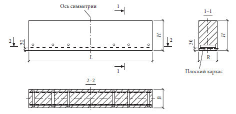
Рисунок 4.2 - Полистиролбетонная перемычка, армированная П-образным стальным оцинкованным профилем
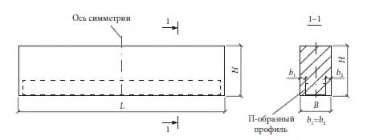
торцов несущих железобетонных перекрытий в зданиях с оштукатуриваемым или вентилируемым фасадом.
Допускается изготавливать на стройплощадке доборные изделия резкой рядовых блоков или плит при обязательном использовании кондукторов, обеспечивающих получение изделий с допусками по габаритным размерам согласно техническим условиям завода-изготовителя.
5Система энергоэффективных ограждающих конструкций из сборного полистиролбетона
5.1Классификация ограждающих конструкций и состав системы
- ненесущие наружные стены из полистиролбетонных блоков и перемычек с утеплением полистиролбетонными плитами торцов железобетонных перекрытий;
- несущие наружные стены полистиролбетонные малоэтажных зданий из сборного конструкционно-теплоизоляционного полистиролбетона повышенной плотности и прочности;
- несущие наружные стены железобетонные многоэтажных зданий, утепляемые полистиролбетонными изделиями;
- железобетонные покрытия и перекрытия: чердачные, над холодными подвалами, подпольями и проездами, а также стилобаты, утепляемые полистиролбетонными плитами.
- полистиролбетонные сборные изделия: блоки, армированные перемычки, теплоизоляционные плиты и архитектурные элементы фасадов зданий;
- клеевые композиции для кладки сборных полистиролбетонных изделий;
- облицовочные негорючие слои стеновых ограждающих конструкций:
- наружные - в виде кирпичной кладки, или армированной штукатурки, или декоративных плиток, в т. ч. монтируемых на относе для вентилируемых фасадов;
- внутренние - из гипсоволокнистых листов (ГВЛ и ГВЛВ) или армированной штукатурки;
- стальные связевые (штукатурные сетки, проволочные хомуты) и связево-монтажные (штыри, пластины, перфорированные ленты) элементы для армирования кладки и соединения элементов ограждающих конструкций между собой или со слоями облицовки.
- бетонов тяжелых, в т. ч. мелкозернистых, а также легких конструкционных (для несущих конструкций);
- стальных изделий (закладных, арматурных сеток, уголков);
- теплоизоляционных материалов из негорючей минеральной ваты для устройства термовкладышей, заполнения зазоров под перекрытием, полостей между перемычками и под оконными или дверными блоками;
- базальтовых матов для огнезащиты полистиролбетонных блоков в зданиях с навесным вентилируемым фасадом;
- герметизирующих изделий (втулки, шнуры, мастики);
- энергоэффективных оконных стеклопакетов ( R 0 1,0 (м² о С)/Вт) и дверных блоков, уплотняемых по контуру монтажной пеной и паропроницаемыми саморасширяющимися лентами;
- крепежных элементов (дюбелей, шурупов, шайб, планшайб).
5.2Особенности применения ограждающих конструкций
Таблица 5.1 -Параметры жилых и общественных зданий с ограждающими конструкциями из особо легкого полистиролбетона
| Параметр | Единица измерения | Номинальное значение размера, параметра |
|---|---|---|
| 1 Шаги в продольном направлении между несущими стенами (колоннами) | мм | 3300, 3600, 4200, 4800, 5400, 6000, 6600, 7200 |
| 2 Высота этажа, Н | мм | 2800,3000,3300 |
| 3 Усредненная высота оконного проема, h ок | м | 1,2; 1,5; 1,8 |
| 4 Усредненная ширина проемов (без учета толщины четверти и оштукатуривания откосов) | м | 0,9; 1,2; 1,5; 1,8; 2,1; 2,4; 2,7 |
| 5 Толщина перекрытий | мм | 140, 160, 180, 200, 220,250 |
| 6 Толщина внутренних несущих стен | мм | 140, 160, 180, 200 |
| 7 Высота зданий, не более: - жилых - общественных | м | 75 50 |
| 8 Расстояние между температурными швами, не более | м | 100 |
| Примечание - Приведенная в таблице высота этажа Н и оконных проемов h ок относится к жилым зданиям. | Примечание - Приведенная в таблице высота этажа Н и оконных проемов h ок относится к жилым зданиям. | Примечание - Приведенная в таблице высота этажа Н и оконных проемов h ок относится к жилым зданиям. |
- крепление несущих реечных металлоконструкций к блокам из полистиролбетона при устройстве системы навесных вентилируемых фасадов на относе;
- применение без специальной гидроизоляции полистиролбетона в подземных и цокольных этажах зданий.
Таблица 5.2 -Области применения сборных полистиролбетонных изделий в ограждающих конструкциях зданий
| Вид | Исполнение | Область применения | Показатели полистиролбетона по | Показатели полистиролбетона по |
|---|---|---|---|---|
| полистиролбетона | средней плотности | прочности на сжатие | ||
| Теплоизоляционный | Плиты | Теплоизоляция: покрытий; перекрытий чердачных, над проездами, холодными подвалами и подпольями; | D150-D225 | М2- М5(В0,35) |
| торцов железобетонных перекрытий; цоколей и фундаментов* ) | ||||
|---|---|---|---|---|
| Теплоизоляционно- конструкционный | Блоки, перемычки | Наружные ненесущие стены зданий высотой до 75 м включительно** ) | D250-D350 | В0,5-В1 |
| Конструкционно- теплоизоляционный | Блоки | Наружные несущие стены малоэтажных (1-2 этажа) зданий*** ) | D400-D600 | В1,5-В2,5 |
| Конструкционно- теплоизоляционный | Перемычки | Наружные ненесущие и несущие стены | D400-D600 | В1,5-В2,5 |
5.3Требования к материалам и элементам ограждающих конструкций
5.3.1 Клеевые композиции для кладки полистиролбетонных изделий
Для кладки и склеивания полистиролбетонных элементов рекомендуется использовать «теплые» клеевые композиции плотностью в затвердевшем состоянии 600-800 кг/м³ из сухих смесей, изготавливаемых на основе портландцемента и мелкого песка.
При использовании указанных композиций в кладке из полистиролбетонных (ПСБ) блоков при заданных толщинах кладочных швов (не более 4-5 мм) их усадка не проявляется и сквозные трещины не образуются (при этом поверхностные усадочные трещины должны повторно затираться), вследствие чего в затвердевших клеевых композициях (растворах) обеспечивается повышенная воздухонепроницаемость швов.
Клеевые композиции применяются при положительных температурах (от +5 о С до +40 о С) и в зимнем варианте (при температурах от -20 о С до +5 о С). Их жизнеспособность (начало схватывания) в зависимости от температуры применения составляет 15-120 мин.
Технические требования к «теплым» клеевым композициям для кладки полистиролбетонных блоков и их основным показателям в затвердевшем состоянии приведены в таблице 5.3.
Таблица 5.3 -Технические требования к «теплым» клеевым композициям
| Наименование показателя затвердевшей клеевой композиции | Значение показателя | Значение показателя |
|---|---|---|
| 1 Объемная масса (плотность), кг/м³ | 600 | 800 |
| 2 Прочность на сжатие в 28 сут, МПа, не менее | 2,0 | 2,5 |
| 3 Предел прочности при изгибе, МПа, не менее | 0,5 | 0,6 |
| 4 Коэффициент теплопроводности, Вт/(м о С), не более: - в сухом состоянии | 0,17 | 0,19 |
| - для условия эксплуатации «А» | 0,19 | 0,21 |
| -для условий эксплуатации «Б» | 0,20 | 0,22 |
|---|---|---|
| 5 Морозостойкость, не менее | F35 | F50 |
| 6 Горючесть | Негорючий | Негорючий |
| 7 Адгезионная прочность к полистиролбетону, МПа, не менее | 0,1 | 0,1 |
| 8 Токсичность композиции и ее компонентов | Нетоксичны, экологически безопасны | Нетоксичны, экологически безопасны |
| 9 Коэффициент водостойкости, не менее | 0,95 | 0,95 |
| 10 Рекомендуемая толщина клеевого шва, мм | 2-4 | 2-4 |
Допускается использовать для кладки полистиролбетонных блоков «холодных» клеевые композиции (плотностью 1600-1700 кг/м³ ) с показателями не ниже, указанных в таблице 5.3 (кроме теплопроводности).
5.3.2 Кладка из полистиролбетонных блоков
При расчете стен с применением кладки из полистиролбетонных блоков 6 влияние клеевых швов между блоками учитывают с помощью коэффициента условий работы К , на который умножают расчетные сопротивления полистиролбетона:
- сопротивление сжатию Rb при кладке на «холодных» ( = 1600 1700 кг/м³ ) клеевых композициях К = 0,7;
- сопротивление сжатию Rb при кладке на «теплых» ( = 600 800 кг/м³ ) клеевых композициях К = 0,8;
- сопротивление растяжению при изгибе Rbtf при кладке на «холодных» клеевых композициях К = 0,85;
- сопротивление растяжению при изгибе Rbtf при кладке на «теплых» клеевых композициях К = 0,9.
Расчетные прочностные характеристики кладки из полистиролбетонных блоков, учитывающие понижающие коэффициенты условий работы, приведены в таблице 5.4.
Характеристики теплотехнической однородности кладок из полистиролбетонных блоков с учетом их размеров, теплопроводности полистиролбетона и клеевых швов, а также толщины последних, приведены в таблице 5.5.
Таблица 5.4 Расчетные прочностные характеристики кладки из ПСБ блоков
| Марка ПСБ по средней | Класс по прочности на сжатие* | Модуль упругости кладки*, Е b 10 -2 , МПа | Модуль упругости кладки*, Е b 10 -2 , МПа | Расчетное сопротивление кладки из ПСБ блоков, МПа | Расчетное сопротивление кладки из ПСБ блоков, МПа | Расчетное сопротивление кладки из ПСБ блоков, МПа | Расчетное сопротивление кладки из ПСБ блоков, МПа |
|---|---|---|---|---|---|---|---|
| На клеевых | На клеевых | сжатию, R bk | сжатию, R bk | растяжению при изгибе, R btfk | растяжению при изгибе, R btfk | ||
| «теплых» | «холодных» | На «теплых» клеевых | На «холодных» клеевых | На «теплых» клеевых | На «холодных» клеевых | ||
| плотности | |||||||
| композициях | композициях | композициях | композициях | ||||
| композициях | композициях | ||||||
| D225 | В0,35/ В0,5 | 200/220 | 270/300 | 0,23 | 0,20 | 0,14 | 0,13 |
| D250 | В0,5/ В0,75 | 250/275 | 330/360 | 0,33 | 0,29 | 0,19 | 0,18 |
| D300 | В0,75/ В1 | 300/365 | 390/470 | 0,48 | 0,42 | 0,25 | 0,24 |
|---|---|---|---|---|---|---|---|
| D350 | В1/ В1,5 | 425/500 | 540/630 | 0,63 | 0,55 | 0,29 | 0,27 |
| D400 | В1,5 | 585 | 720 | 0,92 | 0,81 | 0,34 | 0,32 |
| D450 | В1,5 | 705 | 860 | 1,18 | 1,04 | 0,39 | 0,37 |
| D500 | В2 | 770 | 930 | 1,43 | 1,25 | 0,41 | 0,39 |
* В числителе указаны классы прочности полистиролбетона и модуль упругости кладки из полистиролбетонных блоков, изготавливаемых по обычной технологии, в знаменателе - по технологии, указанной в 5.11 ГОСТ 339292016.
Таблица 5.5 -Расчетный коэффициент теплотехнической однородности кладок из полистиролбетонных блоков D250
| Толщина горизонтального | Толщина вертикального | Значения расчетного коэффициента теплотехнической однородности кладки r кл | Значения расчетного коэффициента теплотехнической однородности кладки r кл | Значения расчетного коэффициента теплотехнической однородности кладки r кл | Значения расчетного коэффициента теплотехнической однородности кладки r кл |
|---|---|---|---|---|---|
| Толщина горизонтального | Толщина вертикального | на «теплой» клеевой композиции | на «теплой» клеевой композиции | на «холодной» клеевой композиции | на «холодной» клеевой композиции |
| шг , | а шв | Армирование горизонтального шва сеткой | стальной | базальтовой | стальной |
| 3 | 2 3 | 0,977/0,981 0,975/0,978 | 0,974/0,978 0,971/0,975 | 0,928/0,937 0,896/0,909 | 0,897/0,912 0,887/0,902 |
| 4 | 2 3 4 | 0,972/0,976 0,969/0,974 0,961/0,971 | 0,968/0,973 0,965/0,970 0,962/0,968 | 0,886/0,903 0,876/0,893 0,867/0,883 | 0,878/0,897 0,868/0,887 0,859/0,877 |
| 5 | 3 4 5 | 0,964/0,969 0,961/0,967 0,959/0,964 | 0,960/0,966 0,957/0,964 0,955/0,961 | 0,857/0,877 0,848/0,868 0,839/0,858 | 0,850/0,871 0,841/0,862 0,832/0,852 |
Примечания
1 Габаритные размеры полистиролбетонных блоков: высота Н - 295 и 375 мм, длина L =595 мм.
- 2 В числителе указаны значения r кл при высоте блока Н =295 мм, в знаменателе - при высоте блока Н =375 мм.
- 3 Характеристики полистиролбетона: марка по средней плотности D250, расчетная теплопроводность ПСБ=0,08 Вт/(м о С).
- 4 Характеристики клеевой композиции: «теплой» - плотность =800 кг/м³ , к=0,22 Вт/(м о С); «холодной» - =1650 кг/м³ , к=0,70 Вт/(м о С).
- 5 Расчетные коэффициенты теплопроводности материалов приняты для условий эксплуатации «Б».
- 6 Теплопроводность горизонтальных швов блочной кладки, армированных базальтовой сеткой, принимают шг= к, а армированных стальной сеткой вычисляют по формуле (7.90).
7 Коэффициент теплотехнической однородности кладки вычисляют по формуле (7.89).
5.3.3 Облицовочные и комплектующие материалы
Для фасадной облицовки стен применяют лицевой кирпич керамический, отвечающий требованиям ГОСТ 530, марки по прочности не ниже М100 и по морозостойкости не ниже F75, полнотелый или пустотелый с ограниченной пустотностью (не более 25 %) и утолщенной (не менее 20 мм) наружной стенкой.
Для кирпичной кладки используют раствор марки не ниже М50.
Штукатурный слой на наружной или внутренней поверхности стен выполняют по стальной сетке цементно-песчаным или цементно-песчано- известковым раствором класса по прочности на сжатие не ниже М50, морозостойкости - не ниже F50, отвечающим требованиям ГОСТ 28013. Требования к приготовлению и применению растворов строительных приведены в [10].
Для внутренней облицовки наружных стен рекомендуют (наряду с оштукатуриванием) использовать гипсоволокнистые листы типа ГВЛ или ГВЛВ по ГОСТ Р 51829.
В качестве комплектующих материалов (теплоизолирующих, герметизирующих, уплотняющих, шпаклевочных, крепежных) используют:
- негорючие минераловатные плиты по ГОСТ 9573, ГОСТ 22950 плотностью 125 кг/м³ для устройства противопожарных рассечек и термовкладышей;
- негорючие прокладки из мягкой минеральной ваты по ГОСТ 4640 плотностью 55-75 кг/м³ для устройства сжимаемого теплоизолирующего шва под перекрытием и заполнения щелей между перемычками и подоконными сливами;
- монтажную пену, в т. ч. морозостойкую, для уплотнения зазоров в оконных и дверных проемах;
- герметизирующие прокладки, тиоколовую мастику для гидроизоляции сжимаемой прокладки (шва);
- клеевую смесь для приклеивания ГВЛ к полистиролбетонным блокам;
- шовно-шпаклевочную мастику безусадочную на основе сухих смесей для заделки швов между ГВЛ и цементно-песчаной облицовкой полистиролбетонных блоков повышенной заводской готовности;
- стальные саморезы диаметром 6 мм длиной 25-40 мм для крепления слоев ГВЛ друг к другу.
В качестве специальных огнезащитных материалов используют:
- базальтовые маты или плиты толщиной 20-50 мм, устанавливаемые с наружной стороны кладки из полистиролбетонных блоков, для стен с вентилируемым навесным фасадом;
- асбестовые прокладки толщиной 5 мм, устанавливаемые в обрамлениях деревянных или пластиковых оконных и дверных стеклопакетов.
5.3.4 Связевые и связево-монтажные элементы
Крепление слоев наружных стен из сборных полистиролбетонных блоков осуществляют связевыми элементами, расположенными в совпадающих горизонтальных швах кирпичной и блочной полистиролбетонной (при кирпичной облицовке) кладок или во всех горизонтальных швах блочной полистиролбетонной кладки (при штукатурной облицовке).
В качестве горизонтальных связей в блочной кладке используют сетки стальные штукатурные из проволоки диаметром 1,0-1,2 мм с ячейкой размером 20×20 мм или базальтовые диаметром 1 мм с ячейкой размером 25×25 мм огнестойкие, например с бентонитовым замасливателем. Допускается использование в качестве гибких связей стальных анкеров из проволоки диаметром 3 мм Вр-I по ГОСТ 6727.
Для крепления базальтовых огнезащитных матов к полистиролбетонным блокам в стенах с вентилируемым фасадом используют стальные дюбели, тарельчатые шайбы и шурупы.
Для соединения несущих стен, колонн и перекрытий с полистиролбетонными блоками, для закрепления оконных (дверных) блоков и навесного оборудования следует использовать такие связево-монтажные элементы, как стальные крепежные пластины, перфорированные стальные ленты сечением 26×1 мм, дюбели, шайбы и шурупы.
- 6 Требования к архитектурно-строительным и объемнопланировочным решениям зданий с ограждающими конструкциями из полистиролбетона
6.1 Общие требования
- 6.1.1 На фасадах наружных стен зданий из особо легкого полистиролбетона в обязательном порядке должны устраиваться температурно-деформационные швы: вертикальные для кирпичного фасада с шагом 3-9 м, а при оштукатуривании через 3 м и горизонтальные (для ненесущих стен) - под перекрытиями.
- 6.1.2 Соединение (связь) облицовочных слоев наружных стен с кладкой из полистиролбетонных блоков и перемычек осуществляют при помощи штукатурной сетки (стальной, базальтовой), устанавливаемой в каждом горизонтальном шве кладки. Допускается применение для этих целей специальных хомутов (скоб) из арматурной проволоки диаметром 3 мм Вр-I.
- 6.1.3 Для снижения теплопотерь зданий с кирпичным или вентилируемым фасадом через железобетонные перекрытия у их торцов (в пределах толщины наружных стен) устраивают термовкладыши из негорючей минеральной ваты толщиной не менее 175 мм и длиной до 1,2 м.
При этом ширина сечения железобетонных шпонок должна быть минимальной, определяемой расчетом, но не менее 80 мм. Рекомендуемые размеры железобетонных шпонок приведены в таблице 6.1.
При оштукатуривании фасадов здания торцы железобетонных перекрытий утепляют доборными полистиролбетонными плитами.
Таблица 6.1 -Размеры шпонок между термовкладышами в железобетонных плитах перекрытий для зданий с кирпичным фасадом
| Высота сечения железобетонной плиты перекрытия, мм | Ширина сечения железобетонной шпонки, мм | Ширина сечения железобетонной шпонки, мм |
|---|---|---|
| Высота сечения железобетонной плиты перекрытия, мм | Облицовка в 1 кирпич | Облицовка в 0,5 кирпича |
| 140 | 160 | 120 |
| 160 | 160 | 120 |
| 180 | 120 | 100 |
| 200 | 120 | 100 |
| 220 | 100 | 80 |
| 250 | 100 | 80 |
| Примечания | Примечания | Примечания |
- 1 Шаг шпонок - 1200 мм.
- 2 Железобетонная плита перекрытия из бетона класса по прочности В25.
- 3 Шпонки заармированы стальными каркасами с продольной арматурой А500, поперечной - А240, согласно СП 63.13330.
- 4 Шаг поперечных стержней диаметром 6 мм А240 - 50 мм.
- 5 Высота сечения шпонок соответствует принятой высоте сечения железобетонной плиты перекрытия.
6.1.4 В ненесущих стенах между верхом кладки из полистиролбетонных блоков и перекрытием должен быть устроен зазор размером 20-30 мм, обеспечивающий независимость деформаций плит перекрытия и наружных стен. Зазор рекомендуется заполнять негорючей мягкой минеральной ватой D75.
6.1.5 В ненесущих стенах крепление верха кладки из полистиролбетонных блоков к примыкающей к ней плите перекрытия осуществляют металлическими штырями или полосами с заостренными концами, забиваемыми в блочную кладку у торцов плит перекрытий или через отверстия в перекрытиях для термовкладышей. Расстояние от места установки пластины до края полистиролбетонного блока принимают не менее 100 мм.
6.1.6 Для зданий с кирпичным фасадом используют либо кладку в 0,5 кирпича с усиленными связями, либо кладку в один кирпич.
При использовании кирпичной облицовки в 0,5 кирпича она должна опираться на железобетонные перекрытия всей поверхностью без свеса, а при облицовке в один кирпич допускается свес до 25 мм.
6.1.7 Требования к безопасной эксплуатации наружных стен с фасадной облицовкой в 0,5 кирпича при проектировании жилых и общественных зданий приведены в [7].
В частности, необходимо обеспечивать:
- устройство температурно-деформационных швов (требования к конструкции вертикального шва в облицовочном кирпичном слое приведены в [7], горизонтального под перекрытием - принимаются по техническим решениям, приведенным в 6.3 настоящего свода правил);
- армирование горизонтальных швов кирпичной облицовки, в т. ч. усиленное в углах и Z-образных простенках по расчету на температурновлажностные воздействия с учетом конструктивных требований к их армированию;
- усиление крепежных соединений кирпичной облицовки к несущим конструкциям здания в угловых зонах, по периметру проемов и в местах вертикальных деформационных швов;
- защиту кирпичного фасада, в т. ч. горизонтальных деформационных швов, от атмосферной воды, например, за счет устройства дополнительных сливов.
Запрещается использование стальных уголков или пластин для опирания кирпичной облицовки на уровне перекрытий.
6.1.8 При проектировании облицовки наружных стен выбор между ГВЛ и армированной штукатуркой должен производиться с учетом требований и результатов прочностных расчетов на ветровые нагрузки, изложенных в 7.2.2 настоящего свода правил. Условия применения облицовочных слоев для наружных стен зданий отражены в таблице 6.2.
Таблица 6.2 Условия применения облицовочных слоев для наружных стен зданий
| Конструкция облицовочных слоев | Конструкция облицовочных слоев | Конструкция облицовочных слоев | Высота здания | Высота здания |
|---|---|---|---|---|
| Наружный слой | Внутренний слой, мм | Внутренний слой, мм | H 50 м (до 16 эт.) | H =51 75 м (17-25 эт.) |
| Армированная штукатурка 20-25 мм | ГВЛ 2×10 ГВЛ 2×12,5 | ГВЛ 2×10 ГВЛ 2×12,5 | + + | - + |
| Облицовка в 0,5 или 1 кирпич | ГВЛ 2×10 ГВЛ 2×12,5 | ГВЛ 2×10 ГВЛ 2×12,5 | + + | - + |
| Навесной фасад (армированная штукатурка 20-25 мм или огнезащитные базальтовые маты или | ГВЛ 2×10 | ГВЛ 2×10 | + | - |
| плиты 20-50 мм) Цементно-стружечные плиты (ЦСП) | ГВЛ 2×12,5 | ГВЛ 2×12,5 | + | + |
| 20-24 мм | ГВЛ 2×10 ГВЛ 2×12,5 | ГВЛ 2×10 ГВЛ 2×12,5 | + + | - - |
| Армированная штукатурка 20-25 мм | Армированная штукатурка | 20 25 | + + | - + |
Примечания
1 Ветровая нагрузка принята по СП 20.13330 для 1-го ветрового района России.
- 2 Для зданий высотой до 40 м пульсационную составляющую ветрового давления не учитывают, принят тип местности А (открытая местность). При применении ЦСП высота здания - не более 15 м.
- 3 Для зданий высотой более 40 м учитывают пульсационную составляющую, принимают тип местности В (городская застройка).
- 4 Во всех случаях ветровую нагрузку рассчитывают для простенка шириной 60 см на уровне середины верхнего этажа здания.
- 5 Принятая в расчетах высота этажа - 3,3 м.
- 6 Основной слой стены принят из ПСБ блоков толщиной 375 мм класса по прочности В0,5.
- 6.1.9 В наружных стенах из полистиролбетонных блоков с облицовкой фасада кирпичом или армированной штукатуркой и ГВЛ с внутренней стороны балконные плиты выполняют как продолжение плиты перекрытия с устройством термовкладышей, располагаемых под стенами.
В местах расположения двери для балкона или лоджии устраивают порог с использованием полистиролбетонного стенового блока (или его части), облицованного на толщину 20-25 мм мелкозернистым бетоном класса по прочности не ниже В20 с армированием в два ряда мелкоячеистой стальной сеткой (с целью защиты порога от ударов, которые возможны при эксплуатации балкона (лоджии)).
- 6.1.10 Для обеспечения антивандальной защиты наружных стен из полистиролбетона для первых этажей зданий фасадную облицовку следует выполнять из полнотелого кирпича марки не менее М75 или керамогранитных (гранитных) плит.
- 6.1.11 Наружные стены зданий в помещениях со свободным доступом, например лестничные клетки, следует облицовывать с внутренней стороны кирпичом или утолщенной керамической плиткой, а также армированной штукатуркой толщиной 20-30 мм.
6.2 Раскладка полистиролбетонных блоков и перемычек в наружных стенах
- 6.2.1 Технические решения стен с примерами раскладки полистиролбетонных блоков и перемычек по фасаду в ненесущих стенах для блоков высотой 295 и 375 мм приведены на рисунках 6.1 и 6.2 соответственно.
Блоки, прилегающие к оконным (дверным) проемам и к внутренним несущим стенам, имеют четверти. В зоне прилегания к несущим стенам по всей высоте этажа здания расположены противопожарные рассечки из полужесткой негорючей минеральной ваты D125 толщиной 50 мм.
- 6.2.2 Примеры раскладки полистиролбетонных блоков, приведенные на рисунках 6.1 и 6.2, применимы к ненесущим стенам зданий с различными видами фасадов и внутренними железобетонными поперечными несущими стенами, колоннами и пилонами.
- 6.2.3 Для несущих стен зданий исключается горизонтальный шов из сжимаемой минеральной ваты под железобетонным перекрытием.
6.3 Ненесущие наружные стены
- 6.3.1 Технические решения ненесущих наружных стен из полистиролбетонных блоков и перемычек для зданий с кирпичной фасадной облицовкой и несущими железобетонными стенами приведены на рисунках 6.3, а, б и 6.4.
Ненесущая стена из ПСБ блоков с наружной кирпичной облицовкой толщиной в 0,5 кирпича представлена на рисунке 6.3, толщиной в один кирпич - на рисунке 6.4.
Представленные решения для полистиролбетонных блоков высотой 295 и 375 мм увязаны с примером раскладки блоков и перемычек, показанных на рисунках 6.1 и 6.2. с кирпичным фасадом (толщина блоков 295 мм)
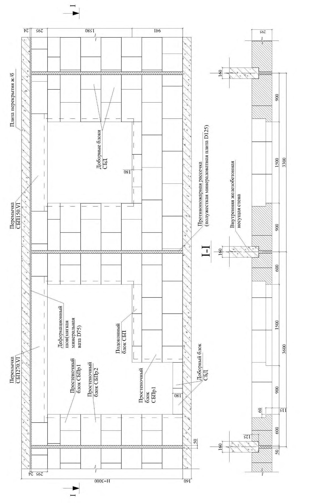
Рисунок 6.2 - Пример раскладки полистиролбетонных блоков и перемычек при монтаже наружной стены здания с кирпичным фасадом (толщина блоков 375 мм)
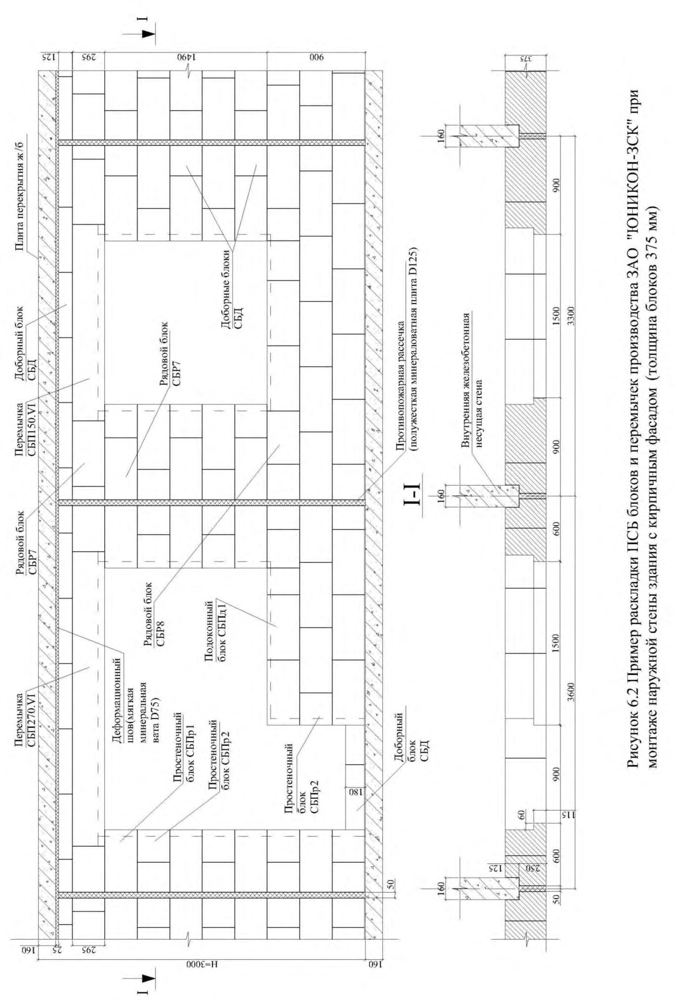
а а - вертикальные разрезы по оконному проему и глухому простенку
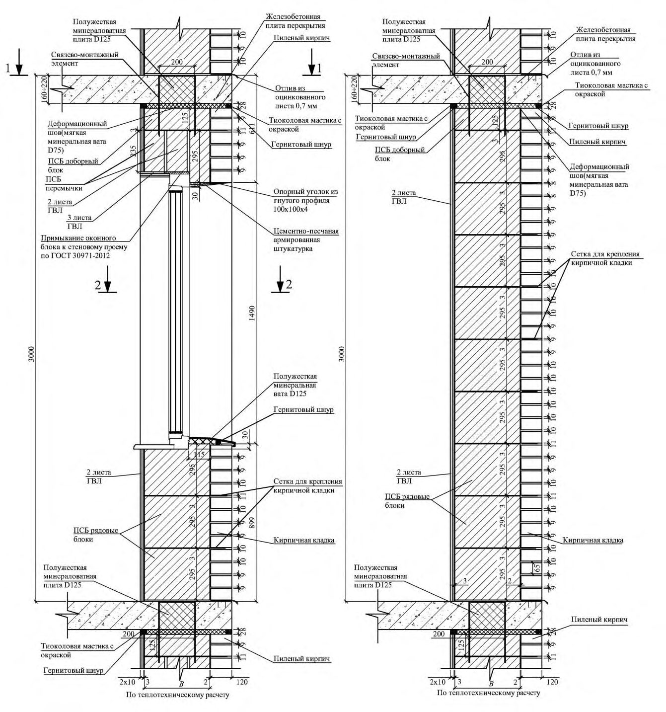
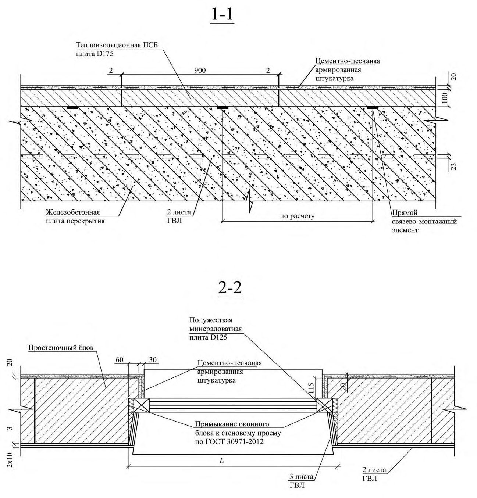
б - горизонтальные разрезы по оконному проему и перекрытию
Рисунок 6.3 - Ненесущая стена из полистиролбетонных блоков с наружной облицовкой толщиной 120 мм и внутренней облицовкой ГВЛ
Рисунок 6.4 - Ненесущая стена из полистиролбетонных блоков с наружной кирпичной облицовкой толщиной 250 мм и внутренней облицовкой ГВЛ. Вертикальные разрезы по оконному проему и глухому простенку
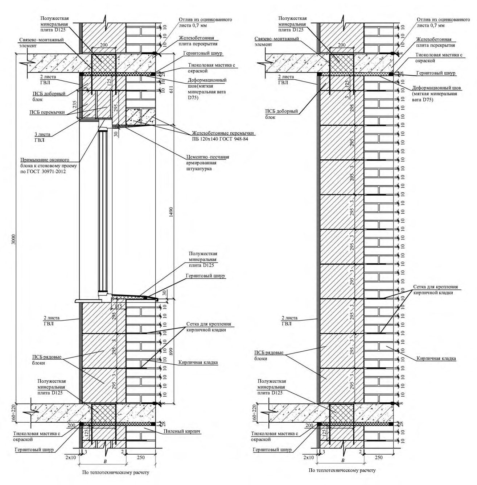
6.3.2 Кирпичная кладка и полистиролбетонные блоки отстоят друг от друга на расстоянии 2-3 мм, и между ними может предусматриваться: воздушный зазор (что улучшает теплозащитные свойства) или кладочная клеевая композиция, или раствор, необходимость в которых определяется как требованиями пожарной безопасности, так и требованиями по обеспечению сопротивления ветровым нагрузкам. Воздушный зазор между кладками должен предусматриваться на максимально возможной площади глухой части фасада здания, но не более 3 м² , в секциях, разделяемых полосами из негорючей клеевой композиции шириной 10-20 мм на всю толщину воздушного зазора.
6.3.3 На участке между перекрытием и верхом оконного (дверного) проема кирпичная облицовка опирается на окрашенный стальной уголок 100×100×4 мм, расположенный над проемом, или на железобетонную перемычку.
Для обеспечения устойчивости уголок имеет опорные пластины из стальных листов, привариваемых к нему на концевых участках, заходящие в горизонтальные швы кладки из полистиролбетонных элементов (блоков, перемычек) в простенках. Опорные пластины крепятся к полистиролбетонным блокам дюбелями 8×80 (диаметр × длину). При ширине проема более 1,5 м опорный стальной уголок должен дополнительно закрепляться к перемычке в середине ее пролета с использованием дюбеля 8×80 на монтажной пене, в который через раззенкованное отверстие в уголке завинчивается стальной шуруп с потайной головкой.
Опорные стальные уголки над проемами применяют с обязательной антикоррозионной окраской в соответствии со СП 28.13330 либо оцинкованными.
Опирание фасадной кирпичной кладки на перекрытия показано на рисунках 6.3 и 6.4. Предусматривается полное опирание (без консольных свесов) полистиролбетонных стеновых блоков и фасадной кирпичной облицовки на перекрытие, что повышает их устойчивость, в т. ч. на стадии возведения под действием ветрового давления.
6.3.4 Техническое решение ненесущей стены из ПСБ блоков для здания с несущими железобетонными колоннами и кирпичной облицовкой фасада приведено на рисунке 6.5.
6.3.5 Техническое решение ненесущей стены из полистиролбетонных блоков с заводской цементно-песчаной облицовкой для зданий с кирпичной фасадной облицовкой представлено на рисунке 6.6.
Швы между заводской цементно-песчаной облицовкой, образующиеся на внутренней стороне стены после монтажа блоков, заделывают безусадочной шпаклевочной мастикой.
6.3.6 При применении деревянных и пластиковых оконных (дверных) коробок их следует отделять от полистиролбетонных блоков негорючими прокладками, а в качестве теплоизоляционных вкладышей необходимо использовать негорючую минеральную вату.
6.3.7 Облицовку внутренней стороны полистиролбетонных стен осуществляют двумя гипсоволокнистыми листами, имеющими толщину 10 (12,5) мм, осуществляют двумя листами общей толщиной 20 (25) мм на вертикальных участках стен или тремя листами общей толщиной 30 мм на откосах. Первый слой ГВЛ крепят к полистиролбетонным блокам с помощью клеевых маяков, приготовленных из сухих клеевых смесей. Второй слой ГВЛ крепят к первому стальными саморезами.
Рисунок 6.5 - Ненесущая стена из ПСБ блоков с несущими железобетонными колоннами и кирпичной облицовкой фасада. Горизонтальный разрез
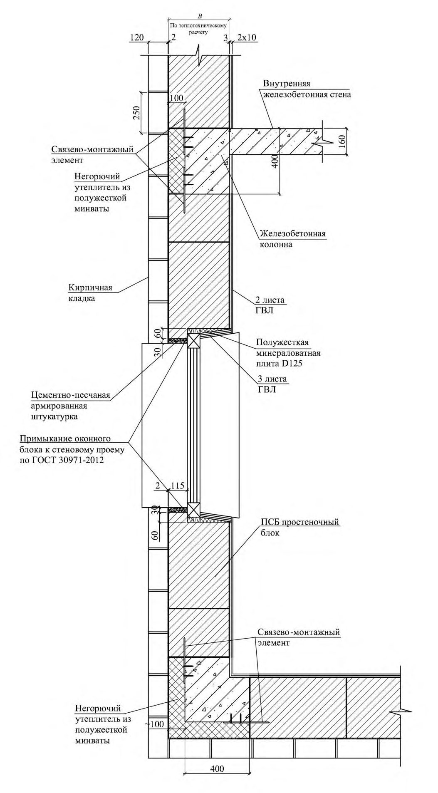
Рисунок 6.6 - Ненесущая стена из ПСБ блоков с заводской цементно-песчаной и кирпичной фасадной облицовкой толщиной в 0,5 кирпича. Вертикальный разрез по оконному проему
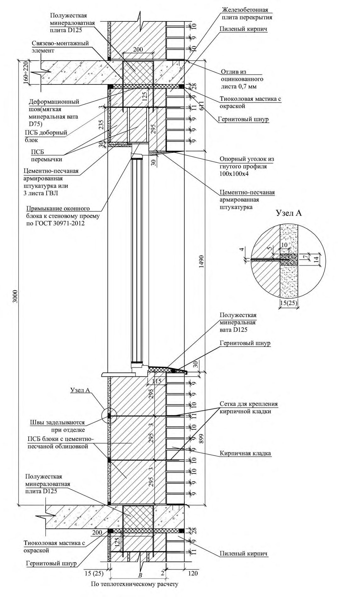
6.3.8 Кирпичная облицовка связана с полистиролбетонными блоками с помощью гибких металлических или базальтовых сеток, которые устанавливают в каждый горизонтальный клеевой шов между стеновыми полистиролбетонными блоками с выпусками на 2/3 толщины кирпичной облицовки.
6.3.9 Номинальная толщина вертикальных клеевых швов кладки из полистиролбетонных блоков составляет 2 мм, толщина горизонтальных швов - 3 мм. Расчетная толщина шва между плитами перекрытий и первым (нижним) рядом кладки из полистиролбетонных блоков составляет 5-8 мм, с учетом того, что в этот шов укладывают арматурную сетку (по ГОСТ 3826).
6.3.10 В подоконной части стены при высоте блоков 295 мм их укладывают в три ряда, причем верхние блоки, прилегающие к проему, имеют четверти размером 30×115 мм. Простеночные блоки с боковых сторон проемов также имеют четверти размером 60×115 мм.
6.3.11 В надоконной части стены для устройства четверти укладывают несколько (в зависимости от толщины блоков) разновысоких полистиролбетонных перемычек шириной 115-180 мм, одна высотой 295 мм и остальные высотой 235 мм с воздушными прослойками между ними. При этом перемычка высотой 295 мм выполняет функции верхней горизонтальной четверти проема. При необходимости на перемычки укладывают доборные полистиролбетонные блоки.
6.3.12 Для ненесущих стен между перекрытием и доборными стеновыми блоками должен быть предусмотрен зазор толщиной 20-30 мм, заполняемый сжимаемым негорючим материалом (например, негорючей минеральной ватой плотностью 55-75 кг/м³ по ГОСТ 4640), предназначенный для того, чтобы не допустить передачу давления на полистиролбетонные элементы стен при прогибе железобетонной плиты перекрытия.
6.3.13 На рисунке 6.3, б показано, что в плитах перекрытия предусматривают термовкладыши из эффективного негорючего утеплителя толщиной не менее 175 мм. Между термовкладышами расположены железобетонные шпонки, соединяющие основную и консольную части плиты перекрытия.
6.3.14 Техническое решение ненесущей стены из ПСБ блоков с наружной штукатуркой и внутренней облицовкой ГВЛ приведено на рисунке 6.7.
6.3.15 Для обеспечения несущей способности оштукатуриваемых стен при воздействии ветровых нагрузок штукатурку (толщиной 20-25 мм) выполняют из цементно-песчаного раствора марки 100 и выше для фасадов и марки не ниже 50 с внутренней стороны. При этом штукатурку армируют стальной оцинкованной (с фасадной стороны здания) и неоцинкованной (с внутренней стороны) штукатурной сеткой из проволоки диаметром 1-1,2 мм с ячейкой размером не более 10×10 мм. Эта сетка должна быть надежно закреплена вязальной проволокой (со стороны фасадов - вязальной оцинкованной проволокой) к выпускам связевой сетки или арматурной проволоки, расположенных в горизонтальных швах кладки из полистиролбетонных блоков.
Рисунок 6.7 - Ненесущая стена из ПСБ блоков с наружной штукатуркой и внутренней облицовкой ГВЛ. Вертикальные разрезы по оконному проему и глухому простенку
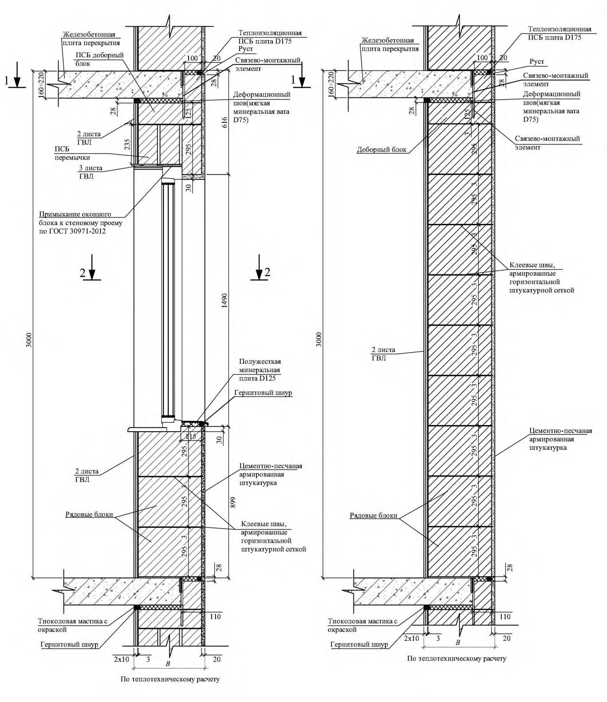
6.3.16 Для ненесущих наружных стен с оштукатуриванием фасадной стороны допускается использовать неполное опирание полистиролбетонных блоков на перекрытия или фасадные ригели. При этом консольный свес блочной кладки не должен превышать 1/3 ширины блока. Для блоков толщиной 375 мм рекомендуется применять свес на 100 мм.
Толщина слоя штукатурки на откосах проемов должна быть не менее 30 мм у оконных и дверных блоков и не менее 20 мм у края откосов, и она должна обязательно армироваться штукатурными стальными сетками.
Разновысокие перемычки оштукатуривают с боковой и нижней сторон по стальной мелкоячеистой сетке, при этом нижний штукатурный слой должен иметь толщину 30 мм. Со стороны внутреннего горизонтального откоса вместо штукатурки допускается использовать ГВЛ в 3 слоя по 10 мм.
Торец фасадной части перекрытия утепляют вставкой из плитного полистиролбетона плотностью D150-D200 или негорючего эффективного утеплителя.
- 6.3.17 Техническое решение наружной ненесущей стены здания с навесным вентилируемым фасадом приведено на рисунках 6.8, а , б .
Для таких стен предусматривают:
- крепление несущих реечных металлоконструкций только к торцам железобетонных перекрытий;
- огнезащиту кладки из полистиролбетонных блоков и перемычек с помощью облицовки толщиной не менее 20 мм из базальтовых матов (плит) или цементно-песчаной штукатурки, армированной стальной сеткой.
6.3.18 Внутренние несущие железобетонные стены в узлах стыковки с наружными полистиролбетонными должны входить в эти стены не менее чем на 40 мм (включая штукатурный слой). Рекомендуется осуществлять врезку внутренних железобетонных стен в наружные полистиролбетонные при условии утепления торца термовкладышем из негорючего материала толщиной не менее 50 мм, выполняющим также функцию противопожарных рассечек.
6.3.19 В случае необходимости для восприятия ветровых нагрузок стену из полистиролбетонных блоков усиливают стальным фахверком. Стойки фахверка устанавливают с внутренней стороны стены.
Стальные стойки фахверка рассчитывают на восприятие ветровой нагрузки, как правило, без учета полистиролбетонной части стены по условиям прочности и жесткости. Рекомендуется, чтобы их прогиб не превышал 1/500 пролета.
6.4 Несущие наружные стены
6.4.1 Техническое решение несущей, в частности торцевой, железобетонной стены, утепляемой полистиролбетонными блоками, с кирпичной фасадной облицовкой представлено на рисунке 6.9.
Связь блоков с железобетонной стеной обеспечивают Г-образной перфорированной стальной лентой толщиной 1 мм, один конец которой размещают в горизонтальном клеевом шве блочной кладки, а другой пристреливают стальными дюбелями и закрепляют стальной планшайбой толщиной 3 мм. а а - вертикальные разрезы по оконному проему (термовкладышу и шпонке в перекрытии)
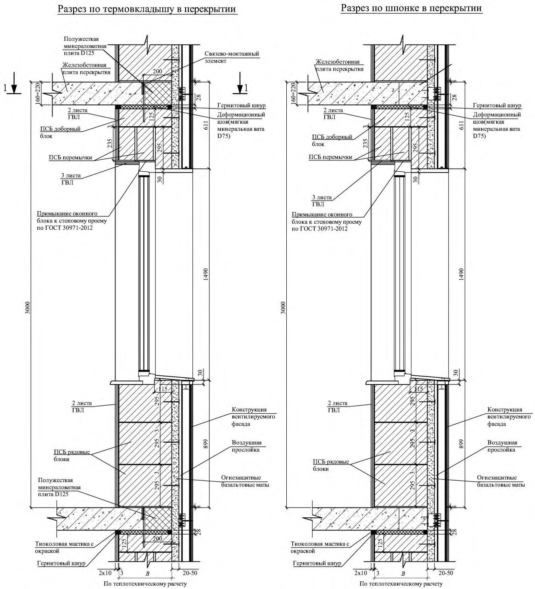
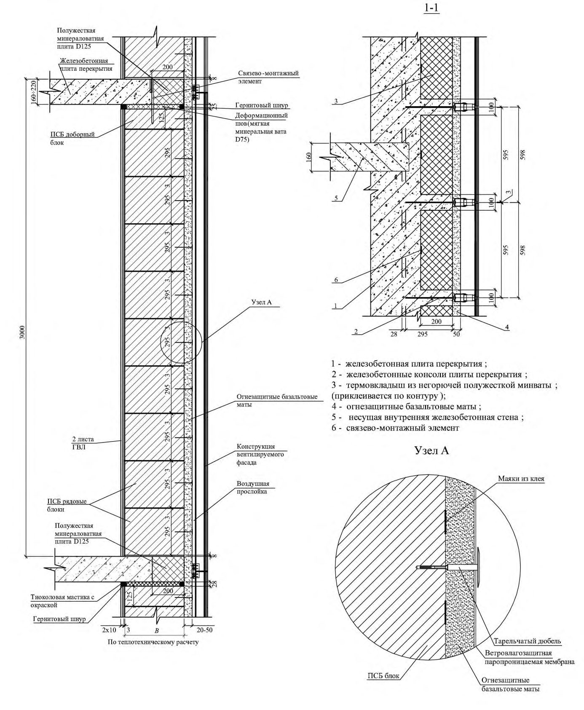
б - вертикальный разрез по глухому простенку и горизонтальный разрез по перекрытию
Рисунок 6.8 - Ненесущая стена из ПСБ блоков с вентилируемым фасадом
Связь между блочной и кирпичной кладкой обеспечивают стальной или базальтовой штукатурной сеткой по аналогии с техническими решениями, показанными на рисунках 6.3, а и 6.4.
Рисунок 6.9 - Несущая железобетонная стена с утеплением из ПСБ блоков и наружной кирпичной облицовкой толщиной в 0,5 кирпича
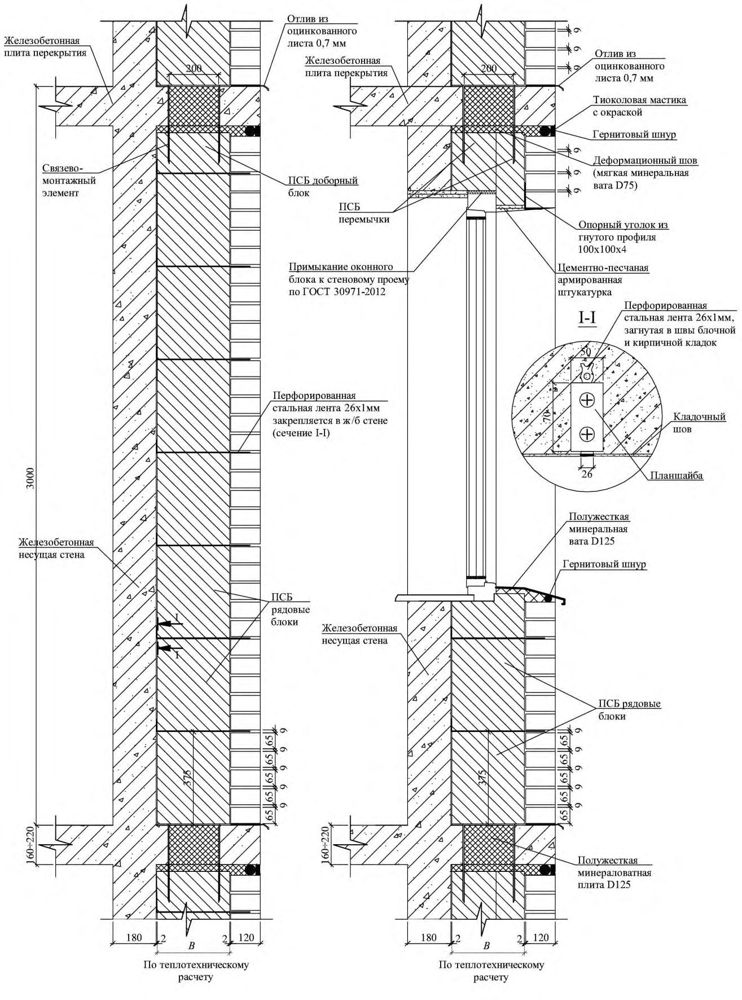
6.4.2 При утеплении несущих монолитных железобетонных наружных стен сплошными полистиролбетонными блоками с отделочным армированным штукатурным слоем с фасадной стороны плиту перекрытия выпускают консолью за грань фасадной поверхности несущей монолитной железобетонной стены. Фасадную (торцевую) сторону консоли утепляют полистиролбетонной теплоизоляционной плитой. Полистиролбетонные блоки имеют неполное опирание на железобетонную консоль по аналогии с техническим решением, принятым для ненесущей стены (6.3.14).
6.4.3 Несущие стены из сплошных полистиролбетонных блоков плотностью 450-500 кг/м³ с фасадным оштукатуриванием наружной стороны по стальной сетке или кирпичной облицовкой в 0,5 кирпича рекомендуется применять для зданий высотой 1-2 этажа, используя сборные железобетонные многопустотные плиты перекрытий.
6.4.4 Техническое решение несущей стены из полистиролбетонных блоков для здания с кирпичным фасадом представлено на рисунке 6.10 и с оштукатуренным фасадом на рисунке 6.11.
6.4.5 Для обеспечения нормируемого приведенного сопротивления теплопередаче наружной стены при использовании полистиролбетонных блоков с плотностью 450-600 кг/м³ принята двухслойная блочная кладка общей толщиной, определяемой теплотехническим расчетом. Кладку блоков выполняют с их взаимной перевязкой.
6.4.6 Железобетонную плиту перекрытия опирают на полистиролбетонные блоки и усиленные полистиролбетонные перемычки или на доборные стеновые полистиролбетонные элементы, уложенные на эти перемычки. Полистиролбетонные перемычки усиливают в растянутой зоне внешним армированием из стальных уголков 100х100х8 мм, позволяющим передавать на перемычки нагрузку от плиты перекрытия вместе с полезной нагрузкой.
Глубина опирания плит перекрытия на стену должна быть не менее 1/3 толщины стены (без учета облицовочного слоя). Согласно противопожарным требованиям все пустоты сборных плит перекрытия, ориентированные к наружной стене, заделывают на глубину опирания плиты минеральной ватой, смоченной в цементно-песчаном растворе, или закладывают бетонными вкладышами.
6.4.7 Кирпичная облицовка несущих стен из сплошных полистиролбетонных блоков должна опираться на фундаментные железобетонные конструкции зданий.
6.4.8 Торец железобетонного перекрытия утепляют доборным полистиролбетонным элементом.
Рисунок 6.10 - Несущая стена из полистиролбетонных блоков с фасадной облицовкой толщиной в 0,5 кирпича. Вертикальный разрез по оконному проему
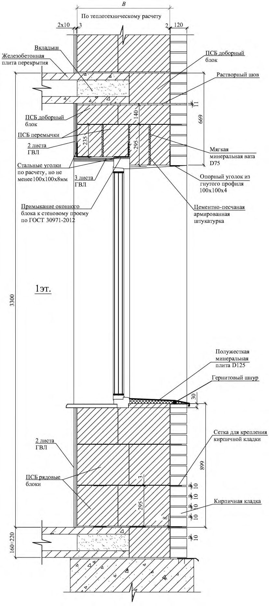
Рисунок 6.11 - Несущая стена из полистиролбетонных блоков с фасадной штукатуркой. Вертикальный разрез по оконному проему
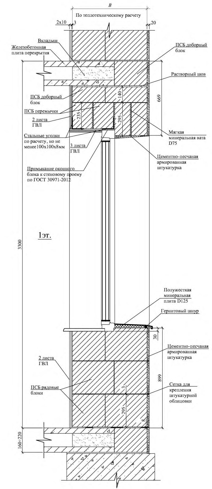
6.5 Утепляемые покрытия и перекрытия
6.5.1 Технические решения по утеплению кровельных покрытий зданий, чердачных перекрытий и перекрытий над холодными подвалами (подпольями, проездами) полистиролбетонными теплоизоляционными плитами, учитывающие требования СП 17.13330, приведены на рисунках 6.12-6.14.
Рисунок 6.12 - Утепление покрытия здания с использованием плитного полистиролбетона
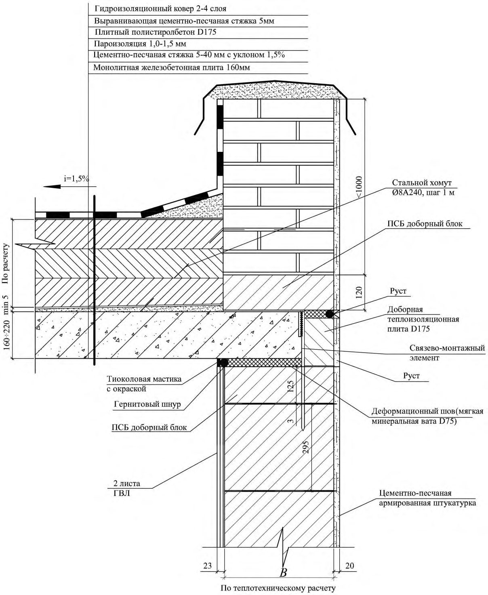
Рисунок 6.13 - Утепление чердачного перекрытия с использованием теплоизоляционных полистиролбетонных плит
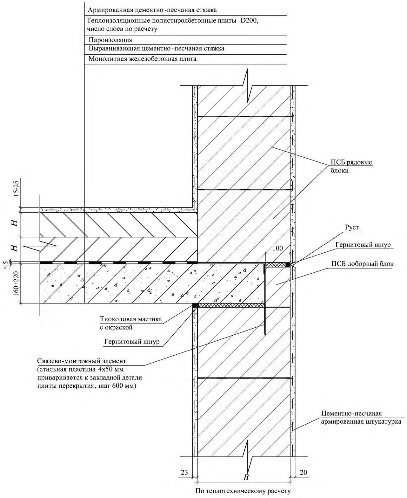
Рисунок 6.14 - Утепление перекрытия над холодными подвалами (подпольями, проездами) с использованием теплоизоляционных полистиролбетонных плит
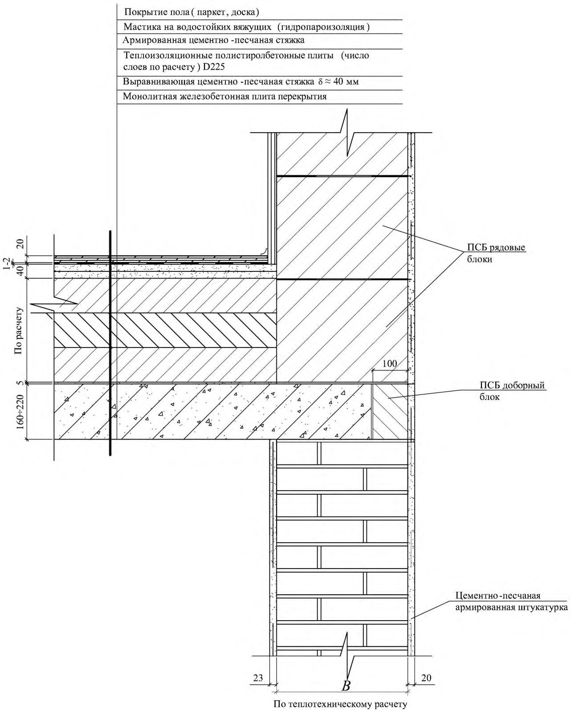
Для утепления используют плиты из полистиролбетона плотностью 150225 кг/м³ , марки по прочности на сжатие М2-М5, укладываемые с перекрытием вертикальных швов.
Общую толщину теплоизоляционного слоя и число слоев теплоизоляционных плит определяют по теплотехническому расчету СП 50.13330.
6.5.2 Утепляемое покрытие над отапливаемым чердаком рекомендуется устраивать плитами из полистиролбетона плотностью 150-200 кг/м³ с образованием уклонов для водостока (рисунок 6.12) керамзитовым или обычным строительным песком.
Полистиролбетонные плиты плотностью 150-200 кг/м³ , марки по прочности на сжатие не менее М2 используют для теплоизоляции кровельного покрытия. При этом под ними устраивают неармированную растворную стяжку толщиной не более 8 мм.
6.5.3 При утеплении полистиролбетонными теплоизоляционными плитами перекрытия неотапливаемого чердака на теплоизоляционный слой укладывают армированную растворную стяжку толщиной 15-25 мм, распределяющую на полистиролбетон нагрузку от людей и оборудования в чердачном помещении (рисунок 6.13).
6.5.4 Нагрузки от людей и оборудования, передаваемые на перекрытие над неотапливаемым подвалом (холодным подпольем, проездом), могут быть значительными. Поэтому по теплоизоляционному слою из плитного полистиролбетона выполнена армированная цементно-песчаная стяжка толщиной 40 мм (рисунок 6.14).
6.5.5 Во всех приведенных вариантах нижние теплоизоляционные полистиролбетонные плиты укладывают на железобетонное перекрытие по слою пароизоляции, предохраняющей полистиролбетон от увлажнения.
6.6 Узлы креплений в наружных стенах 6.6.1 Крепление оконных и дверных блоков
Деревянные и пластиковые оконные и дверные блоки крепят к полистиролбетонной перемычке круглыми стальными штырями диаметром 16 мм А-I с заостренными концами, забиваемыми в полистиролбетон перемычки с шагом, определяемым в зависимости от нагрузки на штыри при условии недопущения смятия полистиролбетона. Допустимый шаг штырей составляет а = 40 115 см в зависимости от высоты расположения окна (двери) над уровнем земли и соответствующего ветрового давления.
Боковые и нижние рамы оконных и дверных блоков допускается крепить к стенам из полистиролбетонных блоков с помощью стальных круглых штырей диаметром не более 20 мм или плоских штырей толщиной 4-5 мм и шириной 40-75 мм. Длина заделки штырей в полистиролбетон, размеры их сечения и количество определяют расчетом при условии недопущения смятия полистиролбетона от нагрузки на штыри, вызванной воздействием ветрового давления. Количество штырей принимают для оконных блоков не менее чем три штуки на вертикальные и две на горизонтальные стороны, для дверных блоков -не менее чем четыре штуки на вертикальную и две на горизонтальную стороны.
Расстояние от штыря до поверхности полистиролбетонного блока не должно превышать 100 мм.
Принципиальная схема рекомендуемого расположения крепежных штырей приведена на рисунке 6.15.
Рисунок 6.15 - Крепление оконных (дверных) блоков к стене из полистиролбетона
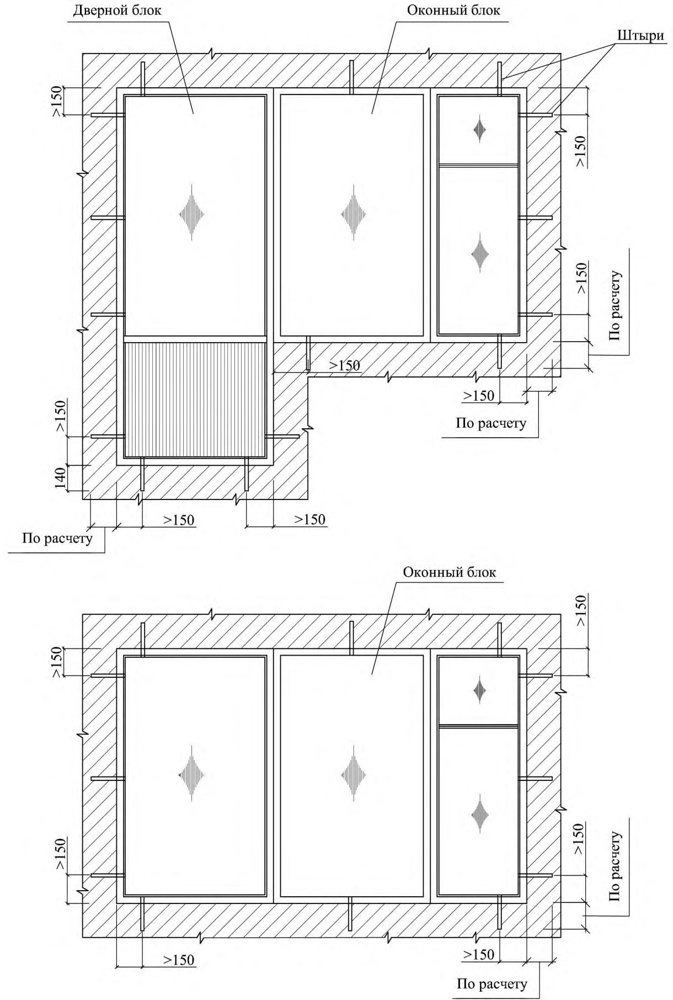
Рекомендуется расстояние от угла оконных и дверных блоков до первого стержня (штыря) принимать не более 250 мм и не менее 150 мм.
Одним из вариантов крепления оконных и дверных блоков с деревянной обвязкой является применение плоских штырей с «шляпкой» на конце.
Деревянную обвязку вокруг проемов с помощью саморезов крепят к «шляпкам» забитых в полистиролбетон плоских штырей, а оконный (дверной) блок крепят к обвязке гвоздями или шурупами диаметром 5-6 мм. Такое решение рекомендуется использовать в тех случаях, когда устройство пазов в оконных (дверных) блоках затруднено.
Крепление оконных и дверных блоков к ломаным или криволинейным перемычкам из полистиролбетона, собранным из прямолинейных перемычек с «подвеской» узлов их сопряжения к перекрытиям, рекомендуется проектировать по аналогии с креплением этих блоков к прямолинейным перемычкам.
По периметру оконных и дверных блоков следует устанавливать противопожарную прокладку из базальтового волокна (или асбестокартона) толщиной не менее 5 мм.
Допускается для уплотнения зазоров между стеной и оконными (дверными) блоками по периметру применять монтажные пены, в т. ч. морозостойкие, при наличии выданного в порядке, установленном действующим законодательством Российской Федерации, документа по оценке соответствия, разрешающего их применение для этих целей.
Примыкание оконных и дверных блоков к четвертям проемов рекомендуется осуществлять с использованием паропроницаемых саморасширяющихся, в т. ч. самоклеющихся лент, отвечающих требованиям ГОСТ 30971, ГОСТ Р 52749 и ГОСТ Р 53338.
6.6.2 Крепление облицовочных слоев
Связевые сетки (стальные или базальтовые) располагают в каждом горизонтальном клеевом шве кладки из полистиролбетонных блоков сплошным «ковром» (без разрывов) на глубину шва не менее 250 мм (при внутренней облицовке ГВЛ) или на всю толщину блоков (при двухстороннем оштукатуривании стены). Они должны иметь выпуски для связи с кирпичной или штукатурной облицовкой.
Кладка кирпичной облицовки в горизонтальных растворных швах на уровне горизонтальных швов из клеевых композиций между полистиролбетонными блоками должна иметь стальные оцинкованные сетки из трех продольных проволок диаметром 5 мм Вр-I (ВI) и поперечных диаметром 3 мм ВI (Вр-I), за которые с подгибом заводят выпуски связевой сетки или проволочных хомутов диаметром 3 мм из горизонтальных швов блочной кладки, закрепляемые оцинкованной вязальной проволокой (рисунки 6.16 и 6.17).
Крепление кирпичного облицовочного слоя в углах и Z-образных простенках наружных стен из ПСБ блоков должно обеспечиваться двумя слоями штукатурных сеток, устанавливаемых друг на друга в горизонтальных швах кладки. При этом дополнительную сетку размещают на длину 0,5-0,7 м в обе стороны от угла здания.
Крепление штукатурной сетки рекомендуется выполнять вязальной проволокой (оцинкованной с фасадной стороны) к выпускам горизонтальной штукатурной сетки или загнутых вверх связевых проволок диаметром 3 мм с шагом не более 300 мм. Отклонение армирующей штукатурной сетки от вертикальной плоскости не должно превышать 5 мм на расстоянии 1 м.
Для обеспечения надежного сцепления отделочного слоя с кладкой из полистиролбетонных блоков оштукатуриваемых стен сетки в горизонтальных швах кладки рекомендуется устанавливать с выпусками проволок горизонтальных сеток на 10 мм из плоскости кладки с загибом их за вертикальные штукатурные сетки. Для стен с кирпичным фасадом длина выпусков горизонтальных связевых сеток должна быть не менее 120 мм и обеспечен их загиб на 30-40 мм за сетку, армирующую кирпичную кладку.
Рисунок 6.16 - Крепление кирпичного облицовочного слоя к кладке из ПСБ блоков с использованием штукатурной сетки
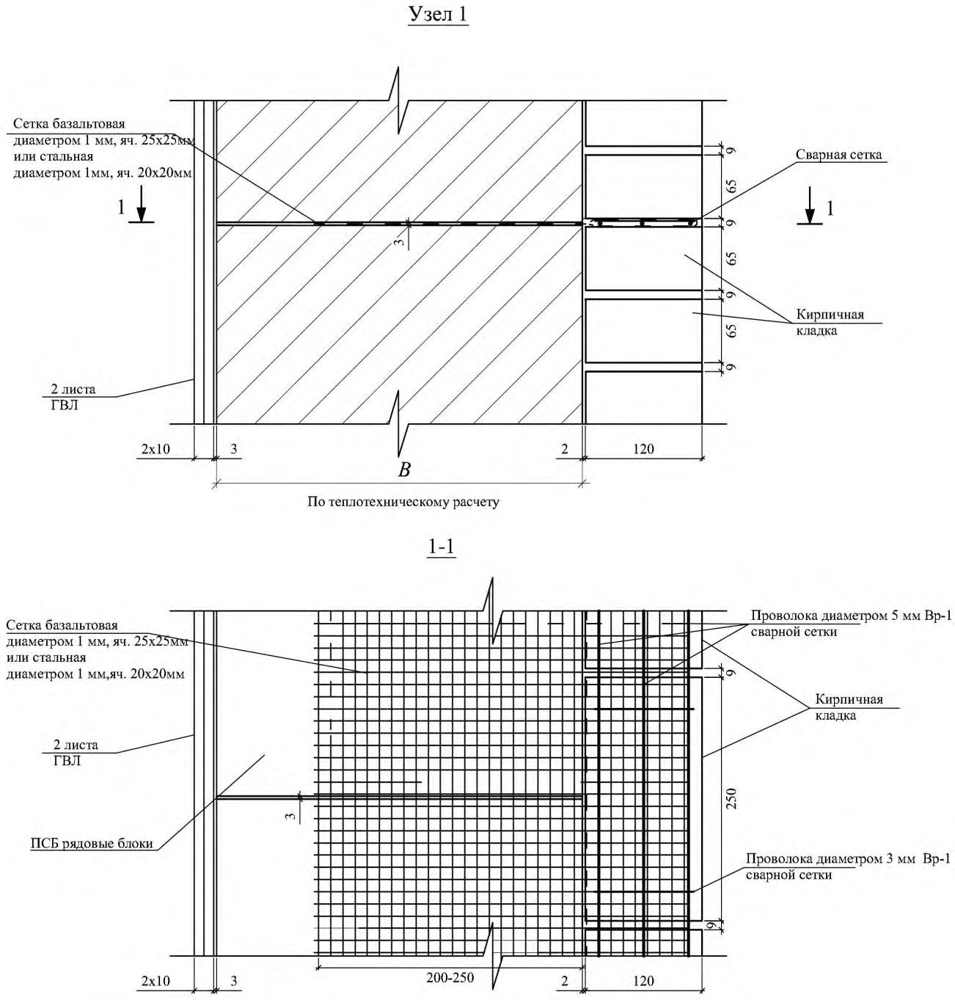
Рисунок 6.17 - Крепление облицовочных штукатурных и кирпичных слоев к кладке из ПСБ блоков с использованием проволочных хомутов
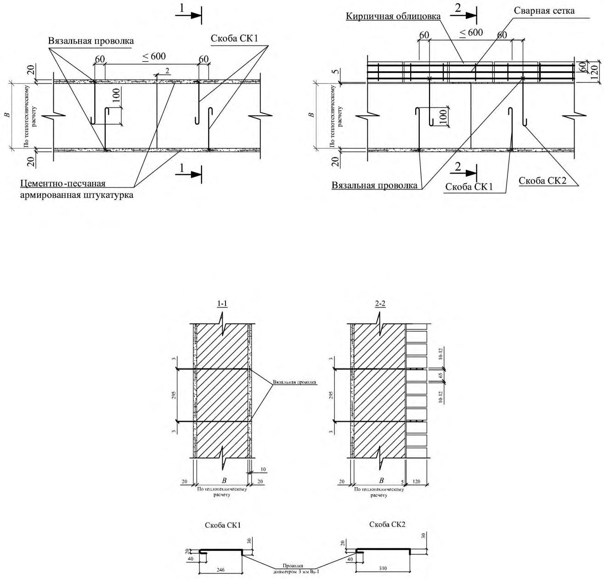
Штукатурные слои на откосах оконных и дверных блоков следует выполнять в месте примыкания к оконным (дверным) блокам толщиной не менее 30 мм, а на наружном крае поперечного сечения откоса - толщиной не менее 20 мм.
При использовании ГВЛ (ГВЛВ) в качестве внутренней облицовки наружных стен из полистиролбетонных блоков связевые сетки в горизонтальных швах устанавливают, как указано выше, кроме двух сеток в горизонтальных швах нижнего и верхнего рядов блоков, которые выпускают на длину 100-150 мм.
При использовании ГВЛ (ГВЛВ) (двух-трех листов толщиной по 10 мм или двух листов по 12,5 мм) в качестве внутренней облицовки наружных стен из полистиролбетонных блоков крепление производят: первого слоя, прилегающего к блокам, на клеевых «маяках», а второго (и третьего на откосах) с помощью стальных саморезов диаметром 5 мм, длиной не менее 30 мм (рисунок 6.18).
Перед монтажом ГВЛ (ГВЛВ) раскраивают (нарезают) таким образом, чтобы стыковые швы слоев не совпадали и отстояли друг от друга на расстоянии не менее 100 мм. При этом для первого слоя ГВЛ (ГВЛВ) нарезают листы высотой, равной высоте блока. Их приклеивают к верхнему и нижнему рядам блоков и при установке второго слоя ГВЛ выпуски связевой сетки заводят в щель между первым и вторым слоем ГВЛ (ГВЛВ), закрепляемым стальными саморезами (рисунок 6.18).
Рисунок 6.18 - Крепление ГВЛ к кладке из ПСБ блоков с использованием штукатурной сетки
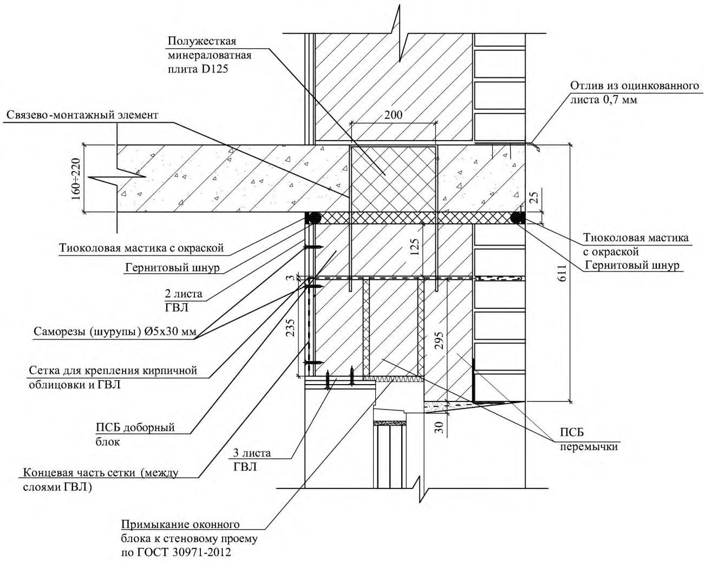
Крепление оштукатуренных базальтовых матов к полистиролбетонной блочной кладке (для зданий с навесными вентилируемыми фасадами) производят при помощи анкеров с тарельчатыми полиэтиленовыми дюбелями диаметром 8-10 по ГОСТ Р 56707, в которые ввинчивают шурупы диаметром 6-8 мм и длиной 80-100 мм, прижимающие и фиксирующие маты посредством тарельчатых элементов наружным диаметром 80-100 мм
(рисунок 6.8, б ). Анкеры с тарельчатыми дюбелями и шайбами устанавливают с шагом 0,5-0,7 м.
6.6.3 Крепление криволинейных и ломаных в плане полистиролбетонных перемычек
Крепление ломаных перемычек, составленных из сборных прямолинейных перемычек, к несущим конструкциям здания рекомендуется осуществлять с помощью металлических тяг. Тяги могут быть изготовлены, например из полосовой стали, и соединять узлы сопряжения прямолинейных перемычек с закладными деталями плит перекрытий.
При наличии облицовки из кирпича его опирание осуществляется на металлический уголок, который в пролете «подвешивается» к несущим конструкциям. Между перемычками и расположенными под ними конструкциями следует оставлять зазор, заполняемый мягким негорючим материалом.
В качестве подвешиваемых к перекрытию сборных полистиролбетонных перемычек рекомендуется использовать перемычки, армированные Побразным стальным оцинкованным профилем.
Рекомендуемое выше техническое решение крепления сборных перемычек к железобетонным перекрытиям в местах устройства эркеров с планом расположения элементов подвешивания перемычек приведено на рисунке 6.19.
6.6.4 Крепление наружных стен зданий на стадиях возведения и эксплуатации
Основной способ крепления наружных стен из полистиролбетонных блоков к несущим элементам каркаса здания заключается в установке связевомонтажных элементов, забиваемых в полистиролбетон непосредственно при монтаже.
Крепежные элементы представляют собой прямые П-образной либо ступенчатой формы штыри прямоугольного или круглого сечения, которые также могут привариваться к закладным деталям полистиролбетонных конструкций (рисунок 6.20).
Такой способ крепления рекомендуется для соединения ненесущих стен с перекрытием при неполном опирании полистиролбетонных блоков, а также опорных участков перемычек из полистиролбетона с вышележащими железобетонными перекрытиями.
Для обеспечения устойчивости наружных стен из полистиролбетонных блоков при воздействии ветровых нагрузок в многоэтажных зданиях крепление стены осуществляют как к верхнему, так и к нижнему перекрытиям.
При этом используются ступенчатые плоские штыри, забиваемые в стеновые блоки нижнего этажа и фиксирующие положение блоков верхнего этажа. Облицовочные слои должны закрывать такие элементы с двух сторон стены.
Рисунок 6.19 - Техническое решение крепления сборных перемычек к железобетонным перекрытиям в местах устройства эркеров
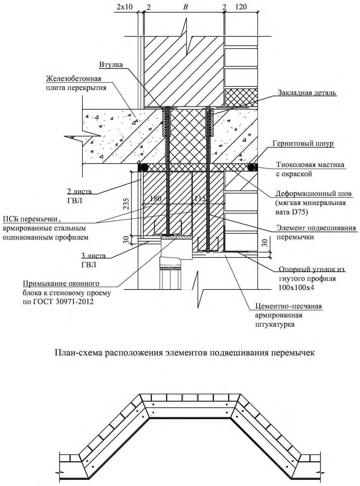
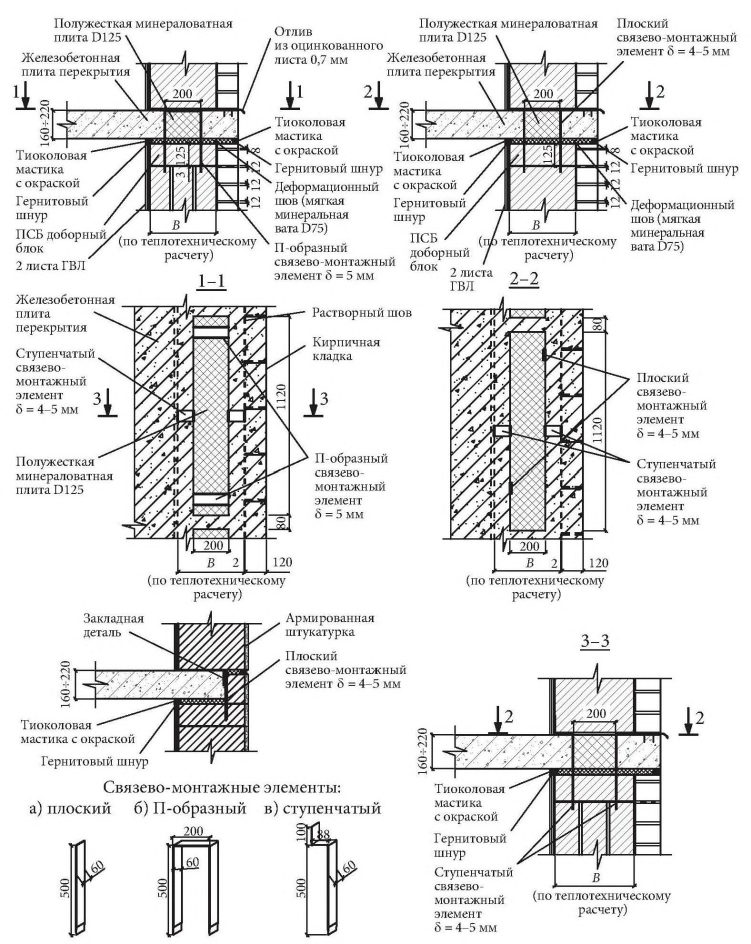
Рисунок 6.20 - Крепление кладки из ПСБ блоков к железобетонным перекрытиям
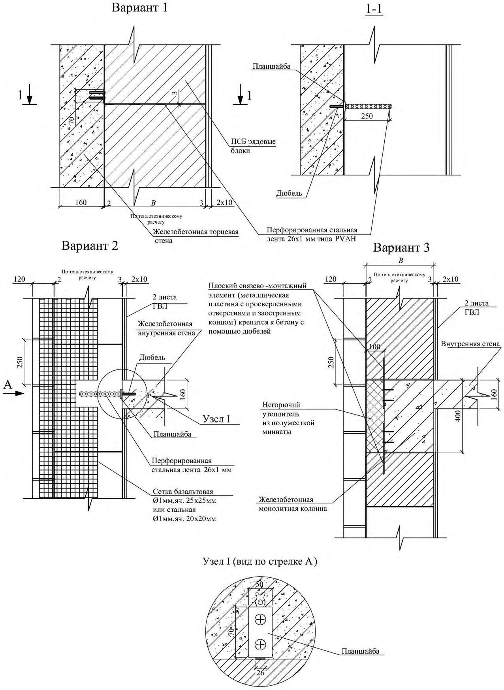
Расчет крепежных элементов производят на опорные реакции стены от ветрового воздействия. Размещают их в шахматном порядке с шагом 0,3-0,5 м.
Такое соединение не требует выполнения сварных работ.
Крепление ненесущих полистиролбетонных стен к внутренним несущим железобетонным стенам (колоннам, пилонам) производят с применением перфорированных стальных лент сечением 26×1 мм, состоящих из двух согнутых под углом 90 о частей, при этом одну часть ленты размещают в горизонтальном шве кладки, а другую крепят с помощью просверленного в железобетоне отверстия стальными планшайбами, дюбелями и шурупами (рисунок 6.21).
Допускается вариант крепления стены к железобетонным несущим конструкциям при помощи плоских стальных связево-монтажных элементов толщиной 4-5 мм с заостренным концом и отверстиями на другом конце, которые совмещают с плоскостью железобетонной конструкции, забивают в полистиролбетонные изделия на глубину 200-250 мм и закрепляют дюбелями и шурупами в просверленном в железобетоне отверстии, ось которого совмещена с осью отверстия в связево-монтажном элементе.
Запрещается использование пристреливаемых дюбелей для креплений полистиролбетонных элементов к железобетонным конструкциям.
Связево-монтажные элементы, забиваемые в полистиролбетон наружных стен, должны находиться не ближе 100 мм от поверхности блока из полистиролбетона.
Крепление полистиролбетонных стен к опорным участкам железобетонных плит перекрытий рекомендуется осуществлять армированной клеевой композицией толщиной до 8 мм, применяемой для кладки стен. При этом опорный участок железобетонных плит должен иметь ровную гладкую поверхность с «минусовыми» допусками (-5 мм).
Крепление стен из полистиролбетонных блоков в процессе строительства здания рекомендуется осуществлять с помощью временных приспособлений, например, деревянных или стальных раскосов, соединяющих верх возводимой кладки с железобетонными перекрытиями.
6.6.5 Крепление навесного оборудования
Крепление навесного оборудования и устройств (кондиционеры, растяжки, тарельчатые антенны) к внешней стороне наружных стен рекомендуется осуществлять к торцам железобетонных перекрытий.
При необходимости крепления навесного оборудования к кирпичному фасаду здания в зоне над перекрытием часть стены рекомендуется выполнить из кладки полнотелым кирпичом толщиной 88 мм и вставки из полистиролбетона плотностью D150-D225. Кладку усиливают горизонтальными и вертикальными арматурными стержнями, которые приваривают к закладным деталям плиты перекрытия или заделывают в ней (рисунок 6.22).
Рисунок 6.21 - Крепление кладки из ПСБ блоков к несущим железобетонным стенам и колоннам
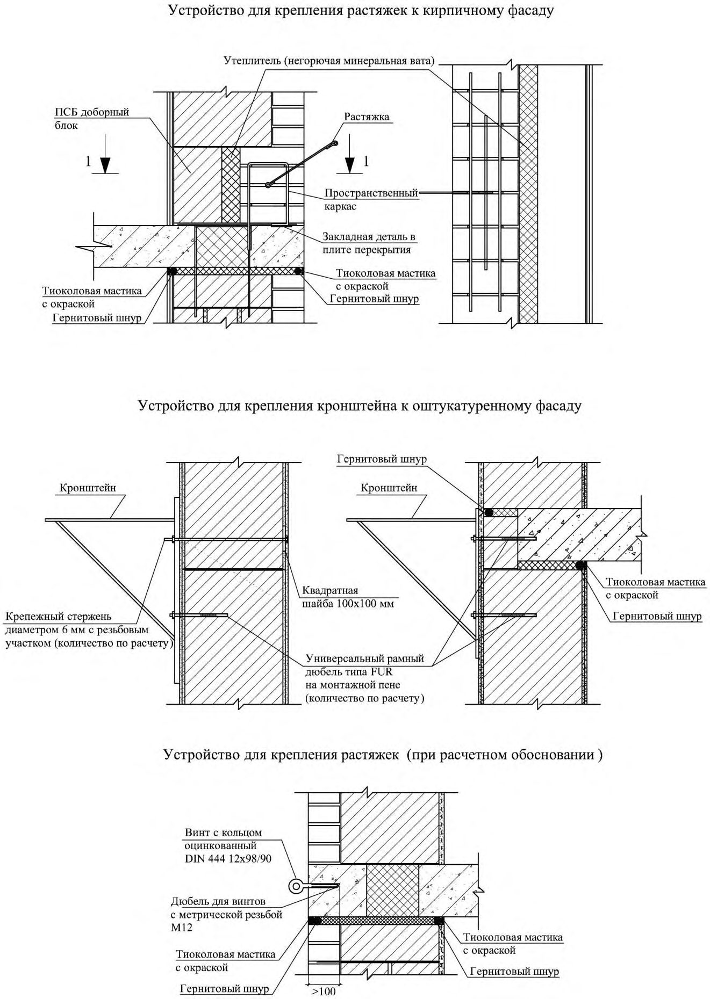
Рисунок 6.22 - Крепление навесных устройств к фасадам стен
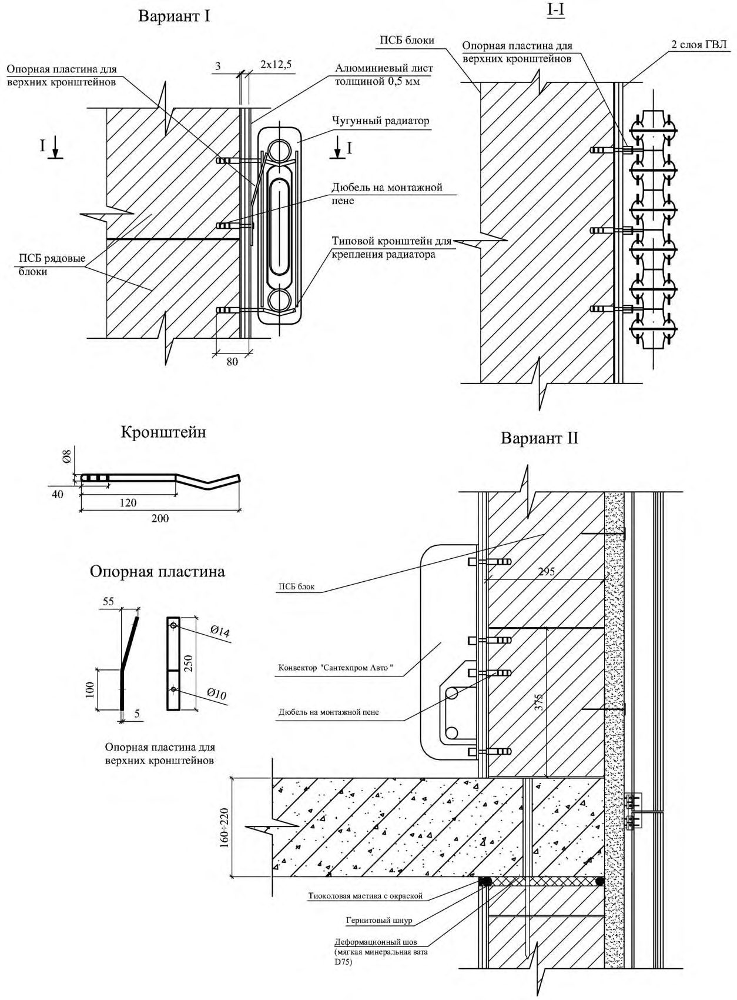
Крепление навесного оборудования, например приборов отопления и других устройств, к внутренней стороне полистиролбетонных стен рекомендуется выполнять с использованием дюбелей диаметром не менее 8 мм и длиной 120-160 мм, укрепляемых монтажной пеной (рисунок 6.23). Расчетные нагрузки на крепежные элементы и значения коэффициентов надежности приведены в таблицах 6.3 и 6.4.
Рисунок 6.23 - Крепление отопительного оборудования
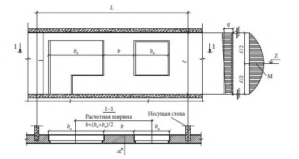
Таблица 6.3 Расчетные нагрузки на крепежные элементы
| Глубина заделки в | Расчетные нагрузки, кгс | Расчетные нагрузки, кгс | Расчетные нагрузки, кгс | Расчетные нагрузки, кгс | Расчетные нагрузки, кгс | Расчетные нагрузки, кгс | Расчетные нагрузки, кгс | Расчетные нагрузки, кгс | |
|---|---|---|---|---|---|---|---|---|---|
| Диаметр | Осевое выдергивание шурупа | Осевое выдергивание шурупа | Осевое выдергивание шурупа | Осевое выдергивание шурупа | Изгиб при приложении усилия на шуруп в 10 мм от стены | Изгиб при приложении усилия на шуруп в 10 мм от стены | Изгиб при приложении усилия на шуруп в 10 мм от стены | Изгиб при приложении усилия на шуруп в 10 мм от стены | |
| × длину дюбеля, | Фасадная сторона стены | Фасадная сторона стены | Внутренняя сторона стены | Внутренняя сторона стены | Фасадная сторона стены | Фасадная сторона стены | Внутренняя сторона стены | Внутренняя сторона стены | |
| мм | стену, мм | Заделка насухо | Заделка на монтаж- ной пене | Заделка насухо | Заделка на монтаж- ной пене | Заделка насухо | Заделка на монтаж- | Заделка насухо | Заделка на монтаж- |
| ной пене | |||||||||
| ной пене | |||||||||
| 10×80 | 80 | 18 | 40 | 40 | 100 | 35 | 46 | 105 | 155 |
| 8×120 | 120 | 4 | 24 | 10 | 55 | 18 | 35 | 38 | 90 |
| 8×80 | 80 | 14 | 32 | 25 | 80 | 28 | 40 | 75 | 130 |
| 10×160 | 160 | 5 | 30 | 17 | 70 | 21 | 45 | 50 | 110 |
Примечание - Значения расчетных нагрузок относятся к стеновым полистиролбетонным блокам с маркой по средней плотности D250, оштукатуренным цементно-песчаным раствором М100 толщиной 20-25 мм по стальной сетке из проволоки диаметром 1 мм с ячейкой размером 10х10 мм. При марках полистиролбетона D300 и D350 значения допускаемых нагрузок увеличиваются соответственно в 1,1 и 1,25 раза.
Таблица 6.4 Коэффициенты надежности заделки
| Коэффициенты надежности заделки | Коэффициенты надежности заделки | Коэффициенты надежности заделки | Коэффициенты надежности заделки | Коэффициенты надежности заделки | Коэффициенты надежности заделки | Коэффициенты надежности заделки | Коэффициенты надежности заделки | |
|---|---|---|---|---|---|---|---|---|
| Осевое выдергивание шурупа | Осевое выдергивание шурупа | Осевое выдергивание шурупа | Осевое выдергивание шурупа | Изгиб при приложении усилия на шуруп в 10 мм от стены | Изгиб при приложении усилия на шуруп в 10 мм от стены | Изгиб при приложении усилия на шуруп в 10 мм от стены | Изгиб при приложении усилия на шуруп в 10 мм от стены | |
| Диаметр × длину | Фасадная сторона стены | Фасадная сторона стены | Внутренняя сторона стены | Внутренняя сторона стены | Фасадная сторона стены | Фасадная сторона стены | Внутренняя сторона стены | Внутренняя сторона стены |
| дюбеля, мм | Заделка насухо | Заделка на монтаж- ной пене | Заделка насухо | Заделка на монтаж- ной пене | Заделка насухо | Заделка на монтаж- ной пене | Заделка насухо | Заделка на монтаж- ной пене |
| 10×80 | 7 | 5 | 3 | 2 | 6 | 5 | 2 | 1,5 |
| 8×120 | 10 | 7 | 4 | 3 | 7 | 5 | 3 | 2 |
| 8×80 | 7 | 5 | 3 | 2 | 6 | 5 | 2 | 1,5 |
| 10×160 | 10 | 7 | 4 | 3 | 7 | 5 | 3 | 2 |
Для снижения потерь тепла при отоплении здания рекомендуется на внутренней стороне наружной стены, облицованной ГВЛ или штукатуркой, перед приборами отопления устанавливать теплоотражающие экраны из алюминиевого листа толщиной 0,5 мм, закрепляемого к облицовке стальными шурупами.
7Проектирование и расчеты ограждающих конструкций
7.1Общие требования
Наружные стены из полистиролбетона должны удовлетворять требованиям по несущей способности и деформативности, теплотехническим требованиям по приведенному сопротивлению теплопередаче, требованиям звукоизоляции, пожарной и экологической безопасности, а также долговечности.
Требования к противопожарной защите ограждающих конструкций из полистиролбетона приведены в 7.5, по экологической безопасности системы в 7.6.
7.2. Прочность и деформативность
7.2.1 Основные расчетные положения
Расчет ограждающих конструкций зданий (наружных стен), в состав которых входит кладка из полистиролбетонных блоков (в качестве основного слоя), производят по предельным состояниям первой группы (по прочности) и второй группы (по деформациям) в соответствии с СП 15.13330.
Расчет конструкций стенового ограждения выполняют на воздействие горизонтальной ветровой нагрузки и собственного веса стены, определяемых в соответствии с СП 20.13330.
Ограждающие конструкции энергоэффективных зданий выполняют многослойными: в виде кладки из полистиролбетонных блоков, усиленных армированными штукатурными слоями с фасадной и внутренней сторон либо с наружной облицовкой керамическим кирпичом и внутренним армированным штукатурным слоем толщиной 20-25 мм, либо гипсоволокнистыми листами (ГВЛ) толщиной 2×10 или 2×12,5 мм с взаимным перекрытием швов. Облицовка ГВЛ и применение стеновых блоков из полистиролбетона повышенной заводской готовности (с оштукатуренными поверхностями) упрощает производство работ. Расчет стен с учетом влияния штукатурных слоев ведут по приведенному сечению [6].
Ненесущие стены из полистиролбетонных блоков, усиленные армированными штукатурными слоями и горизонтальными сетками в швах кладки, рассчитывают по прочности нормальных сечений и по раскрытию нормальных трещин в растянутом армированном штукатурном слое либо швах кладки.
При этом сопротивление армированных штукатурных слоев учитывают при выполнении следующих условий:
- а) прочность цементно-песчаного или клеевого раствора на сжатие R шт выше соответствующей прочности полистиролбетона Rb ( R шт Rb );
- б) прочность на сдвиг контактного шва сопряжения полистиролбетонного блока и штукатурного слоя рассчитывают по формуле
где Q - поперечная сила в нормальном сечении стены; b - ширина сечения полистиролбетонной части стены;
- I - момент инерции прямоугольного сечения полистиролбетонной части стены;
S - статический момент площади приведенного поперечного сечения стены относительно наиболее растянутого волокна штукатурки;
Rbtfk - расчетное сопротивление кладки из полистиролбетонных блоков растяжению при изгибе, принимаемое по таблице 5.4 с учетом коэффициентов условий работы кладки К .
При применении в качестве наружного облицовочного слоя керамического кирпича (толщиной в половину кирпича) несущую способность наружной облицовки, как правило, не учитывают.
При применении вместо внутреннего армированного штукатурного слоя листов ГВЛ возможны два случая расчета многослойной стены: а) наружный облицовочный слой принят в виде армированной штукатурки, при этом несущая способность ГВЛ не учитывается; б) наружный облицовочный слой принят толщиной в половину керамического кирпича, в этом случае учитывают работу только одного внутреннего листа ГВЛ (прилегающего к блокам из ПСБ).
В случаях, когда несущая способность стены с внутренними слоями ГВЛ недостаточна для восприятия ветровых нагрузок, следует либо изменить сечение основного слоя стены, либо использовать вместо ГВЛ внутренний армированный штукатурный слой по расчету.
Отделочные слои полистиролбетонных стен могут быть соединены между собой заанкеренными штукатурными сетками или проволочными диаметром 3 мм стальными связями.
Различные жесткость и упругие свойства слоев многослойной стены, а также неполное использование прочности при их совместной работе в стене следует учитывать путем приведения площади сечения наружного и внутреннего слоев к материалу основного слоя. Действие всех нагрузок определяют относительно центра тяжести приведенного сечения.
Связи следует выполнять с закреплениями в основном и облицовочных слоях путем отгибов и фиксаций вязальной проволокой.
7.2.2 Расчет ненесущих стен по прочности и деформативности при ветровых нагрузках
А. Расчет по прочности
Ненесущие стены из сплошных блоков выполняют высотой на один этаж и прикрепляют к верхнему и нижнему перекрытиям, а также к поперечным несущим стенам с помощью стальных связево-монтажных элементов. Эти стены воспринимают преимущественно горизонтальную ветровую нагрузку. Оконные и дверные проемы перекрывают армированными полистиролбетонными перемычками, которые воспринимают кроме собственного веса также вес доборных стеновых элементов между перемычкой и перекрытием, а также вес штукатурных слоев и навесного оборудования.
Простенки, располагаемые вне несущих поперечных стен, рассчитывают как свободно опертые балки на действие равномерно распределенной нагрузки от ветра, определяемой согласно СП 20.13330.
При этом следует учитывать следующие воздействия ветра:
- а) основной тип ветровой нагрузки; б) пиковые значения ветровой нагрузки, действующие на конструктивные элементы ограждения и элементы их крепления.
Влияние резонансного вихревого возбуждения и аэродинамических неустойчивых колебаний зданий не рассматривают, т.к. стеновые ограждения из полистиролбетонных блоков для зданий, у которых высота больше чем в 10 раз превосходит поперечный размер, нецелесообразны и не применяются.
Нормативное значение ветровой нагрузки w (в качестве основного типа ветрового воздействия) следует определять как сумму средней wm и пульсационной wр составляющих в соответствии с 11.1.1-11.1.4, формулами (11.1), (11.2) и таблицами 11.2 и Д.2 СП 20.13330.2016.
Эквивалентную высоту ze , для которой определяют повышающий коэффициент ветрового давления k ( ze ), вычисляют для зданий в зависимости от отношения высоты h к поперечному размеру d согласно 11.1.5 СП 20.13330.2016.
При определении нормального давления wе , приложенного к внешней поверхности здания, и ветровой нагрузки на поверхность внутренних стен при отсутствии наружного ограждения (на стадии монтажа) следует использовать аэродинамические коэффициенты внешнего давления се, определенные согласно В.1 приложения В СП 20.13330.2016. Для прямоугольных в плане жилых и общественных зданий с вертикальными стенами следует использовать данные таблицы В.2 СП 20.13330.2016.
Значения аэродинамических коэффициентов при активном давлении ветра составляют: с = 0,8 для наветренной стены и с = -0,5 для подветренной. Для боковых стен учитывают отрицательное значение ветра с различными значениями аэродинамического коэффициента с от -0,5 до -1,0, в зависимости от расположения участка стены по отношению к фронтальной плоскости активного давления.
Нормативное значение пульсационной составляющей ветровой нагрузки wp на эквивалентной высоте ze следует определять в зависимости от соотношения частот собственных колебаний здания f i , Гц, и предельного значения собственной частоты f согласно 11.1.8-11.1.11 СП 20.13330.2016.
При расчете многоэтажных зданий высотой до 40 м пульсационную составляющую ветровой нагрузки допускается определять без учета динамического коэффициента по формуле (11.5) СП 20.13330.2016.
За расчетный пролет простенка принимают расстояние в свету между перекрытиями (рисунок 7.1). Ветровая нагрузка собирается с грузовой площади шириной, равной расстоянию между серединами смежных проемов. Погонную расчетную нагрузку q , действующую на простенок, вычисляют по формуле где b - ширина простенка; b л и b п - ширина левого и правого проемов; w - ветровая нагрузка, определяемая по формуле (11.1) СП 20.13330.2016;
f - коэффициент надежности по нагрузке, принимаемый равным 1,4;
п - коэффициент надежности по назначению, принимаемый равным 1,0.
Расчетный момент простенка М вычисляют, как для однопролетной балки по формуле
Рисунок 7.1 - К расчету простенка на ветровую нагрузку
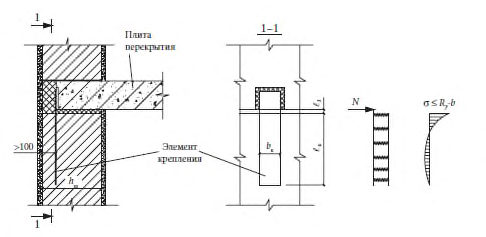
Простенок с двумя штукатурными армированными слоями (внутренним и внешним) рассчитывают на действие изгибающего момента М при аэродинамическом коэффициенте с = 0,8 (положительное давление ветра). При этом учитывают сжатый внешний штукатурный слой и арматуру в растянутом (внутреннем) штукатурном слое.
Расчет проводят из условия
где h п и h ш - толщина соответственно полистиролбетонной кладки и штукатурного слоя;
Rs - расчетное растяжение арматуры в штукатурном слое;
As - расчетная площадь поперечного сечения растянутой арматуры в штукатурке.
Для армирования штукатурного слоя используют стальные сетки, рекомендуемые СП 96.13330 для армоцементных конструкций, с расчетным сопротивлением Rs = 250 МПа. Штукатурный слой выполняют из цементно-
песчаного или цементно-известково-песчаного раствора марки не ниже 50. Кроме того, класс по прочности полистиролбетона должен быть не ниже В0,35. Простенок с кирпичной облицовкой и внутренним штукатурным армированным слоем рассчитывают на действие изгибающего момента М как при с = 0,8 (положительное давление ветра), так и при с = -0,5 (отрицательное давление ветра) 1 .
Сначала расчет выполняют без учета кирпичной облицовки. При положительном давлении ветра расчет проводят из условия
где h 0 - рабочая высота сечения; h 0 = h п + h ш / 2; x - высота сжатой зоны, вычисляемая по формуле x = Rs As / ( R ̅ bk b );
R ̅ bk - приведенное расчетное сопротивление сжатию полистиролбетонной блочной кладки, учитывающее влияния клеевых швов и условий работы,
где Rbk - расчетное сопротивление кладки из полистиролбетонных блоков, принимаемое по данным таблицы 5.4;
0 - коэффициент условий работы, равный 0,9.
При отрицательном давлении ветра расчет проводят из условия
где R ̅ btfk = 0 Rbtfk - приведенное расчетное сопротивление кладки из полистиролбетонных блоков растяжению при изгибе, учитывающее влияние клеевых швов ( R ̅ btfk принимается по таблице 5.4) и условия работы ( 0 = 0,9);
Wred - момент сопротивления приведенного сечения, включающего в себя площадь полистиролбетона, а также площадь сжатого штукатурного слоя, умноженную на отношение модулей упругости штукатурки и полистиролбетона Е ш / E ̅ b .
Модуль упругости штукатурки Е ш принимают по таблице 6.11 СП 63.13330.2012 как для мелкозернистого бетона группы А (естественного твердения) в зависимости от класса бетона В = 0,07 М , где М - марка штукатурного раствора, или по таблице 7.1.
Таблица 7.1 Характеристики раствора штукатурного слоя
| Марка | R b ш, МПа (кгс/см² ) | Е ш . 10 -3 , МПа (кгс/см² ) |
|---|---|---|
| 50 | 1,93 (19,3) | 7,14 (71,4) |
| 75 | 2,70 (27,0) | 10,71 (107,1) |
| 100 | 3,86 (38,6) | 12,80 (128,8) |
Приведенный модуль упругости полистиролбетона равен E ̅ b = 0,8 Еb (значения Еb принимаются по таблице 5 ГОСТ 33929-2016).
1 Знак «плюс» у аэродинамического коэффициента с соответствует направлению давления ветра на соответствующую поверхность, знак «минус» - от поверхности.
Модуль упругости кладки из полистиролбетонных блоков Еbk принимают по таблице 5.4.
Значение момента сопротивления приведенного сечения Wred определяют по формуле
где I red - момент инерции приведенного сечения; yred - расстояние от центра тяжести приведенного сечения до растянутой грани полистиролбетонного блока у кирпичной облицовки.
В случае, если условия (7.5) или (7.7) не удовлетворяются, изгибающий момент М уменьшают, распределив его между кирпичной облицовкой и основной частью стены пропорционально их жесткостям. Для этого сначала рассчитывают жесткость облицовки
где - упругая характеристика кладки, принимаемая по таблице 16 СП 15.13330.2012;
R - расчетное сопротивление сжатию кладки, принимаемое по таблице 2 СП 15.13330.2012; h обл - толщина кирпичной облицовки.
Жесткость основной части стены В ст рассчитывают по формуле
При этом следует проверить прочность кирпичной облицовки из условия
где Rtb - расчетное сопротивление кирпичной кладки растяжению при изгибе по неперевязанному сечению, принимаемое по таблице 11 СП 15.13330.2012. Коэффициент 0,85 при Rtb вводят для исключения недопустимых растягивающих напряжений в неперевязанных швах кирпичной кладки;
G - вес облицовки, расположенной выше расчетного сечения.
Момент сопротивления W обл расчитывают по формуле
При выполнении условия (7.11) кирпичную облицовку объединяют гибкими связями с полистиролбетонной частью стены. При этом сплошного приклеивания облицовки к основной части стены не требуется. Однако необходимо предусматривать противопожарные рассечки в образовавшейся воздушной невентилируемой прослойке толщиной до 5 мм.
При невыполнении условий (7.5), (7.7) или (7.11) расчет стены производят как элемента комплексного сечения, включающего кирпичную облицовку, цементно-песчаный или клеевой шов, полистиролбетонную часть стены и армированный слой штукатурки. При этом принимают гипотезу плоских сечений и напряжения в различных точках сечения определяют по схеме приведенного сечения. Растягивающие напряжения в неперевязанных (горизонтальных) швах кирпичной облицовки не должны превышать 0,85 Rtb .
Б. Расчет по деформациям
Расчет конструкций наружного стенового ограждения по предельным состояниям второй группы (по образованию трещин в растянутой зоне стены и деформациям растянутых поверхностей) следует производить, пользуясь основными положениями СП 15.13330.
Расчет по раскрытию трещин (швов кладки) выполняют по условному краевому напряжению растяжения, которое характеризует величину раскрытия трещин в растянутой зоне.
Для внецентренно сжатых неармированных стеновых конструкций кладки расчет следует производить по формуле (33) СП 15.13330.2012.
Кирпичная кладка, в которой по условиям эксплуатации не может быть допущено появление трещин в кладочном растворном слое, должна быть проверена по деформациям растянутых поверхностей.
Расчет по деформациям растянутых поверхностей для неармированной кладки производят: при внецентренном сжатии по формуле (36) и при изгибе по формуле (35) СП 15.13330.2012.
7.2.3 Расчет креплений полистиролбетонных стен к несущим конструкциям здания и оконных (дверных) блоков к полистиролбетонным стенам
Для элементов ограждения и узлов их крепления необходимо учитывать пиковые положительные w + и отрицательные w -воздействия ветровой нагрузки, нормативные значения которых определяют по формуле
где w 0 - расчетное значение ветрового давления; ze - эквивалентная высота;
Ср .+(-) -пиковое значение аэродинамических коэффициентов положительного давления (+) или отсоса (-); k ( ze ) и ( ze ) - коэффициенты, учитывающие соответственно изменение давления и пульсации давления на высоте ze ;
+(-) - коэффициенты корреляции ветровой нагрузки, приведенные в таблице 11.8 СП 20.13330.2016, в зависимости от площади ограждения, с которой собирается ветровая нагрузка.
Аэродинамические коэффициенты Ср .+ и Ср .- для прямоугольных зданий в плане можно принимать по схеме В.1.17 приложения В.1 СП 20.13330.2016. При расчете стен пиковое положительное значение аэродинамического коэффициента Ср .+= 1,2, а значения отрицательного коэффициента Ср .- зависят от рассматриваемого участка стены. Так, в углах здания (на расстоянии 1/10 b ) эти значения равны Ср .-= -2,2, а в остальной части Ср .-= -1,2.
Элемент крепления - штырь прямоугольного или круглого сечения, забиваемый в полистиролбетон на расстоянии не менее 100 мм от боковой (перпендикулярной ветровому напору) поверхности полистиролбетонной части стены, рассчитывают как балку на упругом основании, загруженную силой N и моментом М = N 3 ( 3 - толщина зазора между покрытием и верхом кладки), как показано на рисунке 7.2.
Рисунок 7.2 - К расчету полистиролбетонных стен
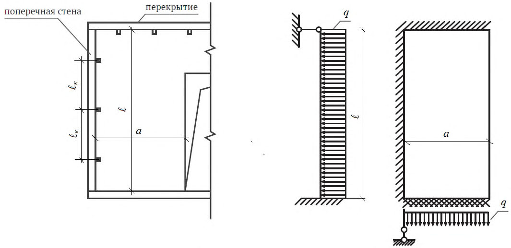
При этом проверяют прочность полистиролбетона на смятие из условия
и прочность самого элемента крепления на изгиб из условия
- предельная сила, приходящаяся на элемент крепления (рисунок 7.3); где N
Rb - расчетное сопротивление сжатию полистиролбетона, принимаемое по таблице 4 ГОСТ 33929-2016; b к и к - ширина и глубина заделки в полистиролбетон элемента крепления;
v и m - коэффициенты, принимаемые по графику (рисунок 7.4), в зависимости от приведенной длины балки к / ;
- упругая характеристика элемента крепления, см, как балки на упругом основании, равная
где k - отпорность полистиролбетонного основания штыря, принимаемая равной Eьb /300;
Ry -расчетное сопротивление стального штыря изгибу по пределу текучести, принимаемое по СП 16.13330;
W - момент сопротивления сечения штыря;
- коэффициент, учитывающий защемленность незабитого конца штыря. При свободном конце = 1; при защемленном конце, приваренном к закладной детали или забетонированном в «окне» перекрытия, = 0,5;
EI - жесткость элемента крепления; для элемента крепления в виде пластин толщиной t : EI = 2,1 . 10 6 bt 3 /12; для элемента крепления круглого сечения диаметром d : ЕI =2,1 10 6 d 4 /64.
Рисунок 7.3 - К расчету силы N
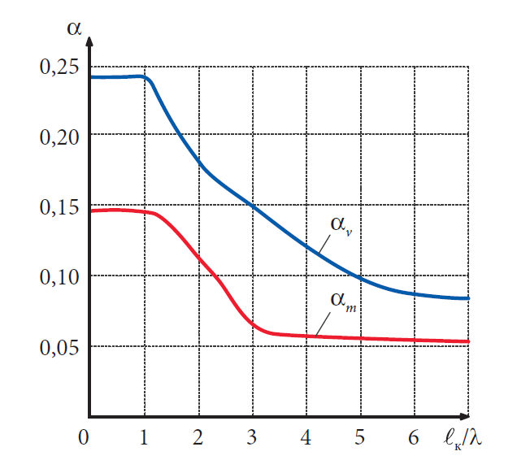
Рисунок 7.4 - График зависимости v и m от приведенной длины балки
Проверку прочности элементов крепления производят по формулам (7.14) и (7.15) как в случае креплений полистиролбетонных стен к несущим элементам здания, так и в случае крепления оконных (дверных) блоков к полистиролбетонным стенам.
При креплении стены к верхнему перекрытию силу N принимают равной
где q - погонная нагрузка и L - пролет стены. При этом ветровое давление рассчитывают как пиковую ветровую нагрузку согласно 11.2 СП 20.13330.2016, в зависимости от места расположения крепления. К нижнему перекрытию стеновые элементы крепят с помощью клеевой композиции; n - число элементов крепления на расчетном участке: по горизонтали шириной b и по вертикали - высотой ℓ .
При креплении наружной стены к несущей внутренней поперечной стене и к верхнему и нижнему перекрытиям силу N определяют по опорной реакции стены как пластины, опертой по трем сторонам (рисунок 7.3) и загруженной равномерно распределенной нагрузкой q p = w γ f γп, МПа (кгс/м² ). Тогда наибольшая сила N кр, действующая на крепление, расположенное посередине высоты этажа, равна
где k 1 - коэффициент, устанавливаемый в зависимости от соотношения α/ (принимается по таблице 7.2); ℓ кр - расстояние между креплениями.
Таблица 7.2
| / | 0,50 | 0,67 | 0,71 | 0,77 | 0,83 | 0,90 | 1,00 | 1,20 | 1,30 | 1,50 |
|---|---|---|---|---|---|---|---|---|---|---|
| k 1 | 0,401 | 0,450 | 0,460 | 0,467 | 0,474 | 0,478 | 0,487 | 0,494 | 0,497 | 0,501 |
Такой расчет дает завышенную величину силы N . Поэтому ее можно снизить, рассчитав стену как пластину с отверстиями с помощью компьютерных программ.
Расстояние между креплениями ℓ к находят из условия
где N кр - предельное усилие, воспринимаемое креплением и определяемое по формулам (7.14) и (7.15) из условия прочности полистиролбетона на смятие и прочности элемента крепления на изгиб.
Элементы крепления, как правило, следует принимать в виде пластины толщиной 4-5 мм и длиной 150-250 мм. Рекомендуемая ширина пластины 50-70 мм.
7.2.4 Расчет стен из полистиролбетонных блоков на стадии возведения
Помимо расчета стенового ограждения на стадии эксплуатации, прочность стены также должна быть проверена на стадии возведения, без учета штукатурных слоев, на действие ветровой нагрузки w , уменьшенной на
20 %. Следует рассмотреть вариант положительного (напор) давления ветра ( с = +0,8) и отрицательного (отсос) давления ветра ( с = -0,5).
При расчете простенка, расположенного вне несущих поперечных стен, рассматривают два случая (рисунок 7.5).
Рисунок 7.5 - К расчету простенка, расположенного вне несущих поперечных стен, на стадии возведения
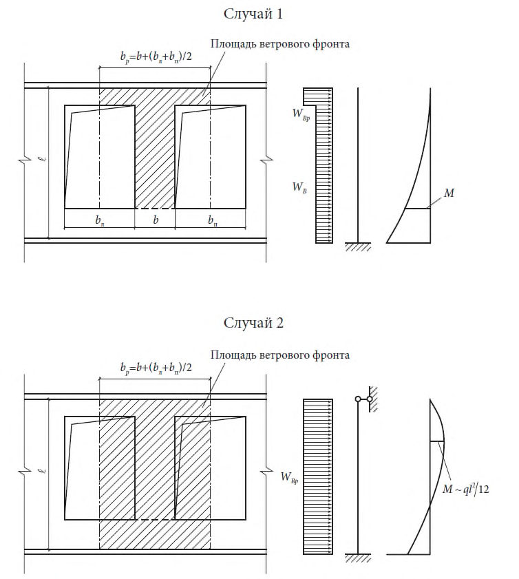
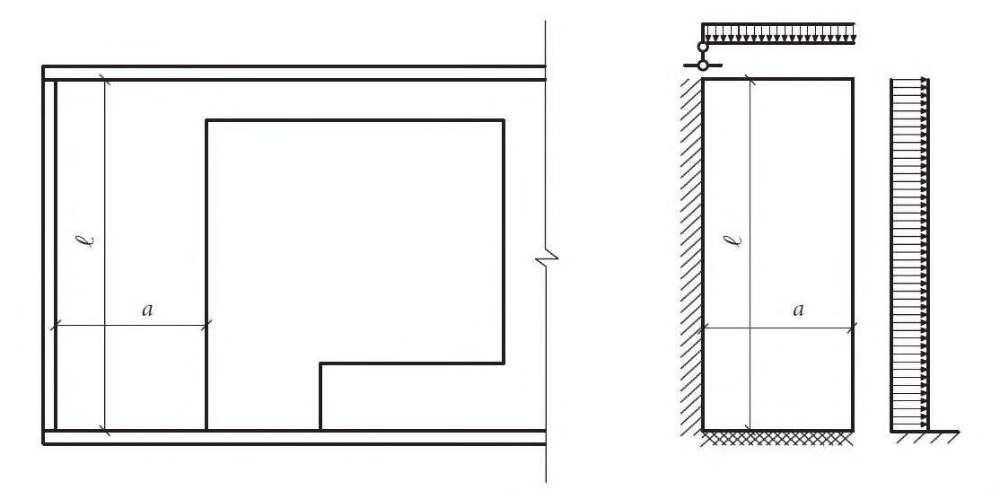
Случай 1. Кладка из полистиролбетонных блоков возведена до перекрытия, но не закреплена за него. Остекленные оконные (дверные) блоки еще не установлены.
Простенок рассчитывают как консоль с расчетным сечением по низу смежных проемов на действие ветровой нагрузки, собранной с площади стены шириной р
+ b b
+
= без учета проемов и длиной от низа смежных проемов до низа перекрытия (рисунок 7.5). При этом аэродинамический коэффициент с принимают равным 0,8 для бескаркасных зданий (ветровая нагрузка с фасадной стороны) и 1,4 для каркасных зданий (ветровая нагрузка с двух сторон: 0,8 + 0,6).
Случай 2. Кладка из полистиролбетонных блоков возведена до перекрытия и закреплена за него.
Оконные (дверные) блоки установлены, штукатурка еще не выполнена. Кладку кирпичной облицовки выполняют одновременно с кладкой полистиролбетонных блоков.
Простенок рассчитывают как балку с расчетным сечением посередине высоты этажа пролетом на действие момента 2 12 М q / = , где q - ветровая нагрузка, собранная с площади шириной b p, включающей проемы; при этом принимают с = 0,8 для любого типа здания. Для случаев 1 и 2 расчет ведут из условия
b л b п где btfk R - см. формулу (7.7);
G - вес стены шириной b p, расположенной выше расчетного сечения, с учетом коэффициента f = 0,9.
При наличии кирпичной облицовки момент М может быть уменьшен путем его распределения между облицовкой и основной частью стены пропорционально их жесткостям. В этом случае следует проверить также прочность облицовки из условия (7.11).
При расчете части простенка, расположенного между поперечной несущей стеной и балконной дверью, рассматривают случай, когда неоштукатуренная стена доведена до перекрытия, но не закреплена за него. Стену рассчитывают как пластину, жестко заделанную внизу, шарнирно опертую сбоку и неопертую по двум другим сторонам (рисунок 7.6), на действие равномерно распределенной нагрузки qp = w γпγf , МПа (кгс/м² ). Максимальный момент на ширине 1 м у неопертого бокового края простенка определяют по формуле
где k п - коэффициент, учитывающий защемление балки, приведен в таблице 7.3.
Рисунок 7.6 - К расчету части простенка между стеной и балконной дверью
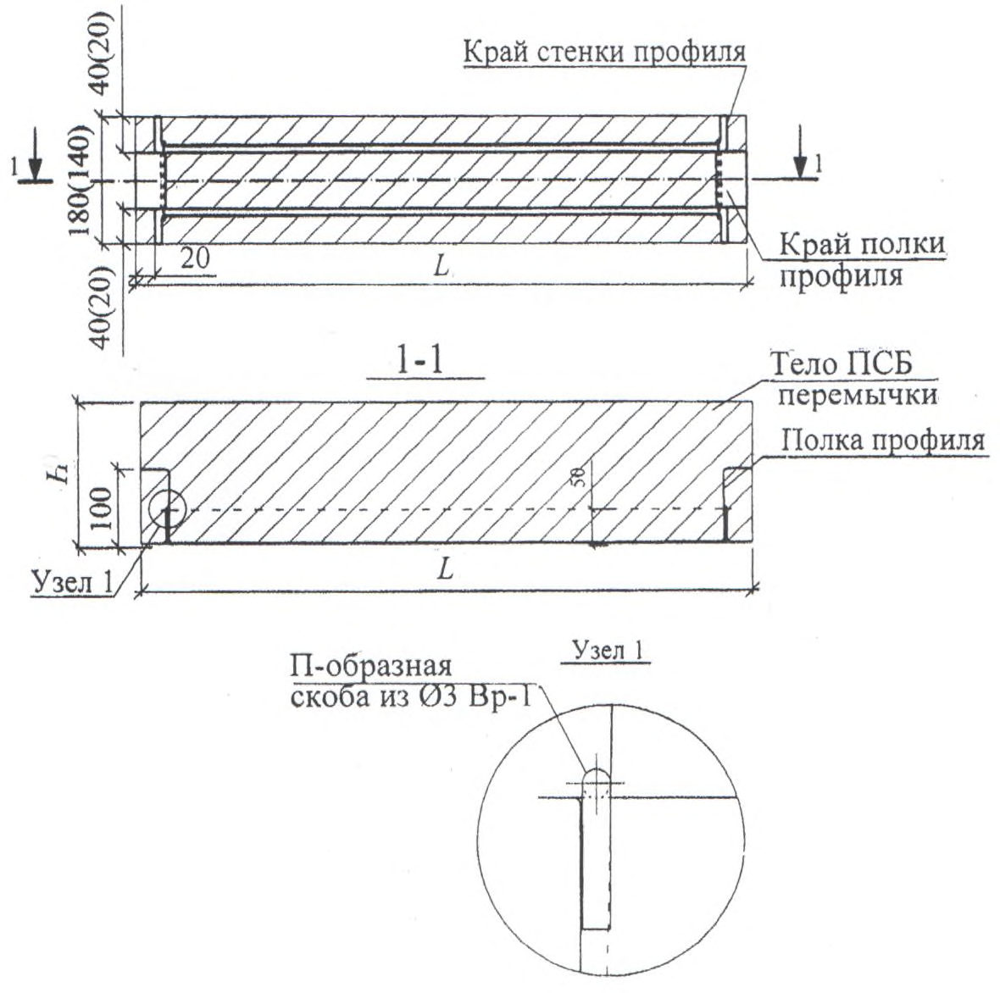
Таблица 7.3
| a / | 0,5 | 0,6 | 0,8 | 1,0 | 1,2 | 1,5 | 2,0 | 3,0 |
|---|---|---|---|---|---|---|---|---|
| k п | 0,065 | 0,140 | 0,215 | 0,284 | 0,337 | 0,388 | 0,445 | 0,485 |
Расчет ведут из условия
где п - плотность полистиролбетонной кладки.
При наличии кирпичной облицовки момент М может быть уменьшен по расчету, аналогичному расчету простенка вне поперечной стены. В случае невыполнения условия (7.20) или условия (7.22) стена до закрепления ее постоянными креплениями должна быть укреплена инвентарными устоями или иными связями, препятствующими ее горизонтальным смещениям.
Крепление с помощью инвентарных устоев или других временных связей стен следует предусмотреть до затвердения штукатурных слоев в случае, если прочность стены на рассматриваемой стадии обеспечивается только при учете армированного штукатурного слоя.
Кроме того, в процессе возведения кладки с клеевой композицией, еще не набравшей прочности, требуется установка временных креплений.
7.2.5 Расчет полистиролбетонных перемычек
7.2.5.1 Общие исходные положения
Расчетную схему нагружения перемычек из полистиролбетона (не учитывающую их заделку в стены) принимают в виде статически определимой однопролетной балки с условно шарнирными опорами.
Армирование полистиролбетонных перемычек выполняют в двух вариантах: в растянутой зоне устанавливается плоский стальной арматурный каркас либо стальной оцинкованный П-образный профиль (рисунки 4.1 и 4.2).
Для первого случая расчет приведен в [8].
Методика прочностных расчетов таких перемычек учитывает особенности деформативно-прочностных свойств полистиролбетона и анкеровку в нем стальной стержневой арматуры [8]. Она сводится в основном к подбору количества, расположения и диаметра поперечных стержней в концевых частях перемычки при заданных характеристиках полистиролбетона.
Для второго случая расчет приведен в [9].
Расчет этих перемычек выполняют по методике СП 63.13330 с учетом особенностей совместной работы полистиролбетона и стального армирующего профиля, положение которого фиксируется по нижней грани перемычки. Сцепление поверхности П-образного профиля с полистиролбетоном обеспечивается, помимо значительной площади поверхности контакта, рифлениями. В отдельных случаях, при больших пролетах перемычек (2,4 3,0 м) и значительных нагрузках (более 100 кгс/м), в торцевых частях проводят дополнительную анкеровку стенок и полки профиля с разрезкой их концов на лепестки и загибом на 90 о .
Анкерные приспособления должны обеспечивать передачу давления от продольной растянутой стержневой арматуры или П-образного стального профиля на полистиролбетон при условии недопущения его смятия.
В связи с отсутствием обычной стержневой арматуры в полистиролбетонных перемычках, армированных оцинкованным профилем, отпадает необходимость защиты армирующего элемента от коррозии и не нужны требования по недопущению или ограничению ширины раскрытия трещин в растянутой зоне.
Оштукатуривание наружной поверхности перемычки в стене обеспечивает дополнительную защиту арматурного элемента от коррозии.
При расчете полистиролбетонных перемычек на воздействие усилий, возникающих при их подъеме, транспортировании и монтаже, нагрузку от собственного веса следует принимать с коэффициентом динамичности, равным: 1,60 - при транспортировании, 1,40 - при подъеме и монтаже.
7.2.5.2 Расчет перемычек, армированных плоскими горизонтальными стальными каркасами в растянутой зоне
Перемычки изготавливают из полистиролбетона марки по средней плотности не менее D250 при классе по прочности на сжатие не менее В0,5.
В качестве рабочей продольной арматуры в растянутой зоне рекомендуется применять стержни из проволоки класса Вр-I диаметром 3-5 мм. Количество стержней продольной арматуры должно быть не менее двух.
Для обеспечения анкеровки продольной растянутой арматуры в полистиролбетоне на ее концах должны быть предусмотрены концевые анкерные приспособления в виде поперечных стержней, пластин или углов, к которым прикрепляются стержни продольной арматуры с помощью контактной сварки или других способов, обеспечивающих надежность соединения.
Для обеспечения совместимой работы полистиролбетона и растянутой арматуры по длине перемычки, кроме указанных концевых анкерных приспособлений, должны быть выполнены промежуточные анкерные приспособления в виде поперечных стержней из арматуры класса А-I диаметром 10-14 мм.
Анкерные приспособления должны обеспечивать передачу давления от продольной растянутой арматуры на полистиролбетон при условии недопущения его смятия.
7.2.5.3 Расчет прочности сечений, нормальных к продольной оси элемента
Расчет прочности сечений, нормальных к продольной оси элемента, проводят из условия
где Rs -расчетное сопротивление арматуры растяжению с учетом коэффициента условий работы s , определяемого по формуле
Аs.anс -суммарная площадь поверхности анкеров, через которую передается давление на полистиролбетон; анкеры расположены на участке перемычки от опоры до рассматриваемого сечения.
В формуле (7.24) расчетное сопротивление арматуры Rs учитывают без коэффициентов условий работы арматуры.
где Rb - расчетное сопротивление полистиролбетона осевому сжатию с учетом коэффициента условий работы в2 = 0,9, т. е. произведение значения сопротивления Rb по таблице 4 ГОСТ 33929-2016 на коэффициент в2 = 0,9.
7.2.5.4 Расчет прочности сечений, наклонных к продольной оси элемента Расчет прочности наклонных сечений проводят на действие поперечной силы из условия
где Rbt - расчетное сопротивление полистиролбетона осевому растяжению с учетом коэффициента работы в2 = 0,9, т. е. произведение значения сопротивления Rbt по таблице 4 ГОСТ 33929-2016 на коэффициент в2 = 0,9.
Расчет прочности наклонных сечений на действие изгибающего момента производят у грани свободной опоры перемычки с учетом работы концевых анкерных приспособлений из условий:
7.2.5.8 Расчет анкеровки
Анкеровку арматуры (в полистиролбетоне) обеспечивают специальными конструктивными мероприятиями - установкой анкерных приспособлений в
где Аs.anc 1 - площадь смятия полистиролбетона в месте контакта с концевыми анкерными приспособлениями; с - длина проекции наклонного сечения, с = 2 h 0 ; d - расстояние от точки приложения опорной реакции до грани опоры.
Расстояние y принимают не более расстояния от точки приложения опорной реакции до первого промежуточного анкерного приспособления в виде поперечных стержней из арматуры класса АI диаметром 10-14 мм.
7.2.5.5 Расчет по образованию нормальных трещин
Расчет по образованию нормальных трещин производят из условия
где М п - момент от действия полной нагрузки с учетом коэффициента надежности по нагрузке γ f = 1;
Rbt.ser - нормативная прочность полистиролбетона на осевое растяжение для предельных состояний второй группы, принимаемая по таблице 3 ГОСТ 33929-2016.
7.2.5.6 Расчет по образованию наклонных трещин
Расчет по образованию наклонных трещин производят из условия
где Q п - поперечная сила от действия полной нагрузки с учетом коэффициента надежности по нагрузке f = 1.
7.2.5.7 Расчет по деформациям
При отсутствии нормальных и наклонных трещин от действия нормативных нагрузок (выполнение условий (7.33) и (7.34)) расчет по деформациям производят из условий:
где b 2 и b 1 - эмпирические коэффициенты, учитывающие деформативные особенности полистиролбетонных перемычек при длительном воздействии нагрузок, установленные экспериментальным путем;
виде поперечных стержней, передающих на полистиролбетон давление от растяжения арматуры на площади, достаточной для недопущения его смятия.
Половину длины перемычки разбивают на n участков. Число участков зависит от длины перемычки ( n = 2-5). Первый участок ( i = 1) имеет длину а 1 у и содержит концевые анкерные устройства (упоры) площадью Аs.anc.i .
На остальных участках i -е анкерное приспособление расположено вблизи середины i -го участка длиной ( ) ( ) 1 2 1 i а a n --. Площадь передачи давления Аs.anc.i определяют из условия
где 1 i i M ,M -- изгибающие моменты в начале и в конце i -го участка;
0 0,5 i Z h = -хi ; хi - высота сжатой зоны бетона в сечении по i -му анкерному приспособлению; хi = Аs.anc.i / b .
7.2.5.9 Расчет перемычек, армированных стальным оцинкованным Побразным профилем
Армирующим элементом перемычек является П-образный профиль из оцинкованной тонколистовой ( t min= 0,45 мм) стали, отвечающей требованиям ГОСТ 14918.
Цинковое антикоррозионное покрытие на всей поверхности профиля имеет толщину 10-15 мкм.
В качестве оцинкованного профиля для армирования перемычек рекомендуется использовать готовые профили марок ПС-4 и ПС-6 длиной до 4,5 м, применяемые для внутренней облицовки на относе стен зданий гипсокартонными или гипсоволокнистыми листами. Перед изготовлением полистиролбетонных перемычек указанные профили режут по поперечному сечению на необходимую длину.
Характеристики П-образных стальных профилей, рекомендуемых для армирования полистиролбетонных перемычек, приведены в таблице 7.4.
На вертикальных стенках профилей имеются рифления размерами 1×3 мм, глубиной порядка 0,1 мм, по 8 шт. на 1 см² , что в совокупности со значительной площадью поверхности контакта с полистиролбетоном обеспечивает достаточно высокое сцепление материалов и надежную анкеровку армирующих профилей.
Перемычки имеют форму прямоугольного параллелепипеда с габаритными размерами L (длина), h (высота) и b (ширина). Конструктивное решение перемычки показано на рисунке 4.2.
Исходя из строительного модуля, кратного 0,3 м, габаритные размеры перемычек по длине ( L ) принимают: 1,2; 1,5; 1,8; 2,1; 2,4; 2,7 и 3,0 (2,9) м.
Таблица 7.4 Характеристики П-образных профилей
| Наименование | Единица | Тип профиля | Тип профиля |
|---|---|---|---|
| характеристики | измерения | ПС-4 | ПС-6 |
| 1 Основные размеры: | мм |
| - высота ребер - ширина полки - толщина листа (расчетная) | 50 75 0,45 | 50 100 0,45 | |
|---|---|---|---|
| 2 Площадь поперечного сечения А s | см² | 0,833 | 0,945 |
| 3 Периметр поперечного сечения u s | мм | 371 | 421 |
| 4 Вес | кг/п.м | 0,654 | 0,742 |
| 5 Расположение центра тяжести относительно полки z 1 | мм | 16,1 | 14,3 |
| 6 Момент инерции относительно нейтральной оси (центра тяжести) I п | см 4 | 2,49 | 2,71 |
| 7 Жесткость I п Е s | кгс м² | 498 | 542 |
| 8 Предел текучести R s.n | МПа | 230 | 230 |
| 9 Модуль упругости Е s 10 -5 | МПа | 2,0 | 2,0 |
На основе опыта проектирования зданий и изготовления перемычек, а также ограничения веса при их ручном монтаже (80 кг) ширину перемычек b рекомендуется принимать равной 115(120), 140 и 180 мм, а высоту h - 180, 235 и 295 мм.
Рекомендуется использовать профили типа ПС-4 для перемычек шириной 115(120) и 140 мм и типа ПС-6 для перемычек шириной 140 и 180 мм.
При значительных нагрузках (более 100 кгс/п.м.) используют профиль с лепестками на его торцах, обеспечивающими дополнительную анкеровку профиля, а также точную фиксацию его положения в перемычке (рисунок 7.7).
Для изготовления такого профиля отрезают заготовку длиной L заг= L +2 ℓ а= L пр+2( ℓ ф1+ ℓ а ), по углам между полкой и ребрами профиля ножницами по металлу или ножовкой делают прорези на длину ℓ ф1+ ℓ а, затем торцы полки загибают по концам прорезей на 90 о , а часть загнутой полки длиной ℓ ф1 загибают еще на 90 о , в результате чего на каждом торце профиля образуются анкерующие вертикальные части лепестков в виде прямоугольных плоскостей высотой ℓ а ( h ℓ а ℓ п) на широкой полке (75 или 100 мм), а также лепестки длиной ℓ ф1, надежно фиксирующие профиль от продольного смещения в перемычке.
Также на 90 о отгибают по концам прорезей лепестки ребер профиля, которые обрезают по вертикали на длину ℓ ф2, что обеспечивает надежную фиксацию профиля от его смещения относительно вертикальной оси перемычки, а также дополнительную анкеровку профиля на торцах перемычки двумя поверхностями лепестков шириной ℓ ф2 и высотой, равной высоте профиля.
Для исключения возможности отгиба под эксплуатационной нагрузкой анкерующих поверхностей профиля, образованных отогнутой частью полки, предусматривают их дополнительную фиксацию П-образными скобами из стальной проволоки Вр-I или ВI диаметром 3 мм.
Рисунок 7.7 - Конструкция перемычки шириной 180 (140) мм с анкеровкой стального профиля по ее торцам
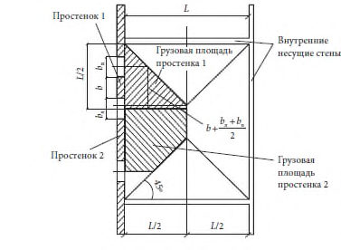
7.2.5.10 Расчет по предельным состояниям первой группы
Расчет по прочности перемычек на действие изгибающего момента следует производить для сечений, нормальных к их продольной оси.
Предельные усилия в сечении, нормальном к продольной оси элемента, следует определять, исходя из следующих предпосылок:
- сопротивление полистиролбетона растяжению принимают равным нулю;
- сопротивление полистиролбетона сжатию представляется напряжениями, равными Rb в крайнем сжатом волокне сечения и линейно убывающими (по треугольному закону) по высоте сжатой зоны материала;
- деформации (напряжения) в стальном профиле определяют в зависимости от расчетной высоты сжатой зоны полистиролбетона;
- растягивающие напряжения в стальном профиле принимают не более расчетного сопротивления растяжению Rs .
Условие прочности нормальных сечений изгибаемого элемента записывают в виде
где р n М - максимальный внешний изгибающий момент от расчетных нагрузок; ult M - предельный изгибающий момент, который может быть воспринят сечением элемента при отсутствии арматуры в сжатой зоне прямоугольного сечения.
Момент сопротивления полистиролбетона перемычки b ult M определяют с учетом влияния трещин по формуле
где Rb - расчетное сопротивление полистиролбетона осевому сжатию для предельных состояний первой группы, принимаемое по ГОСТ 33929-2016; h 0 - расчетная высота сечения от верхней грани перемычки до центра тяжести П-образного стального профиля, равная
z 1 - расположение центра тяжести относительно полки, принимаемое по таблице 7.4; х - высота сжатой зоны сечения перемычки, вычисляемая по формуле
где s - коэффициент армирования, принимаемый
Аs - площадь поперечного сечения профиля, принимаемая по таблице 7.4;
s = s b E E - коэффициент приведения площади сечения материала П-образного профиля к полистиролбетону, где Еs - модуль упругости, Еs =2,0 10 5 МПа;
Еb - начальный модуль упругости полистиролбетона, принимаемый для различных марок по плотности и классов по прочности по ГОСТ 33929-2016.
При армировании перемычки П-образным стальным профилем из условия равенства моментов по формулам (7.42) и (7.43) находят минимальное предельное напряжение в крайнем сжатом волокне полистиролбетона пр .min b , отвечающее заданной нагрузке, по формуле
Затем по значению этого параметра вычисляют ближайший класс полистиролбетона по прочности на сжатие Rbn пр .min b b и соответствующую марку по плотности ( b =1,3 - коэффициент надежности полистиролбетона при сжатии).
Далее по формуле (7.43) после подстановки в нее расчетного сопротивления полистиролбетона сжатию Rb определяют предельный расчетный изгибающий момент, который может быть воспринят сечением. Для принятой эксплуатационной распределенной нагрузки q р должны быть проверены условия
где L 0 - величина расчетного пролета (рекомендуется принимать L 0 = L -120 мм).
Момент сопротивления перемычки по стальному армирующему профилю Ms проверяют по формуле
Расчетное сопротивление осевому растяжению стального профиля принимают по аналогии с требованиями к арматуре в СП 63.13330 при Rs.n = 2300 кгс/см² , коэффициенте надежности s = 1,1 и коэффициенте условий работы стального профиля Кs = 0,6 с использованием формулы Rs = s.n s s R К , где Rs.n - нормативное расчетное сопротивление осевому растяжению.
- 7.2.5.11 Проверка прочности наклонных сечений при действии поперечной силы
Расчет прочности перемычек при действии поперечной силы производят на основе модели наклонных сечений.
Расчет по наклонному сечению выполняют на основе уравнения равновесия внешних сил и внутренних поперечных сил, которые определяют по сопротивлению полистиролбетона растяжению с учетом длины проекции наклонного сечения.
Так как поперечная арматура отсутствует, проверку прочности наклонного сечения перемычки производят из условия восприятия поперечной силы Q р полистиролбетоном по формуле
где Q р = р 0 2 q L - внешняя расчетная поперечная сила в опорном сечении;
Rbt -расчетное сопротивление полистиролбетона на осевое растяжение, принимаемое по данным ГОСТ 33929-2016, с учетом коэффициента надежности по полистиролбетону.
- 7.2.5.12 Расчет прочности наклонных сечений на действие изгибающего момента
Расчет прочности наклонных сечений на действие изгибающего момента производят из условия
где М р - момент в конце наклонного сечения с длиной проекции, равной с = 2 h 0 от всех внешних сил, расположенных в сечении на расстоянии 2 h 0 от точки приложения опорной реакции, определяемый по формуле
Мs - изгибающий момент в этом же сечении, воспринимаемый арматурным П-образным профилем, определяемый из условия равновесия внешних и внутренних усилий в наклонном сечении и недопущения смятия торцевых зон полистиролбетонной перемычки при дополнительной анкеровке П-образного профиля на опорных участках.
Продольное усилие в растянутом П-образном профиле Ns. oп определяют в первом приближении по формуле
где Z's - плечо внутренней пары сил в сечении.
Затем из условия равновесия внутренних сил в сечении
вычисляют высоту сжатой зоны полистиролбетона х и уточняют плечо внутренней пары сил
В расчете принимают среднее значение
Расчетное продольное усилие Ns .расч в растянутой зоне сечения определяют по формуле
Расчет анкеровки производят на усилие Ns .расч по условию смятия полистиролбетона
и прочности П-образной скобы из проволоки диаметром 3 мм Вр-I (рисунок 7.7)
где A oп см - площадь контакта отогнутой части П-образного стального профиля с торцом полистиролбетонной перемычки;
R ск s - расчетное сопротивление арматуры скобы;
A ск s - площадь сечения арматурной скобы;
2 - количество срезов скобы, препятствующих разрыву сечения.
7.2.5.13 Расчет перемычек по предельным состояниям второй группы Расчеты по предельным состояниям второй группы включают:
- проверку трещиностойкости конструкции;
- проверку допускаемого прогиба при эксплуатационной нагрузке.
При расчете по предельным состояниям второй группы нагрузки принимают с коэффициентом надежности f = 1,0.
Расчет трещиностойкости производят для проверки необходимости расчета на трещинообразование, а также для проверки необходимости учета трещин при расчете по деформациям (прогибам).
Условие трещиностойкости конструкции записывают в виде
где М р - изгибающий момент от внешней нормативной нагрузки относительно оси, нормальной к плоскости действия момента и проходящей через центр тяжести приведенного поперечного сечения элемента;
Мcrc - изгибающий момент, воспринимаемый нормальным сечением перемычки при образовании трещин без учета неупругих деформаций растянутого полистиролбетона.
Момент образования трещин без учета неупругих деформаций растянутого полистиролбетона Мcrc определяют как для сплошного упругого тела по формуле
где bt.ser R -нормативное сопротивление полистиролбетона на осевое растяжение;
W - момент сопротивления приведенного сечения для крайней растянутой грани П-образного стального профиля.
Момент сопротивления W приведенного сечения и другие его характеристики определяют по формуле
где yt - расстояние от растянутой грани (полки) стального профиля до центра тяжести поперечного сечения перемычки (учитывая малую толщину полки стального профиля, равную 0,45-0,5 мм, можно пренебречь разницей в половину толщины), определяемое по формуле
где St.red - статический момент площади приведенного поперечного сечения относительно растянутой грани стального профиля, определяемый по формуле
где Ab и Аs.red -площади поперечного сечения полистиролбетона и приведенного поперечного сечения профиля соответственно.
Площадь приведенного поперечного сечения стального профиля Аs.red определяют по формуле
где s - коэффициент приведения деформативности стального профиля к полистиролбетону;
Еb - модуль деформации сжатого полистиролбетона.
Приведенный момент инерции I red перемычки определяют по формуле
(ввиду отсутствия сжатой арматуры).
Так как перемычка имеет прямоугольное сечение, момент инерции полистиролбетона I b относительно центра тяжести определяют по формуле
а для П-образного стального профиля по формуле
где I п - момент инерции относительно нейтральной оси (приведен в [9, таблица 1]).
Изгибающему моменту начала трещинообразования соответствует нормативное значение распределенной нагрузки н crc q , определяемой по формуле
7.2.5.14 Расчет по прогибам
Расчет по прогибам производят из условия
где - прогиб полистиролбетонной перемычки, армированной П-образным стальным профилем, от действия внешней нагрузки;
ult - значение предельно допустимого прогиба перемычки, принимаемое равным 1/200 L 0 (согласно требований СП 20.13330), при отсутствии кратковременных нагрузок.
Для изгибаемых элементов постоянного по длине сечения, не имеющих трещин, прогибы могут быть определены по общим правилам строительной механики с использованием жесткости поперечного сечения перемычки D , определяемой по формуле
где Еb 1 - модуль деформации сжатого полистиролбетона, определяемый в зависимости от продолжительности действия нагрузки и наличия или отсутствия трещин.
Жесткость поперечного сечения перемычки D на участке без трещин в растянутой зоне определяют по формуле (7.71). При этом момент инерции I red приведенного сечения элемента относительно его центра тяжести определяют с учетом всей площади сечения полистиролбетона и площади сечения Побразного стального элемента в растянутой зоне с коэффициентом приведения арматуры к бетону s, , равным s = 1 s b Е E .
Значения модулей деформаций принимают равными:
- при непродолжительном действии нагрузки
- при продолжительном действии нагрузки
где b.cr - коэффициент ползучести полистиролбетона, принимаемый равным 4,0 (по экспериментальным данным).
Жесткость поперечного сечения перемычки D на участках с трещинами определяют по формуле (7.71) с заменой Еb 1 на приведенный модуль деформации Еb.red согласно СП 63.13330 по формуле
где b 1 red = 0,0015 - при непродолжительном действии нагрузки и
b 1 red = 0,0028 -при продолжительном действии нагрузки (при относительной влажности воздуха 40 % -70 %) и замене I red на I' red .
При этом I' red - момент инерции приведенного поперечного сечения элемента, определяемый с учетом площади сечения только сжатой зоны полистиролбетона и площади сечения растянутого П-образного стального элемента с коэффициентом приведения s к полистиролбетону, который вычисляют по формуле
Для изгибаемых элементов постоянного сечения, рассчитываемых по схеме свободно опертой двухшарнирной балки, при действии равномерно распределенной нагрузки максимальный прогиб max в середине пролета составит
max 1 r -кривизна полистиролбетонного элемента от действия соответствующих нагрузок с учетом либо без учета трещин в растянутой зоне, в зависимости от выполнения условия (7.60). где
Вместо кривизны max 1 r при определении прогибов можно использовать характеристики жесткости D путем замены упругих характеристик на приведенные, вычисляемые по формулам
при отсутствии трещин в растянутой зоне сечения и
при наличии трещин в растянутой зоне, где M н max - максимальный изгибающий момент относительно оси, нормальной плоскости его действия.
Расчетный прогиб перемычки max cre к моменту трещинообразования при кратковременном нагружении может быть вычислен при Еb 1=0,85 Еb по формуле
или через равномерно распределенную нагрузку по формуле
При длительном действии нагрузки (для условий эксплуатации) максимальный прогиб без учета трещин может быть вычислен по формуле, учитывающей длительную ползучесть полистиролбетона ( Еb 1= Еb =
Если окажется, что полученный в расчете прогиб имеет значение больше допустимого ult = 0 200 L , то необходимо повысить класс полистиролбетона по прочности и марку по плотности или снизить значение эксплуатационной нагрузки.
При учете образования трещин прогиб определяют по формуле
где D = Еb 1 I red = Еb.red I' red - жесткость элемента с трещинами, определяемая с учетом значений модуля деформации по формуле (7.74) и s - по формулe (7.75).
I' red - момент инерции приведенного сечения с учетом только сжатой зоны сечения.
7.2.6 Расчет несущих наружных стен
Несущие стены из сплошных полистиролбетонных блоков плотностью 400-500 кг/м³ применяют для малоэтажных (не более двух этажей) жилых зданий высотой до конька кровли 10 м, как правило, с перекрытиями из железобетона.
Наружные стены таких зданий воспринимают ветровую нагрузку, нагрузки от собственного веса, перекрытий и покрытия, а также эксплуатационные нагрузки.
Простенки, располагаемые вне поперечных несущих стен, рассчитывают на внецентренное сжатие, а в местах опирания плит перекрытия - на местное смятие. Грузовая площадь, с которой собирается нагрузка от перекрытий, зависит от расположения внутренних несущих стен здания. В случае контурного опирания перекрытий грузовая площадь передачи вертикальной нагрузки представляет собой трапецию либо треугольник. При применении в перекрытии сборных многопустотных плит нагрузка от них передается в виде реакции однопролетной балки.
Ширину рассчитываемой стены b ст вычисляют по формуле
Суммарную продольную силу N складывают из нагрузки от ближайшего перекрытия N пер (местное смятие), суммы нагрузок от других перекрытий и покрытия N в и от веса стены N ст на участке высотой от рассматриваемого сечения до верха стены.
Очертания грузовых площадей принимают по рисунку 7.8.
Рисунок 7.8 - Схема определения грузовой площади стены
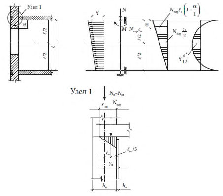
Силу N пер прикладывают в соответствии со схемой на рисунке 7.9.
Рисунок 7.9 - Конструктивная и расчетная схема несущей части стены
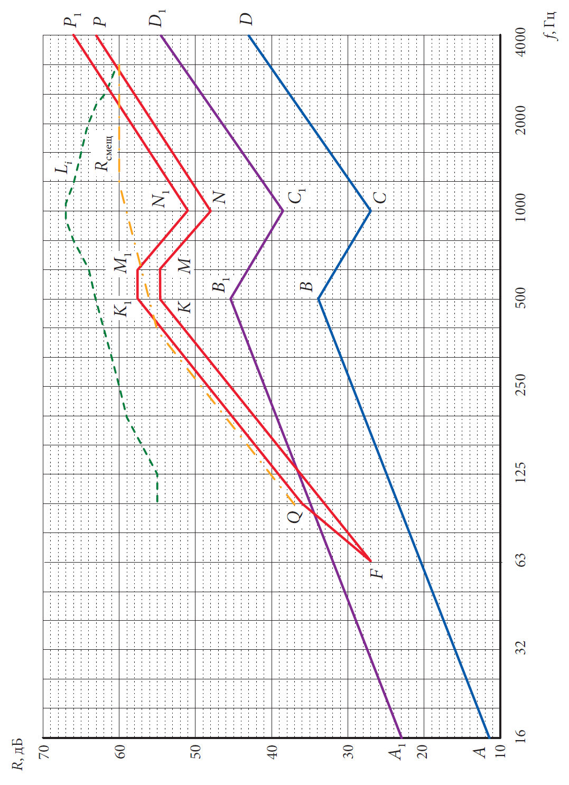
Силы N в и N ст прикладывают в центре тяжести сечения несущей стены простенка.
Рассматривают два случая:
- сечение 1 располагается на уровне верха проема 1-го этажа, при этом момент от ветровой нагрузки не учитывают;
- сечение 2 располагается на уровне середины высоты этажа, при этом учитывают момент от ветровой нагрузки, равный 2 w М q =
В расчете учитывают только несущую способность стены из ПСБ.
Несущую способность стены определяют по методике СП 15.13330 с учетом физико-механических характеристик полистиролбетонной кладки по таблице 5.4.
Расчет на внецентренное сжатие неармированной кладки стены выполняют из условия
где А с - площадь сжатой части сечения;
Rbk - расчетное сопротивление кладки из ПСБ на сжатие;
с - коэффициент продольного изгиба стены, принимаемый в зависимости от гибкости элемента (может быть принят по таблице 19 СП 15.13330.2012); m дл - коэффициент, учитывающий влияние длительной нагрузки.
При гибкости стены прямоугольного сечения р ст 10 h h = принимают
Места опирания железобетонного перекрытия на полистиролбетонную кладку должны быть проверены на смятие из условия
где - коэффициент полноты эпюры давления от местной нагрузки. При треугольной эпюре давления = 0,5;
А с - площадь смятия, А с= оп ст b ;
Rс -расчетное сопротивление кладки на смятие, определяемое из выражения
А = b ст h п - расчетная площадь всего сечения простенка толщиной h п .
Участки глухих стен, отстоящие от поперечных несущих стен далее, чем на 2 , рассчитывают, принимая ширину простенка b и ширину грузовых площадей для вертикальных и ветровых нагрузок, равными 1 п.м.
При этом расчетное сечение принимают на уровне опирания верхнего перекрытия.
7.3Теплозащита
7.3.1 Общие положения и исходные данные
Теплотехнические расчеты ограждающих конструкций из полистиролбетона включают:
- определение приведенного сопротивления теплопередаче для всех типов утепленных ограждающих конструкций (наружные стены, утепленные покрытия и перекрытия) и сравнение их с требованиями таблицы 3 СП 50.13330.2012 с учетом данных СП 131.13330;
- определение сопротивлений воздухопроницанию и паропроницанию наружных стен и проверку их соответствия требованиям СП 50.13330;
- проверку обеспечения условия невыпадения конденсата на внутренней поверхности ограждающих конструкций для наружных стен и утепленных покрытий, в том числе совмещенных.
Расчетные температуры наружного и внутреннего воздуха, относительную влажность воздуха внутри здания, температуру точки росы на внутренней поверхности наружных ограждающих конструкций и градусосутки отопительного периода (ГСОП) принимают по данным СП 131.13330, ГОСТ 30494, СП 50.13330, [4].
Для других видов ограждающих конструкций и типов зданий нормируемое сопротивление теплопередаче принимают согласно СП 50.13330.
Теплотехнические характеристики полистиролбетона, необходимые для теплотехнических расчетов, приведены в таблицах 2 и Б.2 ГОСТ 33929-2016.
Теплотехнические характеристики материалов (кроме полистиролбетона), используемых в рассматриваемых энергоэффективных ограждающих конструкциях, принимают по данным таблицы 7.5.
Таблица 7.5 Расчетные теплотехнические коэффициенты материалов
| Расчетные коэффициенты для условий эксплуатации | Расчетные коэффициенты для условий эксплуатации | Расчетные коэффициенты для условий эксплуатации | ||
|---|---|---|---|---|
| Наименование материала | Плотность, 3 | «А» | «Б» | «А» и «Б» |
| кг/м | Теплопроводность, | Теплопроводность, | Паропроницаемость, мг/(м·ч·Па) | |
| Вт/(м °С) | Вт/(м °С) | |||
| 1 Железобетон | 2500 | 1,92 | 2,04 | 0,03 |
| 2 Цементно-песчаный раствор (штукатурный) | 1800 | 0,76 | 0,93 | 0,09 |
| 3 Кладка из облицовочного керамического кирпича с ограниченной пустотностью на цементно-песчаном растворе | 1600 | 0,58 | 0,64 | 0,14 |
| 4 Пенополиуретан (монтажная пена) | 40 | 0,031 | 0,040 | 0,05 |
| 5 Минераловатные плиты негорючие | 75 | 0,041 | 0,044 | 0,34 |
| 125 | 0,042 | 0,045 | 0,33 | |
| 6 Гипсоволокнистые листы (ГВЛ, ГВЛВ) | 1150 | 0,37 | 0,40 | 0,10 |
| 7 Кладочная клеевая композиция - «холодная» | 1500-1650 | 0,58 | 0,70 | 0,12 |
| - «теплая» | 600-800 | 0,19-0,21 | 0,20-0,22 | 0,17 |
| 8 Филизол (рубероид) | 600 | 0,17 | 0,17 | 0,001 |
| 9 Битум кровельный | 1400 | 0,27 | 0,27 | 0,008 |
| 10 Сталь | 7850 | 0,58 | 58 | 0 |
| 11 Древесина (сосна, ель поперек волокон) | 500 | 0,14 | 0,18 | 0,06 |
| 12 Полиэтилен | 920 | 0,42 | 0,42 | 0 |
Сопротивление воздухопроницанию полистиролбетона для расчетов ограждающих конструкций зданий составляет Ru =120 м² ·ч·Па/кг на толщину 100 мм. Это значение допускается принимать для стеновой кладки из полистиролбетонных блоков при условии использования безусадочных кладочных клеевых композиций.
Расчетные коэффициенты теплоусвоения полистиролбетона для условий эксплуатации «Б» составляют для материала плотностью D250 s = 1,51 Вт/(м² ·°C) и D300 s = 1,79 Вт/(м² ·°C).
7.3.2 Проектирование и оптимизация конструктивно-технических решений наружных стен по условиям теплосбережения и снижения их стоимости
В таблице 7.6 приведен перечень мероприятий по оптимизации конструктивно-технических решений ненесущих наружных стен из полистиролбетонных блоков для зданий с монолитным несущим железобетонным каркасом (остовом), направленных на выполнение требований по приведенному сопротивлению теплопередаче, повышение коэффициента теплотехнической однородности, а также обеспечение условия невыпадения конденсата на внутренней поверхности ограждающей конструкции при минимизации стоимостных затрат.
Таблица 7.6 -Мероприятия по оптимизации конструктивнотехнических решений ненесущих наружных стен полистиролбетонных блоков
| Наименование мероприятия | Статус мероприятия |
|---|---|
| I Общие конструктивные решения здания | I Общие конструктивные решения здания |
| 1 Применение несущих каркасов без фасадных ригелей 2 Примыкание к наружной стене внутренней (поперечной) железобетонной несущей стены с врезкой ее не менее, чем на 40 мм (включая штукатурный слой или ГВЛ). При этом железобетонный торец утепляют термовкладышем из негорючей минераловатной плиты толщиной не менее 50 мм | Рекомендуемое Обязательное |
| 3 Застекление лоджий 4 Крепление навесных конструкций стен с вентилируемым фасадом к торцам железобетонных перекрытий | Рекомендуемое Обязательное |
| II Общие конструктивные решения наружных стен | II Общие конструктивные решения наружных стен |
| 5 Использование не менее двух разновысоких надпроемных полистиролбетонных перемычек, разделенных слоями мягкой минеральной ваты толщиной 5-20 мм 6 Применение для оконных и дверных проемов обрамляющих четвертей: из оштукатуренных полистиролбетонных простеночных блоков с четвертями, образующих вертикальные и нижнюю горизонтальную четверти, и разновысоких перемычек, образующих | Обязательное Обязательное для вертикальных и верхней горизонтальной четвертей, рекомендуемое нижней горизонтальной четверти |
| верхнюю горизонтальную четверть | для |
| 7 Применение оконных и дверных стеклопакетов из дерева или пластика толщиной не менее 125 мм с 3-4 стеклами | Обязательное |
| 8 Применение теплоизоляционных проставок толщиной не менее 100 мм между наружной облицовкой и торцами перекрытий из полистиролбетонных или минераловатных теплоизоляционных плит плотностью 175-225 кг/м³ (при наружном оштукатуривании стен или стен с вентилируемым фасадом) | Обязательное для стен с оштукатуриваемым фасадом |
| 9 Применение в железобетонных перекрытиях над стенами термовкладышей (рекомендуемый шаг - 1200 мм) из полужестких негорючих минераловатных плит (для зданий с кирпичным фасадом и для плит перекрытий, переходящих в плиты лоджий или балконов). | Обязательное для стен с кирпичным фасадом |
|---|---|
| При этом ширина железобетонных шпонок между термовкладышами должна приниматься минимально возможной по прочностному расчету (но не менее 80 мм), а толщина термовкладышей - максимальной с учетом надежного опирания полистиролбетонных блоков (но не менее 175 мм) 10 Устройство консолей толщиной не менее 100 мм в торцах железобетонного перекрытия (для зданий с вентилируемым фасадом), между которыми устанавливаются термовкладыши из негорючей минваты D125 толщиной не менее 300 мм с шагом | Рекомендуемое для стен с навесным вентилируемым фасадом |
| 11 Примыкание внутренней (поперечной) железобетонной стены при применении термовкладышей в перекрытии по пунктам 9 и 10 настоящей таблицы не должно переходить в шпонки, а должно располагаться напротив средней части термовкладыша | Обязательное |
| 12 Применение для внутренней облицовки ГВЛ или ГВЛВ в 2-3 слоя по 10 или 12,5 мм с взаимным перекрытием и заделкой швов, монтируемых на клеевых «маяках» с образованием невентилируемых полостей толщиной 2-3 мм | Рекомендуемое |
| III Конструктивные решения кладки из полистиролбетонных блоков | III Конструктивные решения кладки из полистиролбетонных блоков |
| 13 Применение блоков толщиной не менее 375 мм плотностью D250-D300 (для зданий с вентилируемым фасадом толщиной не менее 295 мм) | Рекомендуемое |
| 14 Устройство кладочных швов минимальной толщины: горизонтальных (со связевыми анкерами) - 3-4 мм и вертикальных - | Обязательное |
| 2-3 мм при средней расчетной толщине 3мм 15 Применение специальных кладочных клеев (использование кладочных растворов запрещается) | Обязательное |
| 16 Применение «теплых» кладочных клеев плотностью 600-800 кг/м³ 17 Запрещается использование стандартных арматурных сеток из проволок диаметром 3 мм и более в горизонтальных кладочных швах для анкеровки штукатурки или фасадной кирпичной кладки | Рекомендуемое Обязательное |
| 18 Применение для анкеровки штукатурки или кирпичной кладки штукатурных сеток из проволоки диаметром не менее 1 мм: стальных с ячейкой не более 20×20 мм или базальтовых с ячейкой не более 25×25 мм, располагаемых в горизонтальных клеевых швах | Обязательное |
| IV Конструктивные решения кирпичной фасадной облицовки | IV Конструктивные решения кирпичной фасадной облицовки |
| 19 Использование лицевого щелевого или с круглыми пустотами (пустотностью не более 25 %) кирпича минимальной объемной плотности с лицевой стенкой толщиной не менее 20 мм (пустоты | Обязательное |
| должны быть расположены перпендикулярно тепловому потоку) 20 Устройство невентилируемых воздушных прослоек толщиной 3-5 мм между кирпичом и полистиролбетонными блоками | Рекомендуемое |
| 21 Применение полуторного кирпича или пустотелых керамических камней с использованием «теплых» кладочных растворов | Рекомендуемое |
7.3.3 Расчет приведенного сопротивления теплопередаче наружной стены
- 7.3.3.1 Определение приведенного сопротивления теплопередаче наружных стен и проверка обеспечения условия невыпадения конденсата на их внутренней поверхности должны, как правило, производиться по температурным полям, рассчитываемым по специальным компьютерным программам в двухмерных координатах.
Приведенное сопротивление теплопередаче наружных стен следует рассчитывать без учета заполнений светопроемов: в целом для здания либо для одного промежуточного этажа (фрагмента ограждающей конструкции здания) с проверкой зон теплопроводных включений, углов и откосов проемов на температуру точки росы на внутренней поверхности стен.
Приведенное сопротивление теплопередаче фрагмента теплозащитной оболочки здания R пр 0 следует определять по формуле (Е.1) СП 50.13330.2012.
- 7.3.3.2 Сопротивление теплопередаче однородной части стены определяют либо экспериментально, либо расчетом по формуле (Е.6) СП 50.13330.2012.
- 7.3.3.3 Удельные потери теплоты через линейную теплотехническую неоднородность определяют по результатам расчета двухмерного температурного поля узла конструкций по формуле (Е.8) СП 50.13330.2012.
- 7.3.3.4 Для предварительной оценки приведенного сопротивления теплопередаче и выбора толщины наружных стен из полистиролбетонных блоков плотностью D250-D300 допускается производить расчет по формуле
где r - значение коэффициента теплотехнической однородности наиболее представительного фрагмента фасада здания принимают для стен с кирпичным фасадом r = 0,74, вентилируемым фасадом r = 0,75 и с оштукатуриваемым фасадом r = 0,77; δПСБ - толщина полистиролбетонного блока, м; λПСБ - расчетный коэффициент теплопроводности полистиролбетона для условий эксплуатации «А» или «Б», Вт/(м∙°С), принимаемый по данным таблицы 2 ГОСТ 33929-2016; обл R - суммарное термическое сопротивление облицовочных слоев;
R в.п. - термическое сопротивление невентилируемых воздушных прослоек, принимаемое с понижающими коэффициентами: 0,9 - для воздушной прослойки между кирпичной и блочной кладками и 0,7 - для прослойки между блочной кладкой и ГВЛ (понижающие коэффициенты учитывают уменьшение расчетных площадей прослоек из-за наличия противопожарных рассечек и клеевых «маяков»);
- r кл -коэффициент теплотехнической однородности блочной кладки, зависящий от высоты и длины блоков, расчетной теплопроводности полистиролбетона и клеевых швов, толщины последних и их армирования. Для его вычисления используют формулу
где шв и шг - толщина соответственно вертикального и горизонтального швов;
L - ширина блоков;
Н - высота блоков;
к - расчетный коэффициент теплопроводности клеевой кладочной композиции, принимаемый по таблице 7.5;
шг - расчетная теплопроводность горизонтального кладочного шва.
Для горизонтального неармированного шва или армированного базальтовой штукатурной сеткой шг= к, а для армированного стальной штукатурной сеткой шг определяют по формуле
где Vа - удельный объем стальной сетки в горизонтальном шве, значения которого определялись для сетки из проволоки диаметром 1 мм с квадратной ячейкой 20×20 мм с использованием выражения
58 - теплопроводность стали ( с), Вт/(м о С).
Значения расчетного коэффициента теплотехнической однородности кладки из полистиролбетонных блоков плотностью D250 для разных толщин кладочных швов на «теплой» и «холодной» клеевых композициях с различным армированием, вычисленные по формулам (7.89) и (7.90), приведены в таблице 5.5.
7.3.4 Расчет нестационарного влажностного режима стеновых ограждающих конструкций здания
7.3.4.1 Математическая модель нестационарного влагопереноса
Расчет нестационарного влажностного режима проводят в соответствии с методикой, достаточно полно отражающей многочисленные факторы, влияющие на влажностный режим конструкций.
Уравнение одномерного перемещения влаги в материале конструкции имеет вид
где p s - давление насыщенного водяного пара, зависящее от температуры, Па; x - пространственная координата, м;
- коэффициент влагопроводности, кг/(м·ч);
- плотность материала, кг/м³ ;
- относительная влажность воздуха в порах материала, доли единицы;
- время, ч;
- коэффициент паропроницаемости, кг/(м·ч·Па); w - влажность материала, кг/кг или %.
Поток влаги через конструкцию - непрерывен. При влажности ниже максимальной сорбционной величина связана с влажностью материала w при помощи изотермы равновесного влагосодержания, т. е. изотермы сорбции или десорбции водяного пара материалом. На стыке двух различных материалов их влажности соответствуют равновесным, в частности, в зоне сорбционного увлажнения - по изотермам сорбции, при сверхсорбционном увлажнении они являются пропорциональными среднесуточным скоростям капиллярного всасывания.
На поверхностях конструкции влагообмен с окружающим воздухом описывается уравнениями граничных условий 3-го вида, т. е. поток влаги из внутреннего воздуха в конструкцию равен:
а поток влаги из конструкции в наружный воздух равен:
где индексы обозначают: s - насыщение; e - наружный; i - внутренний; si - внутренняя поверхность; se - наружная поверхность.
Так как процессы влагопереноса более инерционны, чем процессы теплопереноса, то температурное поле в конструкции предполагается стационарным в любой момент времени. Однако температуру и относительную влажность наружного воздуха принимают переменными в течение года. Причем предполагается, что эти величины изменяются одинаково каждый год.
Эти положения были использованы при создании численного метода расчета влажностного режима, который был реализован. Метод позволяет проводить расчет нестационарного одномерного влагопереноса в многослойной ограждающей конструкции.
7.3.4.2 Описание исходных данных для расчета влажностного режима
Уравнение (7.91) решается в конечных разностях. При этом для проведения расчета необходимы данные, которые можно разделить на четыре группы:
1. Данные об условиях эксплуатации конструкции. К ним относятся значения температуры и относительной влажности воздуха, как с наружной, так и с внутренней стороны конструкции. Эти величины принимаются переменными в течение года.
2. Данные о характеристиках материалов, из которых изготовлена конструкция. К ним относятся:
- плотность материала в сухом состоянии,
- изотерма сорбции или десорбции водяного пара (т. е. влажность материала, равновесная с воздухом различной влажности при увлажнении или сушке материала),
- паропроницаемость в зависимости от влажности материала,
- влагопроводность в зависимости от влажности материала,
- теплопроводность в зависимости от влажности материала,
- среднесуточная скорость капиллярного всасывания.
3. Данные о конструкции. К ним относятся: толщина и порядок расположения однородных слоев в конструкции; места расположения пароизоляционных слоев и величина их сопротивления паропроницаемости; значения коэффициентов тепло- и влагообмена на наружной и внутренней поверхностях конструкции; начальная влажность материалов конструкции.
4. Данные об условиях проведения расчета. К ним относятся: месяц, начиная с которого следует проводить расчет; число лет, для которых следует проводить расчет и периодичность (чаще всего один месяц), с которой следует фиксировать результаты расчета.
Результатами расчета являются распределения влажности по толщине конструкции в любой момент времени ее эксплуатации. Другими словами, в результате расчета определяется эксплуатационная влажность материалов конструкции.
7.3.4.3 Параметры расчета нестационарного влажностного режима исследуемой стены
В результате расчетов должно быть получено распределение весовой влажности материалов по толщине ограждающей конструкции в различные моменты времени. Основными параметрами, характеризующими конструкцию, являются:
- время установления квазистационарного режима - время, за которое конструкция переходит от начального распределения влажности (чаще всего избыточного увлажнения в результате строительных работ) к распределению влажности, вызванному условиями эксплуатации и регулярно повторяющемуся из года в год;
- месяц наибольшего увлажнения;
- слой наибольшего увлажнения;
- максимальная влажность, достигаемая материалом в процесс эксплуатации (период начального увлажнения не учитывается);
- средняя влажность слоя утеплителя в месяц наибольшего увлажнения.
7.3.4.4 Паропроницаемость наружных стен зданий
Наружные стены зданий из блоков или монолитного полистиролбетона, оштукатуренные с фасада и облицованные ГВЛ с внутренней стороны или оштукатуренные с обеих сторон, ввиду незначительной толщины и высокой паропроницаемости штукатурных слоев и ГВЛ при рассмотрении вопроса паропроницаемости условно относятся к однослойным ограждающим конструкциям.
Наружные стены зданий из полистиролбетона, облицованные снаружи кирпичной кладкой и оштукатуренные (или облицованные ГВЛ) с внутренней стороны, при рассмотрении вопроса паропроницаемости условно относятся к двухслойным конструкциям, внутренний слой которых имеет сопротивление паропроницанию более 2,0 (м² ·ч·Па)/мг.
В наружных стенах зданий из полистиролбетона с внутренним несущим железобетонным слоем указанный слой значительно увеличивает сопротивление паропроницаемости стены, являясь дополнительным элементом с очень высоким сопротивлением паропроницанию (более 6,0 (м² ·ч·Па)/мг). Вследствие этого для всех приведенных выше видов наружных стен жилых зданий и большинства типов общественных зданий (за исключением бассейнов, банно-прачечных комбинатов и т. п.), имеющих внутренние помещения с сухим и нормальным влажностным режимом, определять и проверять сопротивление паропроницанию конструкции не требуется.
Для наружных стен зданий, имеющих помещения с влажным и мокрым режимом, следует предусматривать устройство пароизоляции перед внутренней поверхностью полистиролбетонного слоя, а определение и проверку сопротивления паропроницанию конструкции необходимо проводить в обязательном порядке.
7.3.5 Расчет сопротивления воздухопроницанию наружной стены
Расчет сопротивления воздухопроницанию глухих участков полистиролбетонных наружных стен проводят по СП 50.13330 с учетом данных по рекомендуемому сопротивлению полистиролбетона, приведенных в ГОСТ 33929. Методика расчета приведена в [4].
Расчет требуемого сопротивления воздухопроницанию проводят по формулам (7.1)-(7.4) СП 50.13330.2012.
Расчетное сопротивление воздухопроницанию наружной стены должно превышать требуемое значение тр и н R R .
Для заполнения энергетического паспорта здания определяют расчетную воздухопроницаемость глухого участка наружной стены G , используя формулу (7.1) СП 50.13330.2012, которая должна быть меньше нормативной воздухопроницаемости
7.3.6 Теплотехнический расчет утепленных покрытий и перекрытий
Для расчетов приведенного сопротивления теплопередаче утепленных покрытий и перекрытий приведены формулы [4].
При этом коэффициент теплотехнической однородности покрытия или перекрытия принимают: при использовании монолитного полистиролбетона r = 1,0, плитного r = 0,97 при укладке плит на «теплом» клею и r = 0,95 - на «холодном» клею.
Допускается для расчетов утепленных покрытий с негоризонтальными наружными поверхностями, обеспечивающими внутренний водосток, принимать среднюю величину толщины слоя полистиролбетонного утеплителя. При этом, при проверке условия невыпадения конденсата на внутренней поверхности утепленного покрытия в расчете используют минимальную проектную толщину утеплителя.
7.3.6.1 Расчет требуемого приведенного сопротивления теплопередаче
Требуемое приведенное сопротивление теплопередаче утепленного полистиролбетоном покрытия или перекрытия находят по данным таблицы 3 СП 50.13330.2012 с использованием линейной интерполяции.
7.3.6.2 Расчет приведенного сопротивления теплопередаче
Приведенное сопротивление теплопередаче утепленного полистиролбетоном покрытия [4, формулы (7) и (8)] определяют по формуле
где R нec , R п , R ПСБ , R в.с и R г - термические сопротивления несущего элемента, пароизоляции, полистиролбетонного утеплителя, выравнивающей стяжки и гидроизоляции соответственно;
в и н - коэффициенты теплообмена у внутренней и наружной поверхности покрытия. Принимают в= 8,8 и н= 23 Вт/(м² ∙ о С).
По условию теплозащиты приведенное расчетное сопротивление теплопередаче покрытия или перекрытия должно быть не ниже требуемого
7.3.6.3 Проверка условия невыпадения конденсата на внутренней поверхности покрытия
При расчетной температуре внутреннего воздуха в помещении t в = +20 °С температура точки росы на внутренней поверхности ограждающей конструкции равна t d = +10,7 °C [4, приложение Р].
Условие невыпадения конденсата для участка покрытия с уклоном для водостока определяют для участка с минимальной проектной толщиной полистиролбетонного утеплителя, для которого предварительно вычисляют сопротивление теплопередаче этого участка пр 0 R .
Для расчетной температуры наружного воздуха t н, принимаемой по данным СП 131.13330 для наиболее холодной пятидневки с обеспечиваемостью 0,92, определяют температуру на внутренней поверхности покрытия по формуле
Эта температура должна быть выше температуры точки росы на внутренней поверхности конструкции, т. е.
7.4Звукоизоляция
При проектировании ограждающих конструкций с использованием полистиролбетона защиту от шума (звукоизоляцию наружных стен) необходимо проверять в соответствии с требованиями, установленными в СП 51.13330.
В соответствии с 6.3 СП 51.13330.2011 устанавливают нормативные требования по уровню шума в жилых и общественных зданиях в зависимости от его категории [5], которые утверждаются в техническом задании на проектирование.
Нормируемым параметром звукоизоляции внутренних помещений жилых и общественных зданий является индекс изоляции воздушного шума ограждающими конструкциями Rw , дБ.
Нормируемым параметром звукоизоляции наружных ограждающих конструкций (в том числе окон, витрин и других видов остеклений) является звукоизоляция RA тран, дБА, представляющая собой изоляцию внешнего шума, производимого потоком городского транспорта.
При проектировании определяют частотные характеристики ограждающих конструкций, расчетные значения индексов звукоизоляции, которые сравнивают с нормируемыми значениями.
Для зданий с энергоэффективными ограждающими стеновыми конструкциями на основе полистиролбетона с техническими решениями, приведенными в настоящем своде правил, расчеты по звукоизоляции от наружного шума должны проводиться в первую очередь для стен с фасадным и внутренним оштукатуриванием, как наиболее уязвимых по звукозащите.
7.4.1 Пример расчета звукоизоляции для глухой наружной стены из полистиролбетонных блоков, оштукатуренной с двух сторон
Исходные данные: толщина каждого штукатурного слоя d шт = 20 мм, плотность шт = 1600 кг/м³ . Толщина полистиролбетонных блоков d ПСБ = 375 мм, плотность ПСБ = 250 кг/м³ , динамический модуль упругости Е д = 8, 5 10 5 Па (см. 5.17 ГОСТ 33929-2016).
Расчетом проверяют индекс воздушного шума Rw и звукоизоляции RА тран рассматриваемой стены [5].
Поверхностная плотность штукатурных слоев
Частотную характеристику изоляции шума определяют графическим способом в виде ломаной линии. Последовательность построения представлена на рисунке 7.10.
Строят частотную характеристику изоляции для стены, состоящей из одного слоя штукатурки - линия АВСD [5, пункт 3.5]. Координаты точек В и С [5, таблица 11]:
Отрезки АВ и СD строят, т. е. наклон АВ составляет 4,5 дБ/окт., наклон СD - 7,5 дБ/окт [5, рисунок 5].
Рисунок 7.10 -Расчетная частотная характеристика стены
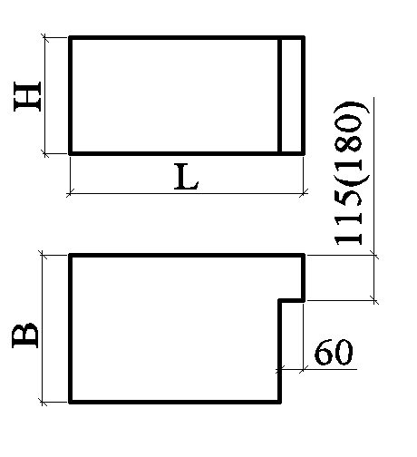
Общую поверхностную плотность ограждения определяют с учетом двух штукатурных слоев с плотностью m 1 = m 2 = 32 кг/м² и поверхностной плотности заполнения m 3 = 250 0,375 = 93,75 кг/м² . Общая поверхностная плотность m общ = 2 32 + 93,75 158 кг/м² , соотношение m общ/ m 1 = 158/32 = 4,93. Определяют величину поправки R 1=10,5 дБ [5, таблица 12] и на графике строят линию А 1 В 1 С 1 D 1 путем прибавления к ординатам линии АВСD поправок R 1 на увеличение поверхностной плотности.
Определяют частоту резонанса р для стены из полистиролбетона (пористый материал с жестким скелетом) [5, формула (11)]
с округлением до ближайшей среднегеометрической частоты трети октавной полосы р = 63 Гц.
На частоте р=63 Гц величина звукоизоляции [5, пункт 3.6] на 4 дБ ниже линии А 1 В 1 С 1 D 1 (точка F на рисунке 7.10), тогда RF = 26,8 дБ.
На частоте 8 р (три октавы выше частоты резонанса), т. е. к = 500 Гц находится точка К с ординатой RK = RF + H , где Н = 28 дБ [5, таблица 13], RK = 26,8 + 28 = 54,8 дБ. Точка К лежит на одной вертикали с точкой В .
Определяют поправку R 2 = RK -RВ = 9,6 дБ. От точки К до следующей трети октавной полосы проводят горизонтальный отрезок КM .
Точка N находится на частоте fС =1000 Гц, причем RN = RК + R 1 + R 2 = 28 + 10,5 + 9,6 = 48,1 дБ.
На частоте 1,6 р=100 Гц точка Q расположена выше соответствующей точки прямой FK на величину поправки R 4= 3 дБ [5, таблица 14]. Линия QК 1 М 1 N 1 Р 1 смещена вверх относительно линии FКМNР на R 4 = 3 дБ и представляет собой частотную характеристику рассматриваемой стены.
Дальнейший расчет представлен в таблице 7.7. В первой строке таблицы 7.7 приведены величины изоляции воздушного шума Ri в нормируемом диапазоне частот, соответствующие графику QК 1 М 1 N 1 Р 1. Во второй строке приведены ординаты оценочной кривой Rin [5, пункт 2, таблица 5]. В большинстве трети октавных полос величины Ri больше Rin Неблагоприятных отклонений (вниз) всего два, что видно в строке 3 таблицы 7.7. Сумма неблагоприятных отклонений составляет 3,9 + 2,4 = 6,3 дБ, что значительно меньше 32 дБ, поэтому строят смещенную вниз на 4 дБ оценочную кривую, координаты которой приведены в строке 4 таблицы 7.7. В пятой строке приведены величины неблагоприятных отклонений от нее. Их сумма составляет 0,8 + 0,7 + 0,6 + 2 0,5 + 0,4 + 0,3 + 3,6 + 7,9 + 6,4 + 3,9 + 1,4 = 27 дБ, что достаточно близко к 32 дБ. Смещенная оценочная кривая показана на рисунке 7.10 штрихпунктирной линией.
Таблица 7.7 Расчетные параметры звукоизоляции
| Среднегеометрические частоты третьоктавных полос, Гц | Среднегеометрические частоты третьоктавных полос, Гц | Среднегеометрические частоты третьоктавных полос, Гц | Среднегеометрические частоты третьоктавных полос, Гц | Среднегеометрические частоты третьоктавных полос, Гц | Среднегеометрические частоты третьоктавных полос, Гц | Среднегеометрические частоты третьоктавных полос, Гц | Среднегеометрические частоты третьоктавных полос, Гц | Среднегеометрические частоты третьоктавных полос, Гц | Среднегеометрические частоты третьоктавных полос, Гц | Среднегеометрические частоты третьоктавных полос, Гц | Среднегеометрические частоты третьоктавных полос, Гц | Среднегеометрические частоты третьоктавных полос, Гц | Среднегеометрические частоты третьоктавных полос, Гц | Среднегеометрические частоты третьоктавных полос, Гц | Среднегеометрические частоты третьоктавных полос, Гц | |
|---|---|---|---|---|---|---|---|---|---|---|---|---|---|---|---|---|
| Величина | 100 | 125 | 160 | 200 | 250 | 315 | 400 | 500 | 630 | 800 | 1000 | 1250 | 1600 | 2000 | 2500 | 3150 |
| 1 R i , дБ | 36,2 | 39,3 | 42,4 | 45,5 | 48,5 | 51,6 | 54,7 | 57,8 | 57,8 | 54,4 | 51,1 | 53,6 | 56,1 | 58,6 | 61,1 | 63,6 |
| 2 R in , дБ | 33 | 36 | 39 | 42 | 45 | 48 | 51 | 52 | 53 | 54 | 55 | 56 | 56 | 56 | 56 | 56 |
| 3 R in - R i , дБ | 3,90 | 2,40 | ||||||||||||||
| 4 R смещ , дБ | 37,0 | 40,0 | 43,0 | 46,0 | 49,0 | 52,0 | 55,0 | 56,0 | 57,0 | 58,0 | 59,0 | 60,0 | 60,0 | 60,0 | 60,0 | 60,0 |
| 5 R смещ - R i , дБ | 0,8 | 0,7 | 0,6 | 0,5 | 0,5 | 0,4 | 0.3 | 3,6 | 7,9 | 6,4 | 3,9 | 1,4 | ||||
| 6 L i , дБА | 55 | 55 | 57 | 59 | 60 | 61 | 63 | 63 | 64 | 66 | 67 | 66 | 65 | 64 | 62 | 60 |
| 7 i = L i - R i | 18,8 | 15,7 | 14,6 | 13,5 | 11,5 | 9,4 | 7,3 | 5,2 | 6,2 | 11,5 | 15,9 | 12,4 | 8,9 | 5,4 | 0,9 | -3,6 |
| 8 0,1 i | 1,88 | 1,57 | 1,46 | 1,35 | 1,15 | 0,94 | 0,73 | 0,52 | 0,62 | 1,15 | 1,59 | 1,24 | 0,89 | 0,54 | 0,09 | |
| 9 10 0,1( L i - R i ) | 75,9 | 37,3 | 29,0 | 22,6 | 14,0 | 8,6 | 5,3 | 3,3 | 4,2 | 14,3 | 38,9 | 17,4 | 7,8 | 3,5 | 1,2 | |
| 10 16 1 10 i = 0,1( L i - R i ) | 283,3 | 283,3 | 283,3 | 283,3 | 283,3 | 283,3 | 283,3 | 283,3 | 283,3 | 283,3 | 283,3 | 283,3 | 283,3 | 283,3 | 283,3 | 283,3 |
Индекс изоляции воздушного шума рассматриваемой конструкции равен ординате смещенной кривой в трети октавной полосы со среднегеометрической частотой 500 Гц, т. е. R = 56 дБ, что больше нормируемой величины Rw = 54 дБ для стен и перегородок между квартирами, между помещениями квартир и лестничными клетками, холлами, коридорами, вестибюлями в жилых домах категории А [5, пункт 8, таблица 1]. Рассматриваемая конструкция не может применяться в качестве стены между помещениями квартир и магазинами, а также между номером гостиницы и рестораном в зданиях категории А, между операционными и между музыкальными классами, где требуется индекс изоляции выше 56 дБ.
В шестой строке таблицы 7.7 приведены уровни эталонного спектра шума потока городского транспорта Li , скорректированные по кривой частотной коррекции «А» для шума с уровнем 75 дБА [5, таблица 4]. Кривая Li показана на рисунке 7.10 штриховой линией. В седьмой строке таблицы 7.7 приведены разности i = Li -Ri . Для частоты 3150 Гц 16 0, поэтому 16 в дальнейшем расчете не участвует. В 8 и 9 строках таблицы 7.7 приведены вычисленные величины 0,1 i и 10 0,1( Li -Ri ) , а в 10 строке - их суммирование 16 1 10 i = 0,1( Li -Ri ) = 283,3.
Величину звукоизоляции наружной стены RА тран определяют по формуле
Полученная величина значительно превышает требуемые значения RА тран [5, таблица 2] для эквивалентных уровней звука у фасада здания при наиболее интенсивном движении транспорта, т. е. условия звукоизоляции удовлетворяются.
7.5Противопожарная защита
7.5.1 Общие положения
Пожарная безопасность конструкций из полистиролбетона должна обеспечиваться соблюдением требований, установленных для ограждающих конструкций зданий в [1] и СП 2.13130. В частности, предел огнестойкости наружных ограждающих конструкций принимают по [1, таблица 21] и пункту 5.20 ГОСТ 33929-2016.
Показатели по горючести, воспламеняемости и дымообразующей способности полистиролбетона приведены в таблице 6 ГОСТ 33929-2016.
При проектировании ограждающих конструкций из полистиролбетона, имеющего группу горючести Г1, должны предусматриваться противопожарные мероприятия, зависящие от этажности и функционального назначения здания. Для полистиролбетона необходима защита от солнечных лучей.
Защиту полистиролбетона группы горючести Г1 от внешних и внутренних огневых воздействий в наружных стенах для жилых и общественных зданий IIIV степеней огнестойкости с классом пожарной опасности К0 (15) и конструктивной пожарной опасности С0 обеспечивают оштукатуриванием толщиной не менее 20 мм по стальной сетке или использованием ГВЛ в два слоя по 10 мм для внутренней облицовки, или облицовкой кирпичом (не менее чем в одну четверть).
Для обеспечения пожарной безопасности в жилых зданиях высотой 51-75 м (I степени огнестойкости) класса пожарной опасности К0 (30) необходимо для внутренней облицовки наружных стен использовать ГВЛ толщиной не менее 25 мм (2×12,5 мм) или армированную металлической сеткой цементно-песчаную штукатурку толщиной не менее 25 мм.
Откосы оштукатуривают по сетке на 30 мм или облицовывают (с внутренней стороны) ГВЛ в три слоя по 10 мм.
Проектирование и строительство зданий с энергоэффективной системой ограждающих конструкций из особо легкого полистиролбетона допускается для жилых домов классов функциональной пожарной опасности Ф1.3 высотой не более 75 м, Ф1.2 и Ф1.4, а также общественных зданий, кроме класса Ф4.1, высотой не более 50 м.
Допускается строительство зданий классов пожарной функциональной опасности Ф 1.1 высотой не более 3 этажей (для ПСБ Г1) при условии облицовки наружных стен с обеих сторон армированной цементно-песчаной штукатуркой толщиной не менее 30 мм.
При облицовке стен из полистиролбетонных блоков керамическим кирпичом с воздушным зазором толщиной не более 10 мм данный зазор разделяют на секции площадью не более 3 м² полосами из негорючей клеевой композиции шириной 10-20 мм на всю толщину зазора.
Примеры использования негорючих материалов в узлах наружных стен из полистиролбетонных блоков, примыкающих к оконным (дверным) проемам, приведены в 6.3. При применении деревянных и пластиковых оконных (дверных) коробок они должны отделяться от полистиролбетонных блоков негорючими прокладками, а в качестве теплоизоляционных термовкладышей необходимо использовать негорючую минеральную вату.
Для наружных стен из сборных полистиролбетонных изделий первостепенное внимание должно быть обращено на армированные полистиролбетонные перемычки, оштукатуренные снизу, как на наиболее пожароопасные части ограждающих конструкций зданий.
7.5.2 Исходные требования к расчетам полистиролбетонных перемычек
Для проверки пожарной безопасности применяемых в наружных стенах армированных перемычек из особо легкого полистиролбетона необходимо руководствоваться расчетами пределов огнестойкости бетонных и железобетонных конструкций с уточнениями, касающимися полистиролбетона.
С учетом того, что несущую способность конструкции при пожаре проверяют при действии нормативной нагрузки, равной 0,5 от расчетной несущей способности, температура полистиролбетона в месте расположения анкерных устройств (арматуры) должна быть не выше ≈ 100 °С (при этом расчетное усилие в арматуре снижается на ≈ 30 %, что допустимо).
Расчетный коэффициент теплопроводности материалов (полистиролбетона и штукатурки) принимают для условий эксплуатации «А». Коэффициенты условий работы полистиролбетона и штукатурки в зависимости от температуры нагрева приведены в таблице 7.8.
Таблица 7.8 Коэффициенты условий работы bt материалов
| Средняя плотность, | Температура нагрева, о С | Температура нагрева, о С | Температура нагрева, о С | Температура нагрева, о С | Температура нагрева, о С | Температура нагрева, о С | Температура нагрева, о С | Температура нагрева, о С | Температура нагрева, о С | |
|---|---|---|---|---|---|---|---|---|---|---|
| Материал | , кг/м | 20 | 100 | 200 | 300 | 400 | 500 | 600 | 700 | 800 |
| Полистиролбетон | 300 | 1,0 | 0,7 0,8 | 0,05 0,1 | - 0,03 | - | - | - | - | - |
| 400 | 1,0 | - | - | - | - | - | ||||
| 500 | 1,0 | 0,9 | 0,8 | 0,5 | 0,1 | - | - | - | - | |
| Цементно-песчаный бетон (штукатурка) | 1900 | 1,0 | 0,9 | 0,95 | 0,87 | 0,73 | 0,6 | 0,5 | 0,4 | 0,2 |
Расчеты предела огнестойкости рекомендованных в настоящем своде правил полистиролбетонных перемычек со штукатурной облицовкой толщиной не менее 20 мм должны подтверждать возможность их пожаробезопасного применения в наружных стенах зданий с учетом предела огнестойкости - не менее 0,5 ч.
Расчеты проводят для перемычек, армированных стальным арматурным каркасом, сваренным из продольных проволок и поперечных анкерующих стержней (1-й тип), и армированных стальным оцинкованным профилем (2-й тип), конструктивные особенности которых приведены в 7.2.5.
7.5.3 Расчет перемычек со стальным арматурным каркасом
- 7.5.3.1 Определение приведенной толщины штукатурного слоя
В расчетах сначала определяют температура на уровне центра тяжести анкерных стержней диаметром d анк, приваренных к продольным армирующим стержням. С учетом штукатурного слоя расстояние от поверхности штукатурки толщиной h шт до указанного уровня равно
где h шт· - приведенная толщина штукатурного слоя;
- коэффициент приведения температуропроводности полистиролбетона к штукатурному слою, вычисленный по формуле (7.99); h ПСБ - защитный слой полистиролбетона до низа арматуры; d пр - диаметр продольной арматуры.
Для определения коэффициента приведения необходимо вычислить коэффициенты температуропроводности для штукатурного слоя из мелкозернистого песчаного бетона с шт = 1900 кг/м³ и полистиролбетона с плотностью ПСБ.
Коэффициент теплопроводности ( t ), Вт/(м о С), определяют по формуле
где А - коэффициент теплопроводности при 20 о С;
В - коэффициент, учитывающий изменение теплопроводности материала при нагреве, Вт/м.
Удельную теплоемкость С ( t ), кДж/(кг
о С), определяют по формуле , (7.96) где С - удельная теплоемкость при 20 о С; t - температура материала;
D -коэффициент, учитывающий изменение удельной теплоемкости материала при нагреве, кДж/кг.
Значения параметров А , В , С и D для полистиролбетона разной плотности и цементно-песчаной штукатурки D1900 приведены в таблице 7.9.
Таблица 7.9 Значения параметров для расчета пожарной безопасности перемычек
| Средняя | Значения параметров | Значения параметров | Значения параметров | Значения параметров | |
|---|---|---|---|---|---|
| Материал | плотность, , кг/м³ | А , Вт/(м о С) | В , Вт/м | С , кДж/(кг о С) | D , кДж/кг |
| Полистиролбетон | 300 400 500 | 0,095 0,12 0,14 | - - - | 1,06 | 0,00048 |
| Цементно-песчаный бетон (штукатурка) | 1900 | 1,04 | -0,00058 | 0,75 | 0,00063 |
Коэффициенты температуропроводности материалов определяют по формулам:
- для полистиролбетона
Коэффициент приведения температуропроводности полистиролбетона к штукатурке вычисляют по формуле
7.5.3.2 Определение температуры прогрева на уровне центра тяжести анкерующих стержней
Среднее значение коэффициента температуропроводности аred определяют по формуле
где w - расчетное массовое отношение влаги в полистиролбетоне, принимаемое по таблице 2 ГОСТ 33929-2016 для условий эксплуатации «А»;
П2 - массовая доля пенополистирола в полистиролбетоне.
Толщину L прогреваемого защитного слоя полистиролбетона определяют по формуле
где - время прогрева перемычки, равное 0,5 ч.
- для штукатурки
Для определения температуры в полистиролбетоне предварительно вычисляют условный линейный параметр
где 1 - коэффициент, зависящий от плотности полистиролбетона и назначаемый по таблице 7.10.
Таблица 7.10 - Значение коэффициента 1
| Средняя плотность, , кг/м³ | 300 | 400 | 500 | 1900-2000 |
|---|---|---|---|---|
| Коэффициент 1 | 0,3 | 0,38 | 0,46 | 0,6 |
Относительное расстояние r определяют по формуле
. (7.103)
Температуру полистиролбетона на расстоянии х (с учетом толщины штукатурного слоя, приведенного к полистиролбетонному слою) от обогреваемой поверхности определяют по формуле
Рассчитанная температура должна быть меньше 100 о С, т. е. t 100 о С.
7.5.4 Расчет перемычек, армированных П-образным стальным оцинкованным профилем
7.5.4.1 Общие исходные требования
При расчете несущей способности перемычки учитывают изменение механических свойств полистиролбетона и стального профиля в зависимости от температуры нагрева.
Для расчета критических значений коэффициента условий работы на огнестойкость расчетные сопротивления сжатию полистиролбетона Rbu и растяжению арматурного профиля Rsu определяют путем деления нормативных сопротивлений на соответствующие коэффициенты надежности -по полистиролбетону b = 0,83, по арматурному элементу bs = 0,9.
При определении предела огнестойкости конструкции расчетные сопротивления полистиролбетона и арматурного профиля снижают путем умножения на коэффициенты условий работы бетона и арматуры в зависимости от критической температуры, при которой наступает предельное состояние. Критическую температуру нагрева полистиролбетона принимают равной 300 о С. Критическую температуру нагрева арматуры определяют по таблице 7.11 с предварительным расчетом коэффициента условий работы.
В зависимости от критической температуры полистиролбетона и арматурного профиля подбирают толщину защитного штукатурного слоя.
Таблица 7.11 Коэффициенты условий работы bs арматурного профиля
| Температура арматуры, t , о С | 350 | 400 | 450 | 500 | 550 | 600 | 650 | 700 | 750 | 800 |
|---|---|---|---|---|---|---|---|---|---|---|
| Коэффициент bs | 1,0 | 1,0 | 0,80 | 0,65 | 0,50 | 0,35 | 0,23 | 0,15 | 0,05 | 0 |
7.5.4.2 Определение критической температуры арматурного элемента
Критическую температуру t cr , определяют в зависимости от критического значения коэффициента условий работы арматурного элемента st.cr .
Для арматурного профиля значение коэффициента условий работы st.cr определяют по формуле
где 2 н 0 8 = q L М - максимальный изгибающий момент от нормативной нагрузки; b , h 0 и As - геометрические и расчетные параметры перемычки (см. 7.2.5 и таблицу 7.4).
Критическую температуру t cr для металла (сталь 3) при рассчитанных st.cr определяют по таблице 7.11.
7.5.4.3 Расчет толщины защитного слоя штукатурки
Необходимую толщину защитного слоя штукатурки определяют с учетом критической температуры в арматурном элементе.
Относительное расстояние от обогреваемой поверхности определяют по формуле
Необходимую толщину защитного слоя определяют по формуле (7.101).
7.5.4.4 Определение предела огнестойкости приведенного сечения перемычки
Поскольку критическая температура прогрева полистиролбетона принята 300 о С, необходим проверочный расчет для определения предела огнестойкости полистиролбетона при заданной температуре нагрева на уровне центра тяжести растянутого арматурного профиля, равной 200 о С.
Определение предела огнестойкости полистиролбетонной перемычки, армированной П-образным стальным оцинкованным профилем, проводят также как и для перемычки, армированной стальным каркасом, с использованием формул (7.94)-(7.106).
При этом температура t cr полистиролбетона на уровне центра тяжести растянутого П-образного профиля не должна превышать 200 о С, т. е. должно выполняться условие t cr 200 о С.
7.6Санитарно-гигиенические требования и экологическая безопасность
При изготовлении особо легкого полистиролбетона, изделий на его основе, а также при строительстве и эксплуатации зданий с системой ограждающих конструкций из особо легкого полистиролбетона необходимо соблюдать требования [2] и [3].
Полистиролбетон в изделиях и в конструкциях не должен выделять во внешнюю среду вредные химические вещества в количествах, превышающих предельно допустимые концентрации (ПДК), установленные [11], [12] и СанПиН 2.1.2.729.
Экологическая безопасность полистиролбетонных изделий в ограждающих конструкциях зданий достигается путем использования полистирольного бисера в качестве исходного сырья для получения пенополистирольного заполнителя с содержанием свободного стирола, не превышающим ПДК.
При применении полистиролбетонных изделий и конструкций соблюдение требований по недопущению превышения ПДК загрязняющих и вредных веществ, указанных в [11], [12], должно подтверждаться санитарногигиеническими заключениями соответствующих органов санитарного надзора.
Удельная эффективная активность естественных радионуклидов Аэфф сырьевых материалов, применяемых для приготовления полистиролбетонов, не должна превышать предельных значений, Бк/кг, в зависимости от области применения полистиролбетона. При этом соблюдение требований ГОСТ 30108 и СанПиН 2.6.1.2523 также должно подтверждаться санитарно-гигиеническими заключениями соответствующих органов санитарного надзора.
Приложение А
Комплектная номенклатура полистиролбетонных изделий
Таблица А.1
| Сокращенное | Р а з м е р ы, мм | Р а з м е р ы, мм | Р а з м е р ы, мм | Класс (марка) по | Марка по | |
|---|---|---|---|---|---|---|
| Вид и эскиз изделий | обозначение марки | В | Н | L | прочности на сжатие | средней плотности |
| Рядовые блоки | СБР6 | 295 375 | 375 | 595 (598) | В0,35- В0,75 | D250- D300 |
| СБР7 | 295 375 | 375 | 297 (299) | В0,35- В0,75 | D250- D300 | |
| СБР8 | 295 375 | 295 | 595 (598) | В0,35- В0,75 | D250- D300 | |
| СБР9 | 295 375 | 295 | 297 (299) | В0,35- В0,75 | D250- D300 | |
| Доборные блоки | СБД | 295 375 | 60 145 | 375 | В0,35- В0,75 | D250- D300 |
| Простеночные блоки | СБПр1 | 375 | 295 | 595 (598) | В0,35- В0,75 | D250- D300 |
| Простеночные блоки | СБПр2 | 375 | 295 | 297 (299) | В0,35- В0,75 | D250- D300 |
| Подоконные блоки | СБПд1 | 375 | 295 | 595 (598) | В0,35- В0,75 | D250- D300 |
| Подоконные блоки | СБПд2 | 375 | 295 | 297 (299) | В0,35- В0,75 | D250- D300 |
| Перемычки | СБП 120.I СБП120.II СБП120.III СБП120.IV СБП120.VI СБП120.VIII СБП120.IX | 180 140 180 140 115 140 115 | 295 295 235 235 295 180 235 | 1198 (1195) | В0,35- В0,75 | D250- D350 |
| СБП 150.I СБП150.II СБП150.III СБП150.IV СБП150.VI СБП150.VIII | 180 140 180 140 115 140 | 295 295 235 235 295 180 | 1498 (1495) | В0,35- В0,75 | D250- D350 |
| СБП.180I СБП.180II СБП.180III СБП.180IV СБП.180VI СБП.180VIII СБП180.IX | 180 140 180 140 115 140 115 | 295 295 235 235 295 180 235 | 1798 (1795) | В0,35- В0,75 | D250- D350 | |
|---|---|---|---|---|---|---|
| Перемычки | СБП 210.I СБП210.II СБП210.III СБП210.IV СБП210.VI СБП210.VIII СБП210.IX | 180 140 180 140 115 140 115 | 295 295 235 235 295 180 235 | 2098 (2095) | В0,35- В0,75 | D250- D350 |
| СБП 240.I СБП240.II СБП240.III СБП240.IV СБП240.VI СБП240.VIII СБП240.IX | 180 140 180 140 115 140 115 | 295 295 235 235 295 180 235 | 2398 (2395) | В0,35- В1,5 | D250- D500 | |
| СБП 270.I СБП270.II СБП270.III СБП270.IV СБП270.VI СБП270.VIII СБП270.IX | 180 140 180 140 115 140 115 | 295 295 235 235 295 180 235 | 2698 (2695) | В0,35- В1,5 | D250- D500 | |
| СБП 300.I СБП300.II СБП300.III СБП300.IV СБП300.VI СБП300.VIII СБП300.IX | 180 140 180 140 115 140 115 | 295 295 235 235 295 180 235 | 2900; 2998 (2995) | В0,35- В1,5 | D250- D500 | |
| Плиты теплоизоляционные | ПТ-2 | 600 | 100( 200) | 900 | М2-М7,5 | D175- D225 |
Примечания
1 При возведении стен изделия всех видов (кроме перемычек, подоконных и простеночных блоков с четвертями) могут укладываться в любом положении.
2 Допускается изготовление полистиролбетонных блоков и теплоизоляционных плит, в т. ч. доборных, других размеров, классов (марок) по прочности и марок по плотности.
3 При наличии рабочих чертежей, утвержденных в установленном порядке и согласованных с разработчиком настоящего свода правил, допускается изготовление и применение перемычек других типоразмеров и несущей способности.
4 В скобках указаны размеры изделий, применяемые по согласованию с проектной или строительной организацией.
Приложение Б
Условные графические обозначения
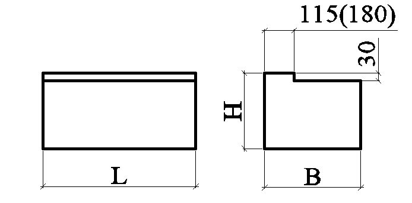
БИБЛИОГРАФИЯ
[1] Федеральный закон от 22 июля 2008 г. № 123-ФЗ «Технический регламент о требованиях пожарной безопасности»
[2] Федеральный закон от 04 мая 1999 г. № 96-ФЗ «Об охране атмосферного воздуха
[3] Федеральный закон от 10 января 2002 г. № 7-ФЗ «Об охране окружающей среды»
[4] СП 23-101-2004 Проектирование тепловой защиты зданий
[5] СП 23-103-2003 Проектирование звукоизоляции ограждающих конструкций жилых и общественных зданий
[6] Методика расчета и конструирования наружных стен с применением кладки из полистиролбетонных блоков. - М.: ВНИИжелезобетон, МНИИТЭП, ЦНИИСК им. В.А.Кучеренко, 2010
[7] Методическое пособие для проектирования «Технические решения многослойных продольных и торцевых наружных стен, облицованных кирпичом толщиной 120 мм (с утолщенной наружной стенкой или с пустотностью 13%), для строительства жилых и общественных зданий высотой до 75 м». - М.: ОАО «ЦНИИЭПжилища», ЦНИИСК им. В.А.Кучеренко, 2010
[8] Указания по проектированию перемычек из полистиролбетона для наружных стен зданий. - М.: ВНИИжелезобетон, 2000
[9] Указания по проектированию полистиролбетонных перемычек, армированных П-образным стальным оцинкованным профилем, для ограждающих конструкций зданий. - М.: ВНИИжелезобетон, 2011
[10] СП 82-101-98 Приготовление и применение растворов строительных
[11] ГН 2.1.6.1338-03 Предельно допустимые концентрации (ПДК) загрязняющих веществ в атмосферном воздухе населенных мест
[12] ГН 2.2.5.1313-03 Предельно допустимые концентрации (ПДК) вредных веществ в воздухе рабочей зоны